Код 7500. Несколько тревожных минут, когда весь мир поверил в захват самолёта
Пассажирский Airbus A320, летевший из Варшавы в Тель-Авив, внезапно передал код 7500 — международный сигнал захвата самолёта.
Через несколько минут в небо поднялись два турецких истребителя F-16. Они сопровождали лайнер, пока тот находился в воздушном пространстве Турции. Для всех служб это выглядело как возможный угон.
К счастью, тревога оказалась ложной. По предварительным данным, причиной стал ошибочно переданный аварийный сигнал. Вместо Тель-Авива самолёт направили в болгарский Бургас, где его уже ждали экстренные службы и полиция.
💥Повідомляють про вибухи у Харкові.
✔ @radar_raketaa
🤡 «Я очень горжусь тем, что у нас самый гейский* парламент. Не думаю, что где-либо в мире есть парламент, который был бы более гейским*, чем этот», — подчеркнул Кир Стармер, подводя итоги своей работы на посту премьер-министра Британии.
*ЛГБТ-движение признано экстремистским и запрещено в России
🇷🇺 Если у вас не воспроизводится ролик, продолжите просмотр в нашем канале Соловьёв в МАКС.
Шостка, Сумщина
Підари розкидають з безпілотників листівки.
Ймовірно, на них зображена коротка історія життя руснявого військового 😁
#приймальняєрадару
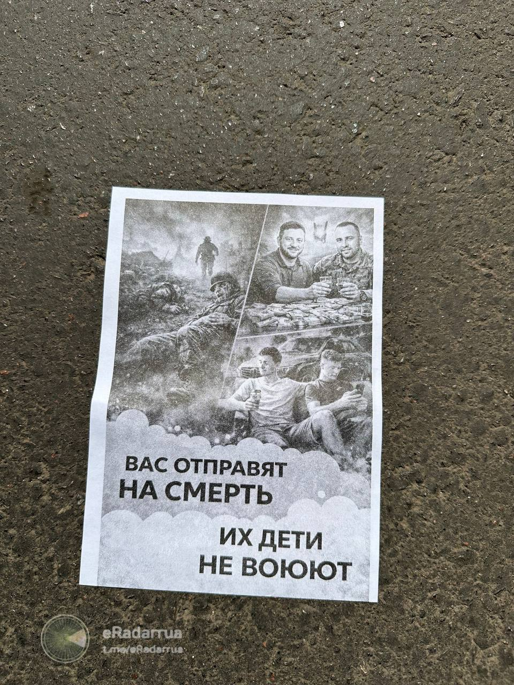
❗️Вік повноліття та сексуальної згоди хочуть підвищити до 21 року, – судово-юридична газета з посиланням на петицію.
Як вам ідея?👇
ТРУХА⚡️Україна | Надіслати новину
🇷🇺 Отечественный беспилотный катер «Кама» успешно прошёл испытания в Японском море
Судно на подвесном моторе подтвердило характеристики для патрулирования
На Сахалине в акватории Японского моря прошли ходовые испытания скоростного безэкипажного катера ZALA «Кама». Аппарат, оснащённый подвесным мотором и уникальной системой стабилизации антенно-фидерного устройства, подтвердил заявленные характеристики.
Управление БЭК осуществлялось оператором из командно-диспетчерского пункта дронопорта «Пушистый». Благодаря интеграции в суверенную систему связи и навигации «Геокосмос» управление катером возможно из любой точки России.
Хмм..как то Геранек 👻многовато 🧐 15+ Гераней в 7ми регионах Украины.
16:00 Харьков еще - взрывы💥 УМПК.
⚡️ Бомбовый удар нанесён по Киевскому району Харькова
Украина.ру — подписаться и знать больше 🔄
Мы в MAX 🔄Аналитика 👍

Без тексту

⚡️ Бомбовый удар нанесён по Киевскому району Харькова
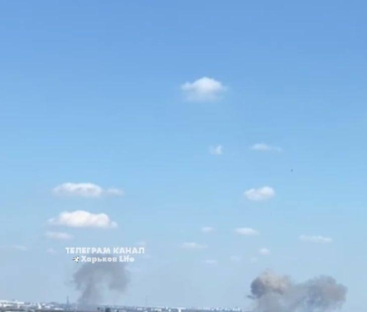
Без тексту
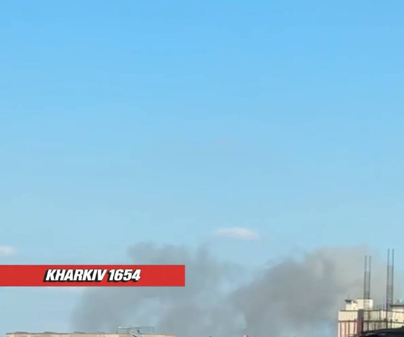
21+ замість 18+: в Україні хочуть підвищити вік повноліття та сексуальної згоди, — «СЮГ»
Відповідну петицію зареєстровано на сайті Уряду.
ㅤ
Надіслати новину @novosti_kieva_bot
👉ПІДПИСАТИСЯ
Харьков 🧐
🇺🇦 Киевские мониторинговые каналы сообщают о запуске нескольких десятков групп "Гераней" в сторону бывшей УССР
Называют это явным признаком готовящегося массированного удара. Второй день трясутся, бедные.
Украина.ру — подписаться и знать больше 🔄
Мы в MAX 🔄Аналитика 👍
🛵 Чернігівщина
- 1 від Березни на передмістя Чернігова
- 1 на Мену
- 1 на Вербичі/Хмільницю
Без тексту
Еще фото прилетов УМПК в Харькове 🧐
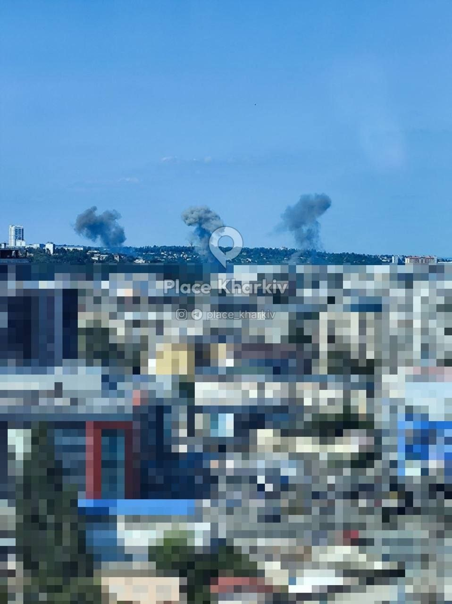
Вони там вкрай йобнулись.
#приймальняєрадару
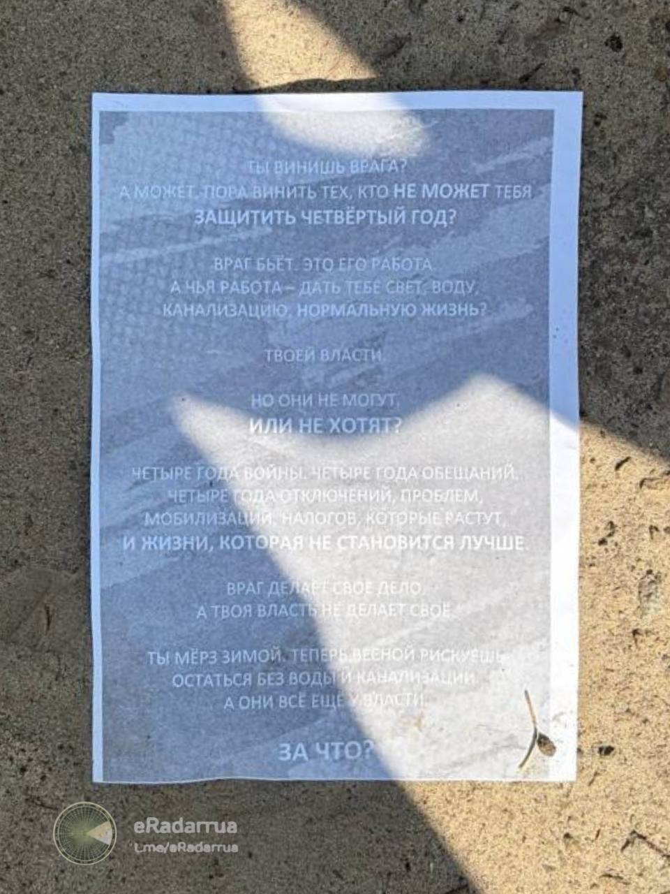
🖥️ «Немецкий народ не хочет войны против России»: сопредседатель «Альтернативы для Германии» Тино Хрупалла призвал Мерца открыть дипломатические каналы с Москвой.
По его словам, Европе нужен новый порядок безопасности, в котором Россия должна рассматриваться как партнёр.
«У нас нет лишних налоговых денег на прокси-войны, которые не отвечают нашим интересам. Немецкий народ не хочет войны, и уж тем более войны против России.
Поэтому мы призываем Фридриха Мерца проявить лидерство, которое наконец действительно заслуживает этого названия. Он должен уже завтра инициировать смену курса и подхватить импульс председателя Европейского совета Антониу Кошты — а именно наконец открыть дипломатические каналы.
Нам нужен новый европейский порядок стабильности с Россией как партнёром. Диалог, энергетическое партнёрство и хорошие отношения со всеми государствами необходимы Германии и Европе».
🇷🇺 Если у вас не воспроизводится ролик, продолжите просмотр в нашем канале Соловьёв в МАКС.
🛵Чернігів : БПЛА на Новоселівку
#приймальняєрадару
Харьков ФАБы
01.07.2026 | Шостка
«Гербера» успешно выполнила информационную миссию, сбросив на улицы города партию материала для размышлений.
Рекомендуем местным жителям впитать прочитанное быстрее, чем ПВО отчитается о героическом перехвате всех листовок.
Без тексту
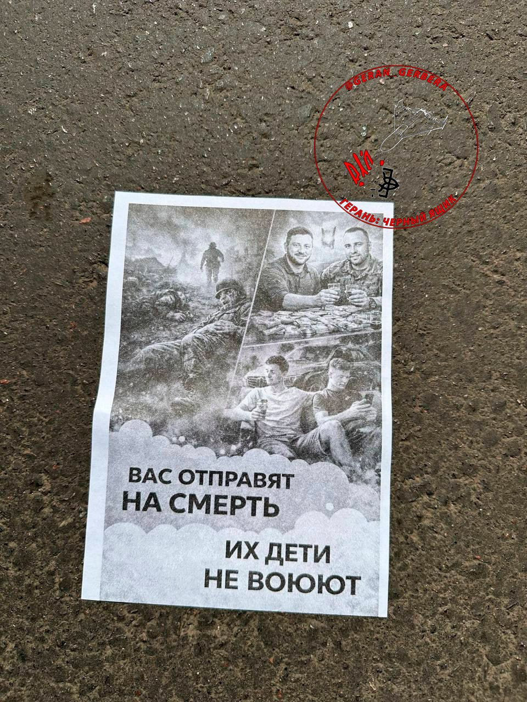
Без тексту
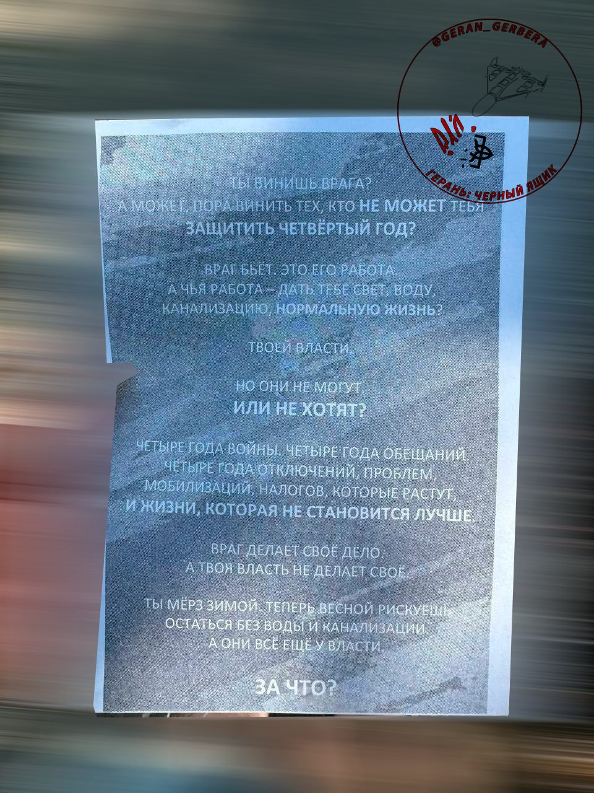
Отца пятерых детей 9 дней держали в подвале и избивали сотрудники Вознесенского РТЦК.
Военкомы удерживали его в подвале, требуя согласиться на добровольную мобилизацию и подписать отказ от претензий.
У мужчины сотрясение мозга, перелом руки и ребра, многочисленные ссадины и инфицированные раны.
Фото с места удара Искандер-М в Полтаве 😨
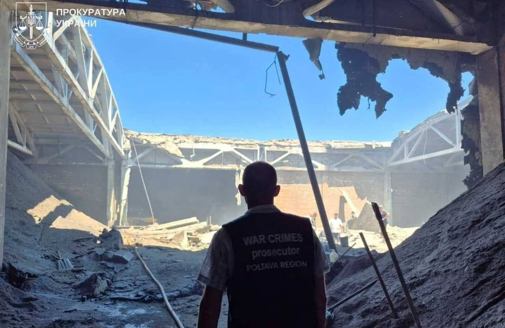
🛵 5 БпЛА на Конотоп
‼️ Интересным вопросом задался Михаил Онуфриенко:
Скажите, а почему "Сырок" при наркофюрере постоянно в бронежилете и каске? Он что-то знает? Он чего-то опасается?
А ведь и правда, почему?
Украина.ру — подписаться и знать больше 🔄
Мы в MAX 🔄Аналитика 👍
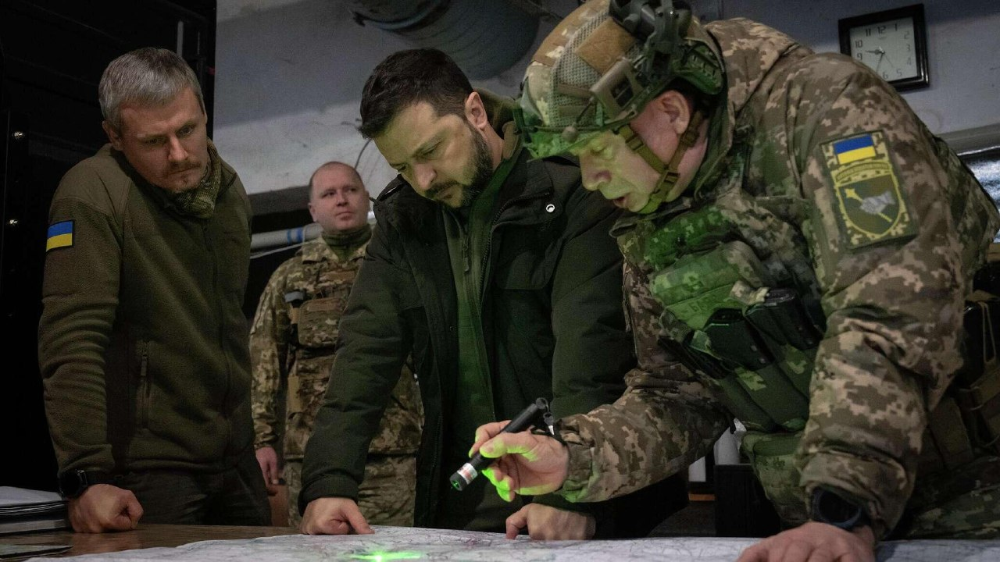
Без тексту
Без тексту
Без тексту
Без тексту
Без тексту
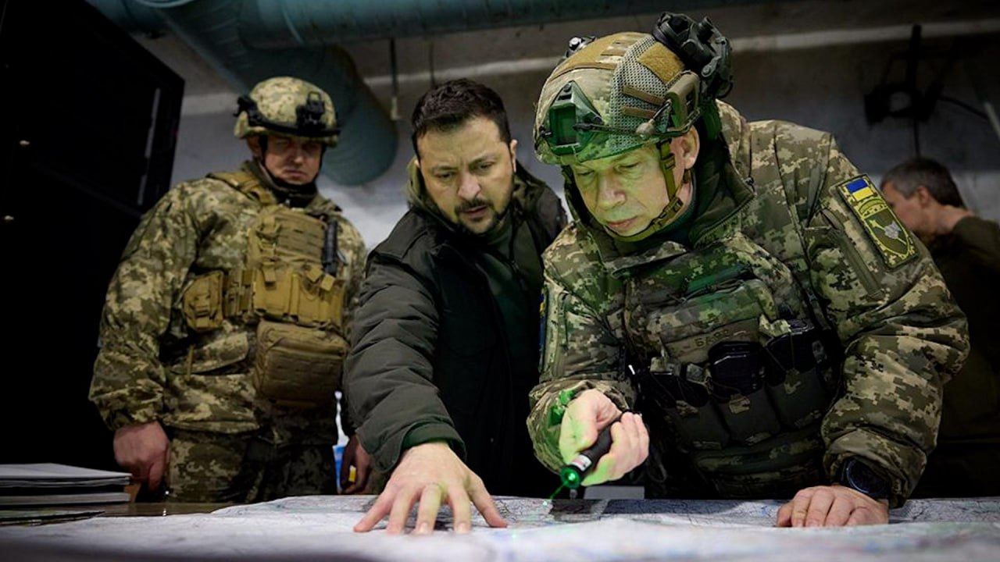
Без тексту
Без тексту
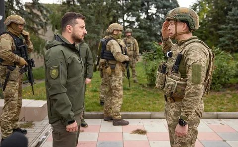
🖥️ «Можешь рассекретить, что хочешь», — такое поручение Трамп дал новому главе нацразведки США Биллу Пулте. Американский президент также заявил, что в стране планируют рассекретить «почти всё».
[В Национальной разведке поставлен Пулт в качестве нового директора. Мы также знаем, что у вас создана рабочая группа по рассекречиванию. Может быть, если говорить о международных вопросах, вы рассматриваете какое-то рассекречивание. Можете дать нам обновлённую информацию по рассекречиванию?]
— Почти всё. И, знаете, кстати, к нам приходит Джей Клейтон. Вы знаете, Билл Пулте — очень талантливый парень, но он там только временно, пока не придёт Джей Клейтон. А Джей Клейтон проходит процедуру. Джей Клейтон пользуется большим уважением, как и Билл Пулте.
Но Билл там только на довольно короткий период времени. И пока он там, я сказал: можешь рассекретить всё, что хочешь.
🇷🇺 Если у вас не воспроизводится ролик, продолжите просмотр в нашем канале Соловьёв в МАКС.
Без тексту
Стесняюсь спросить - а это именно та украинская культура, высот которой культуре России никогда не достичь?
🔴🔴🔴🔴🔴 Культурный фронт | 12 крестов против «Марика» | Право на наследие | Монолог | 1 июля 2026 года
Почему российские кинокритики отказались оценивать сериал Егора Бероева о военном враче из Мариуполя? Кто на пятый год войны участвует в формировании культурной повестки в стране? И почему право народа на собственное культурное наследие не должно зависеть от либеральных догм и наследников, живущих за рубежом?
🖥️ Монолог Владимира Соловьёва — эксклюзивно в MAX и VK Видео. Смотрите и подписывайтесь!
Появилась тепловая метка на карте пожаров FIRMS в месте удара Искандер-М в Одесской области: 46.45366 30.31172. Вот в этом районе🧐
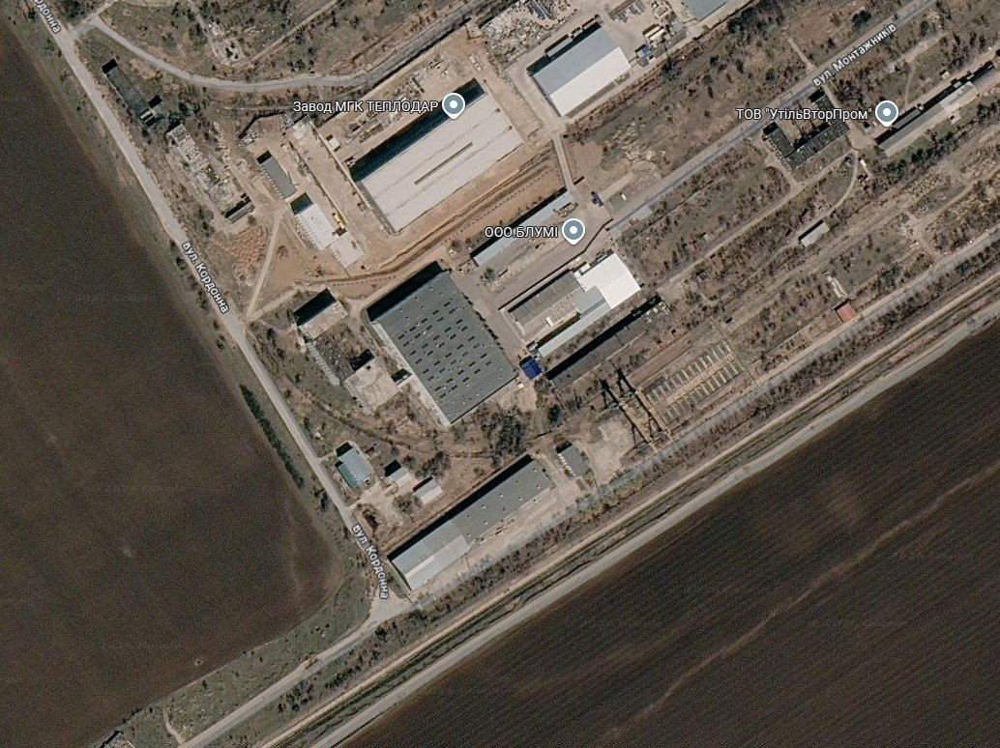
Без тексту
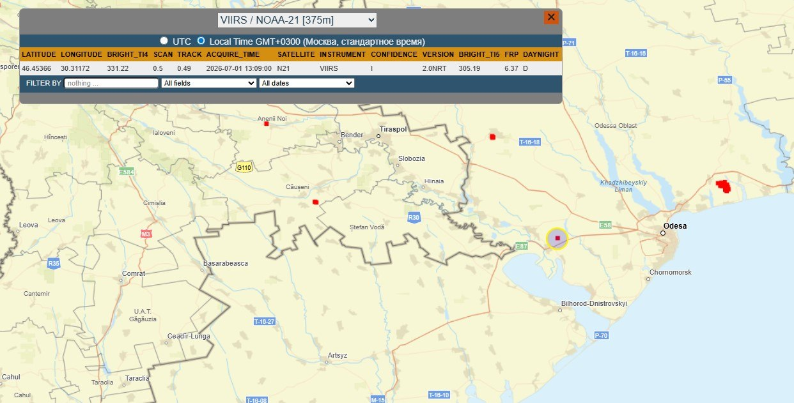
Без тексту
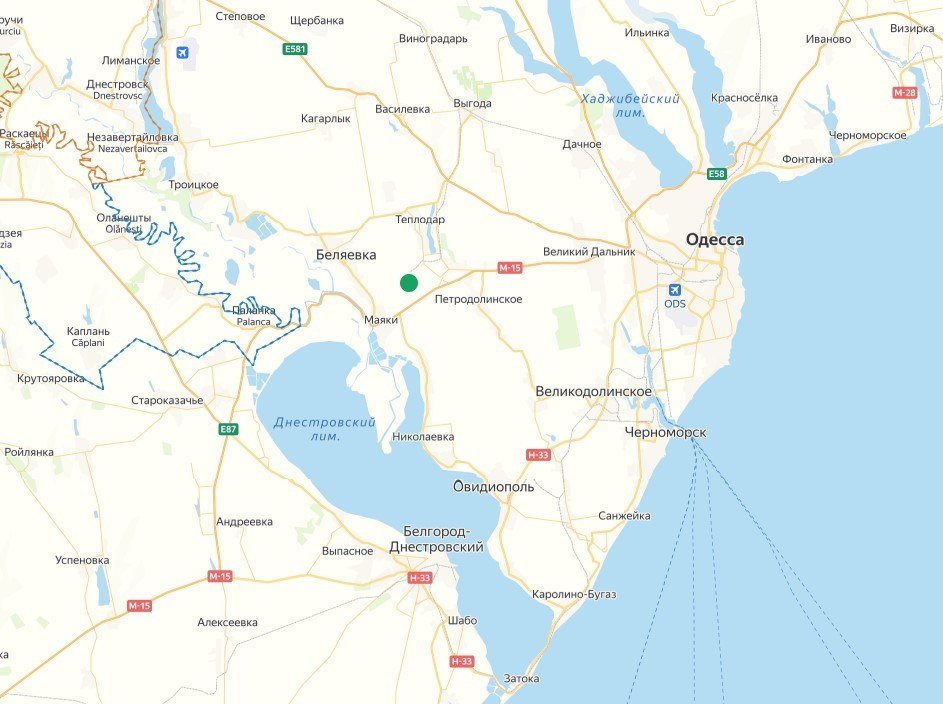
#Спутник
Анализ спутниковых снимков
Место эпичного взрыва под Славянском попало в обьектив спутника: 48.87991722356272, 37.6480966807147©RAVs👌
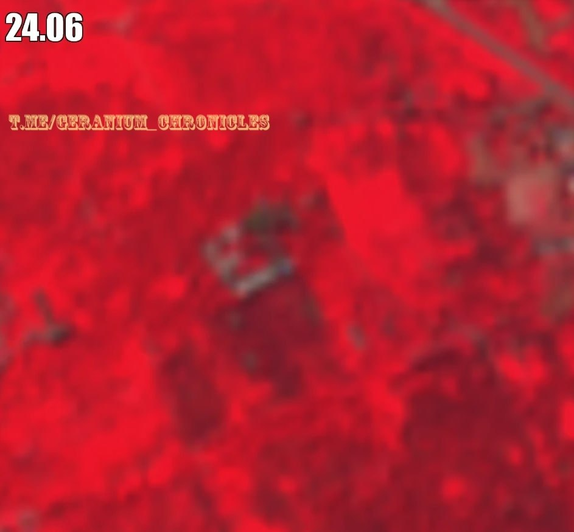
Без тексту
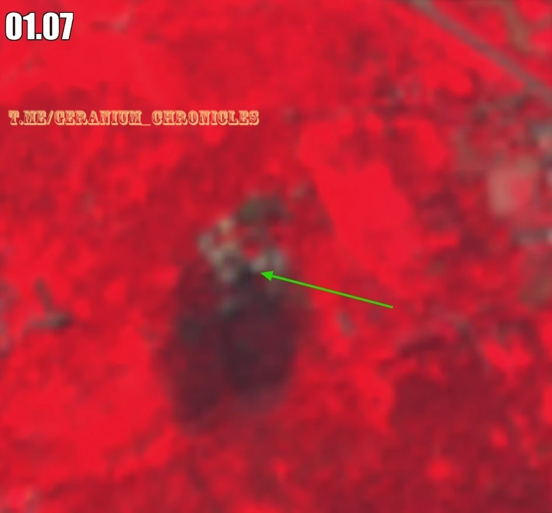
Без тексту
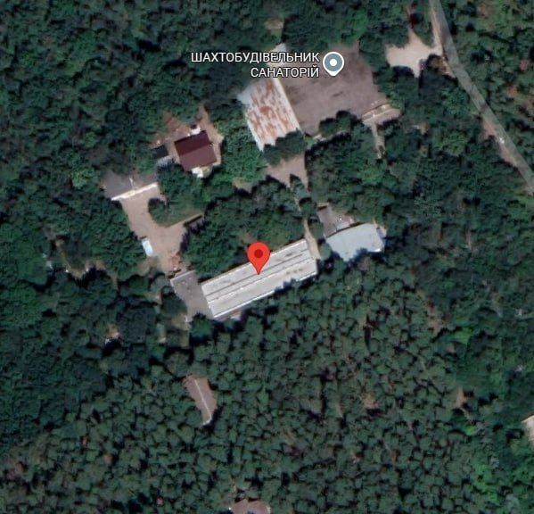
16:10 Славянск - взрывы💥 УМПК.
Звезда сериала «Бригада» Александр Высоковский найден мёртвым в реке Оке, пишут СМИ.
Сообщается, что актёр пропал, когда отправился на рыбалку с сыном в Подмосковье. Позже тело обнаружили водолазы. Ему было 62 года.
Высоковский известен по роли Макса — телохранителя Саши Белого. Он также снимался в фильме «Бумер».
🟩 Подписаться на RT: ТГ | Зеркало | MAX
Без тексту
‼️ Армянск и Феодосия в Крыму остаются без света из-за массированной украинской атаки на магистральные электросети, сообщил премьер-министр республики Юрий Гоцанюк
По его словам, частично восстановить электроснабжение планируется в течение суток, но сроки могут измениться.
Временные отключения — 3 часа через 3 часа — вводятся в Симферополе, Евпатории, Ялте, Судаке, Алуште, посёлке Первомайское и десяти районах Крыма.
Украина.ру — подписаться и знать больше 🔄
Мы в MAX 🔄Аналитика 👍
Полностью потушен пожар, возникший на НПЗ в Славянске-на-Кубани из-за падения обломков украинского беспилотника, сообщает ЕДДС.
Текущий состав британского парламента «самый гейский», заявил уходящий премьер Стармер.
Об этом он заявил на мероприятии по поводу месяца ЛГБТ (Happy Pride month), где его представили как «лесбийскую икону стиля». Он сказал, что ему нравится такое звание.
«Я горжусь тем, что у нас самый гейский парламент. Я не думаю, что есть какой-то парламент в мире, более гейский, чем этот. Это фантастично», - сказал премьер.
*ЛГБТ зазпрещенная в России террлистическая экстремистская идеология
Без тексту
Звезда сериала «Бригада» Александр Высоковский найден мёртвым в реке Оке, пишут СМИ.
Сообщается, что актёр пропал, когда отправился на рыбалку с сыном в Подмосковье. Позже тело обнаружили водолазы. Ему было 62 года.
Высоковский известен по роли Макса — телохранителя Саши Белого. Он также снимался в фильме «Бумер».
Без тексту
🤔До 21 року пропонують підвищити вік повноліття та сексуальної згоди в Україні, – судово-юридична газета.
Це після історії з хіміком?
ㅤ
Труха⚡️Київ | Надіслати новину
‼️🇩🇪🇷🇺«Немецкий народ не хочет войны против России»: Лидер АдГ призвал правительство Германии восстановить диалог с Россией
▪️Сопредседатель партии «Альтернатива для Германии» Тино Хрупалла призвал канцлера Мерца активизировать дипломатические контакты с Москвой.
▪️По словам Хрупаллы, Германия не должна расходовать бюджетные средства на конфликты, которые, по его мнению, не соответствуют национальным интересам страны. Он также заявил, что большинство граждан Германии не заинтересованы в дальнейшей конфронтации с Россией.
▪️Политик выступил за формирование новой европейской архитектуры безопасности, в рамках которой Россия, по его мнению, должна рассматриваться как партнер.
▪️Хрупалла также поддержал идею открытия дипломатических каналов между Европейским союзом и Россией, заявив о необходимости развития диалога, энергетического сотрудничества и стабильных отношений между европейскими государствами.
⚠️Подписаться на RV: MAX | t.me/RVvoenkor
ЦБ РФ не фанат высоких ставок — Набиуллина.
🚨 В Крыму сохраняются временные ограничения на подачу электроэнергии, сообщил премьер-министр республики Юрий Гоцанюк
По временным отключениям 3 часа через 3 часа ограничения введены в следующих муниципалитетах: Симферополь, Евпатория, Сакский район, г. о. Алушта, г. о. Ялта, г. о. Судак, Красноперекопский, Бахчисарайский, Черноморский, Симферопольский, Красногвардейский, Раздольненский, Первомайский, Белогорский, Советский районы и пгт Первомайское.
В результате массированной вражеской атаки на магистральные электросети без электроснабжения остаются Армянск и Феодосия с городским округом. Частичная перезапитка потребителей в муниципалитетах ориентировочно будет осуществлена в течение суток. При этом сроки могут быть скорректированы по независящим причинам.
16:20 Лозовая Харьковской области - взрыв💥 Скоростная цель.
Сумська область
◦ Зала 1 од.
Чернігівська область
◦ Ударний Бп 4 грп.
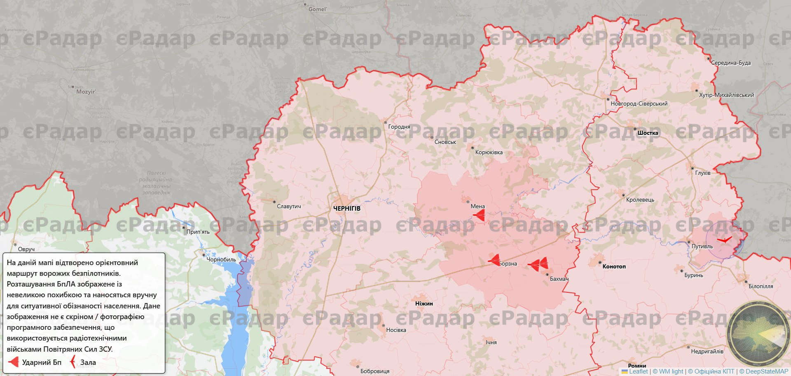
☝️К сведению кастрюлеголовых, которые считают, что история с Бандерой-нацистским преступником – это совестская пропаганда
В резолюции Европарламента от 25 февраля 2010 года, Бандера назван нацистским коллаборационистом. Тогда же европейцы призвали Януковича отменить решение Ющенко присвоить упырю Бандере героя.
Без тексту
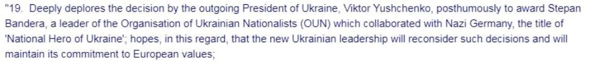
В реке Оке в Подмосковье нашли тело актёра Александра Высоковского, известного по роли Макса в сериале «Бригада», сообщает ТАСС со ссылкой на оперативные службы
Высоковский пропал 30 июня во время рыбалки с сыном. После безуспешных поисков ребёнка домой о случившемся сообщили родственникам, после чего к поисковой операции подключились сотрудники экстренных служб и водолазы.
🇷🇺 Подпишись на Соловьёва!
⚡️ Украинские БПЛА впервые ударили по Меловскому муниципальному округу ЛНР
К счастью, обошлось без жертв, сообщил глава республики Леонид Пасечник:
🟥 Лёгкие ранения получили 2 человека, им оказана медицинская помощь. Повреждено порядка 10 домов в Меловом и несколько домов в соседнем селе – Великоцке.
🟥 В Северодонецке утром враг атаковал гражданский легковой автомобиль. Ранения получили водитель и пассажир, им оказывается необходимая медицинская помощь.
🟥 Накануне вечером и ночью ВФУ ударили по грузовому и двум легковым гражданским автомобилям в городском округе город Первомайск. Ранены 2 человека – водители, им оперативно оказана медицинская помощь.
🟥 Всего системами ПВО и мобильными огневыми группами сбито более 15 вражеских БПЛА.
Украина.ру — подписаться и знать больше 🔄
Мы в MAX 🔄Аналитика 👍
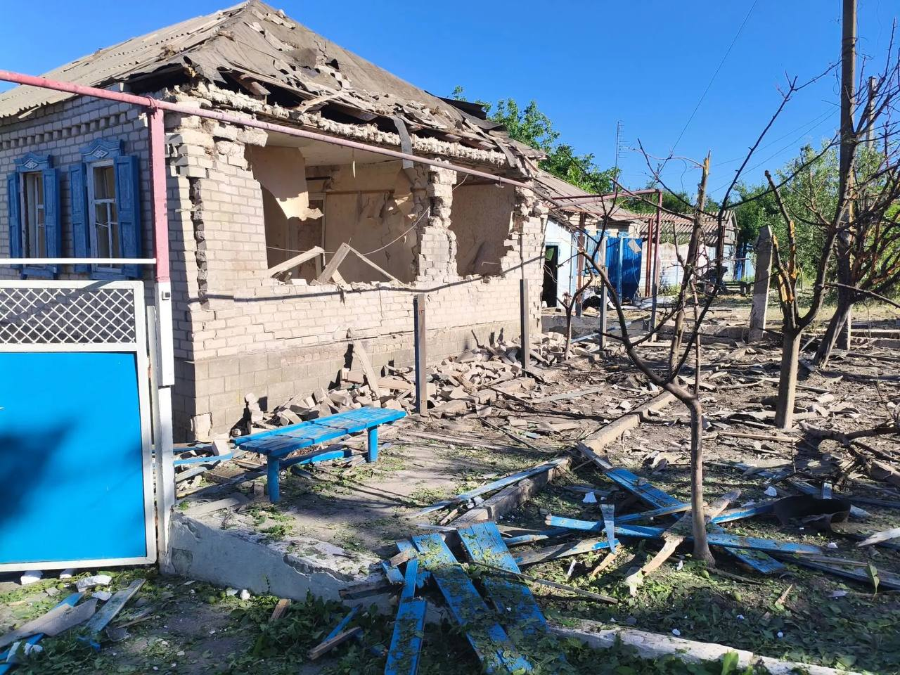
Без тексту
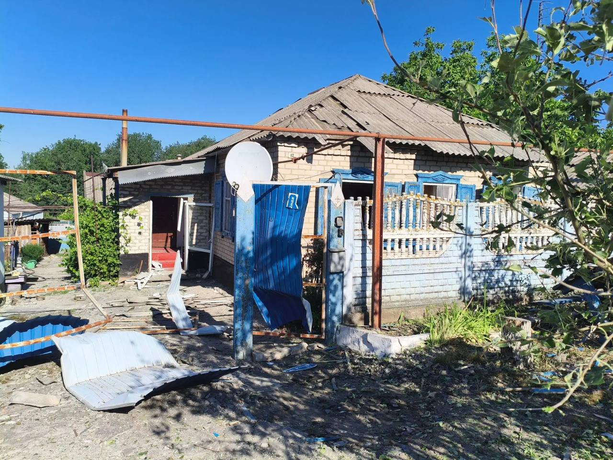
Без тексту
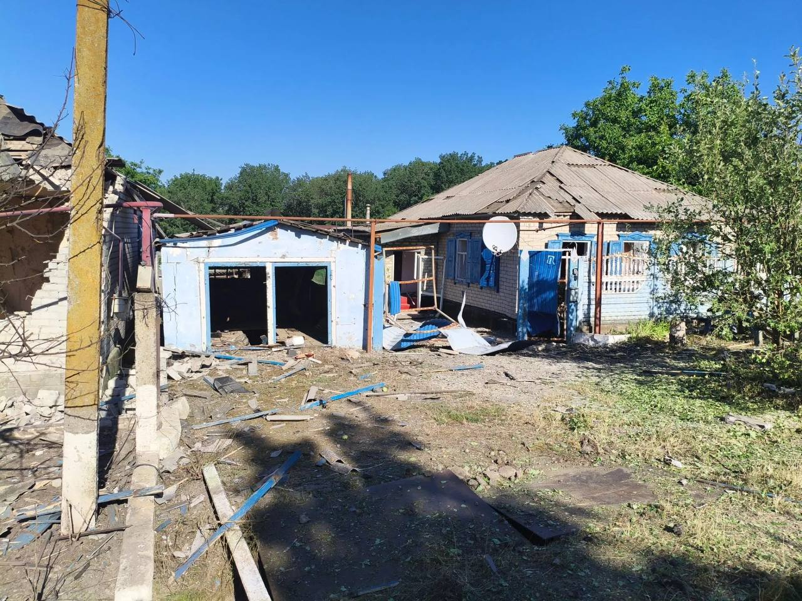
Без тексту
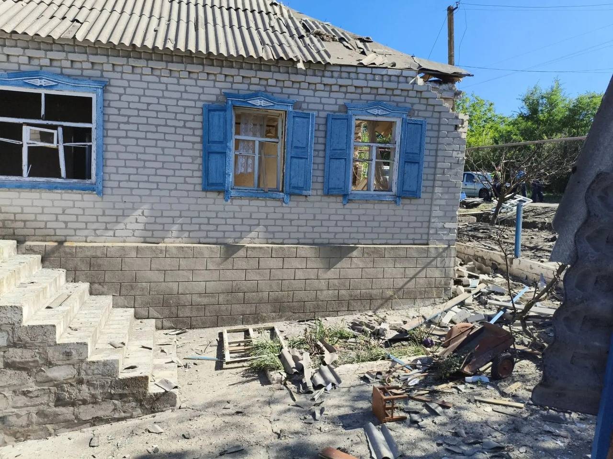
⚡️ В Харькове власти сообщают о прилетах в Основянском, Новобаварском и Слободском районах города
🔴🔴🔴🔴🔴 ВС РФ нанесли поражающий удар по целям, которые использовались ВСУ в Харькове.
От удара в воздух поднялись три столба дыма, следует из опубликованных фото в сети.
🇷🇺 Если у вас не воспроизводится ролик, продолжите просмотр в нашем канале Соловьёв в МАКС.
Без тексту
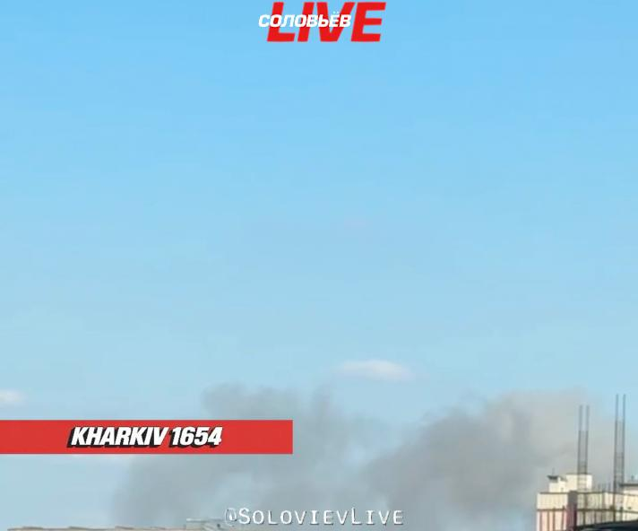
Без тексту
Без тексту
⚡️Армянск и Феодосия в Крыму остаются без света из-за массированной украинской атаки на магистральные электросети, сообщил премьер-министр республики Юрий Гоцанюк.
По его словам, частично восстановить электроснабжение планируется в течение суток, но сроки могут измениться.
Временные отключения — 3 часа через 3 часа — вводятся в Симферополе, Евпатории, Ялте, Судаке, Алуште, поселке Первомайское и десяти районах Крыма.
❗️В Україні вік повноліття та сексуальної згоди пропонують підвищити до 21 року, — ЗМІ.
🧐 Львівич | Підписатися
Вооруженные силы Российской Федерации в июне 2026 года освободили 260 км² территории в зоне СВО./с лоста
🛵 Кіровоградщина
- 1 на Знам'янку
Министр обороны Румынии пообещал сбивать беспилотники, сбившиеся с курса.
❗️Из Крыма депортированы на родину четверо трудовых мигрантов, оскорблявших российскую армию в разговорах с другими рабочими.
Иностранцы работали на стройке в "Артеке".
Въезд в РФ им теперь запрещён на 10 лет. Перед депортацией их оштрафовали на 35 тысяч рублей, сообщает @rian_crimea
16:35 Донбасс - взрывы💥 УМПК.
🛵 Чернігівщина
- 4 на Ніжин
- 1 Мена
- 1 Короп
🛵 БпЛА на Кривий Ріг
Сумська область
◦ Ударний Бп 3 грп.
Чернігівська область
◦ Ударний Бп 5 грп.
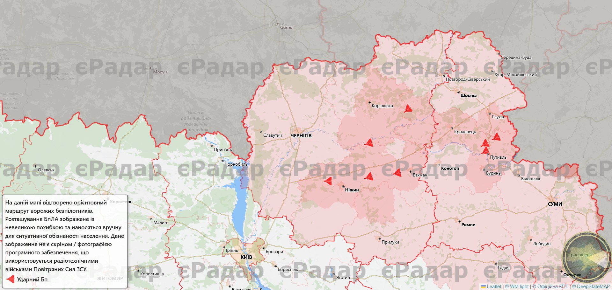
Дніпропетровська область
◦ Ударний Бп 2 грп.
Кіровоградська область
◦ Розвідник 1 од.
Миколаївська область
◦ Ударний Бп 1 грп.
◦ Реактивний → Балаклія
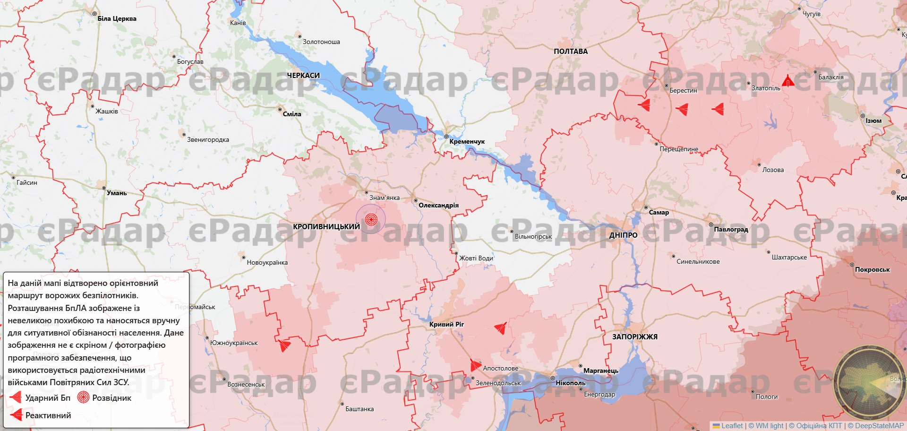
🖥️ Российский рынок полностью обеспечен бензином и дизельным топливом, заявил вице-премьер Александр Новак на Финансовом конгрессе ЦБ.
Сейчас наблюдаются перебои на отдельных заправках, связанные с изменением логистики поставок, сообщил он. Цены растут в основном на независимых АЗС, и это «обычная рыночная ситуация», которая выровняется по мере насыщения рынка.
Кроме того, ажиотаж на топливном рынке привел к искусственному росту спроса примерно на 20–30%, отметил Александр Новак.
🇷🇺 Если у вас не воспроизводится ролик, продолжите просмотр в нашем канале Соловьёв в МАКС.
❗️ В российско-украинском конфликте что-то изменится только когда погибнут все русские, — на канале «Киев 24» заявил военный капеллан, старший лейтенант ВСУ Олекса Сокол, передаёт корреспондент «ПолитНавигатора».
«Я не радуюсь их смертям, я не радуюсь их количеству. Я не радовался, когда их было сто тысяч, не радовался, когда их было 200, 300, 500 – я не радовался.
Когда меня спрашивают: «Олекса, почему ты этому не радуешься, почему у тебя нет такой радости?» Я говорю: «Вы знаете, в моём случае меня устроит только одно число – это все».
Даем эту цитату просто для понимания — с кем мы воюем.
🤢Вкрилося біло-блакитним нальотом Київське море.
Ймовірна причина явища – аномальна спека. Купатися там не бажано.
ㅤ
Труха⚡️Київ | Надіслати новину
🛵 Розвідувальний над Кропивницьким
🛵 Розвідувальний на Чернігівщині в районі Сосниці
⚡️6-річну дівчинку, яку у Львові уразила блискавка, на третій день виписали з лікарні.
Впродовж наступного місяця їй регулярно проводитимуть ЕКГ та ехокардіографію, щоб попередити віддалені наслідки ураження блискавкою.
🧐 Львівич | Підписатися
🚨 Украинские БПЛА ударили по Меловскому муниципальному округу ЛНР, пострадало два человека, им оказана медицинская помощь, сообщает глава региона Леонид Пасечник.
Циничный удар ранним утром был нанесен по жилым домам и спящим людям. К счастью, обошлось без жертв. Легкие ранения получили 2 человека, им оказана медицинская помощь. Повреждено порядка 10 домов в Меловом и несколько домов в соседнем селе – Великоцке.
Необходимые оперативные службы задействованы в ликвидации последствий. Муниципальные власти оказывают содействие.
Всего системами ПВО и мобильными огневыми группами сбито более 15 вражеских БПЛА.
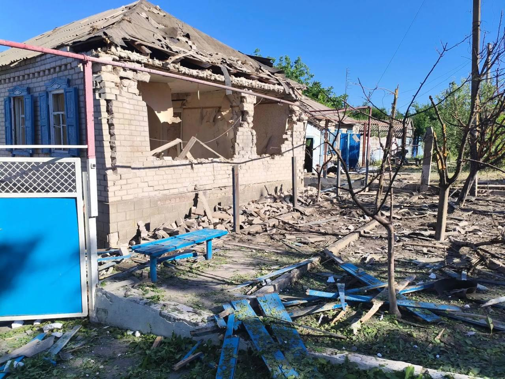
Без тексту
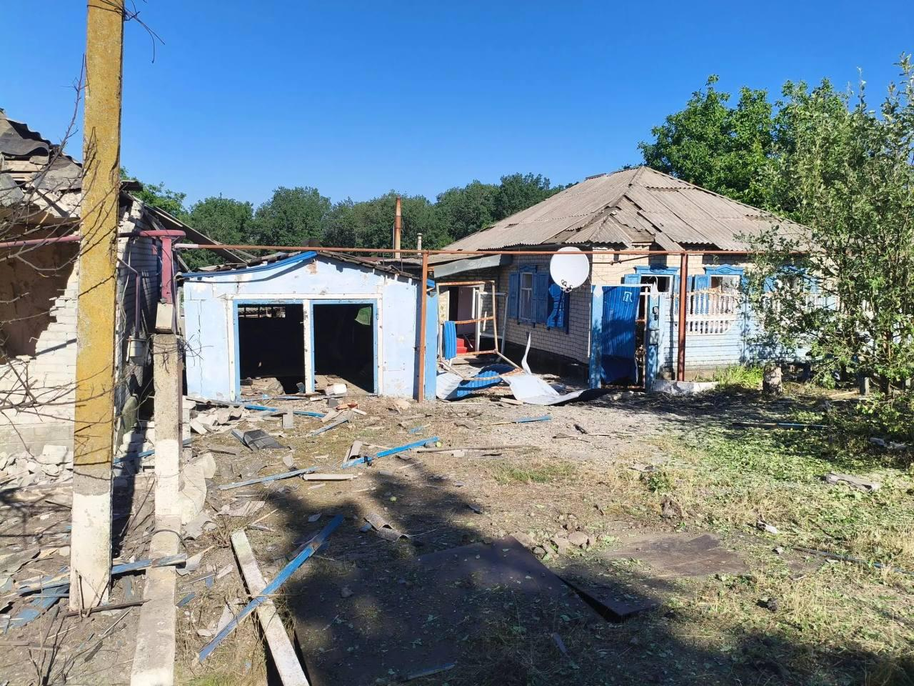
Без тексту
‼️ В Крыму решат проблему острого дефицита топлива через две недели, — заявил депутат Госдумы от Республики Крым Леонид Бабашов.
Тем не менее, по его словам, проблемы с электроэнергией в регионе пока что останутся.
🛵 Ще 5 БпЛА на/повз Конотоп
🤬Двоє загиблих у Харкові, один з них – 15-річний хлопець. 26 поранених, – мер Терехов.
Також русня вбила балістикою 2-х людей на Одещині, ще 11 госпіталізовано, повідомили в ОВА. Ще одну жінку рф вбила у Херсоні.
Кончені російські мразі.
ТРУХА⚡️Україна | Надіслати новину
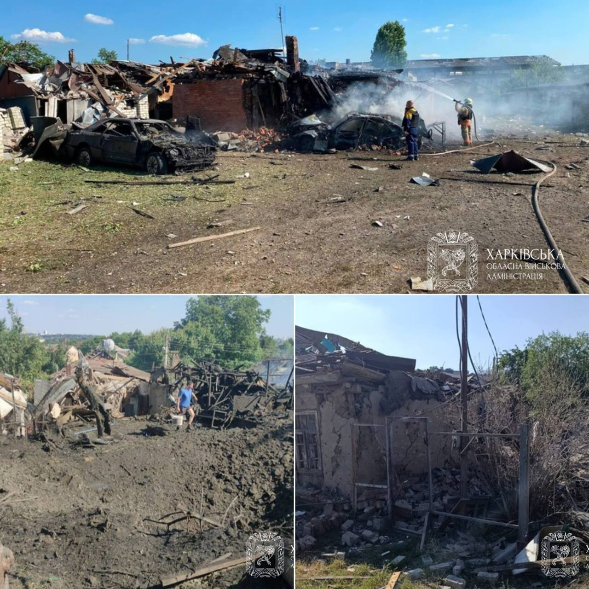
🛵 БпЛА на Дніпро
🛵 БпЛА Чернігів
Оновлений графік світла на сьогодні.
🧐 Львівич | Підписатися
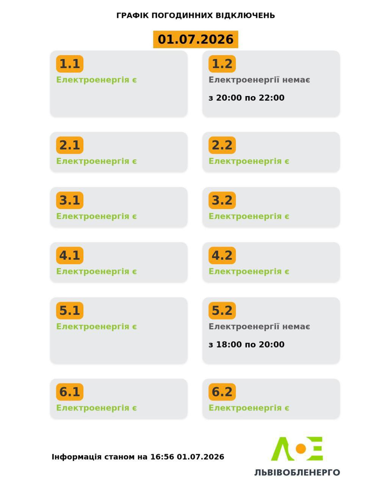
⚡️Удары наносятся по целям в Николаеве
🛵 2 БпЛА на Полтаву
16:55 Николаев - взрыв💥
❗️Славянск сейчас прилетел ФАБ!
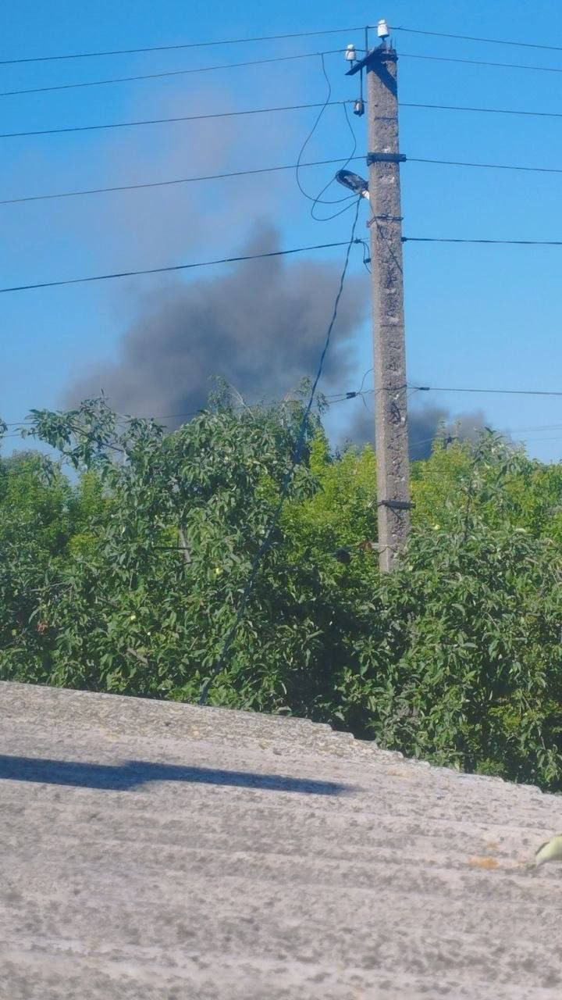
🛵 4 на Полтаву
🇿🇦 Южно-Африканскую Республику в очередной раз охватили масштабные скоординированные антииммигрантские протесты
Протесты были приурочены к неофициальному дедлайну — 30 июня — который радикальные гражданские группы ранее установили для «самодепортации» всех незадокументированных иностранцев. Тысячи человек с национальными флагами и самодельным деревянным оружием вышли на улицы крупнейших городов страны с требованием к нелегальным мигрантам немедленно покинуть ЮАР.
По заявлениям активистов, нелегальные мигранты из соседних африканских стран (в основном Зимбабве, Малави, Мозамбика) виновны в росте преступности, высокой безработице среди местного населения и колоссальной нагрузке на социальные службы ЮАР.
‼️🤡🇬🇧Очень горжусь, что у нас самый гейский парламент, — Британский премьер Стармер подвел итоги своего правления Британией
▪️Об этом он заявил на мероприятии по поводу месяца ЛГБТ*, где его представили как «лесбийскую икону стиля». Он сказал, что ему нравится такое звание.
➖«Я горжусь тем, что у нас самый гейский парламент. Я не думаю, что есть какой-то парламент в мире, более гейский, чем этот. Это фантастично», - сказал премьер.
*лгбт признано экстремистским и запрещено в РФ
⚠️Подписаться на RV: MAX | t.me/RVvoenkor
Без тексту
⚡️Два человека ранены в результате атаки на предприятия Пензы, — губернатор Мельниченко.
"Женщине медицинская помощь оказана амбулаторно. Её уже отпустили домой. Мужчина получил серьёзное осколочное ранение, был экстренно прооперирован. Сейчас он находится в реанимации в тяжёлом состоянии. Семьям пострадавших будет оказана вся необходимая поддержка и материальная помощь", — сообщил губернатор.
🛵БпЛА над Черніговом
Запущенная «Большая Американская Ярмарка Президента Трампа в Вашингтоне» пока не может похвастаться аншлагом
В соцсетях отмечают, что на сцене больше музыкантов, чем зрителей 🤣😂
Порошенко намерен использовать Залужного как президента-марионетку, сообщил RT экс-депутат Рады Олег Царёв со ссылкой на свои источники.
По его словам, в обмен экс-глава государства требует пост премьера с реальным контролем над страной. По данным Царёва, Залужный пока предложение не принял.
В канале «Специально для RT» — подробнее.
🟩 Подписаться на RT: ТГ | Зеркало | MAX
5 БпЛА крутиться над акваторією Чорного моря неподалік коси
🖥️ Из Крыма депортировали четырех иностранных рабочих, оскорбивших российских военнослужащих во время работ на стройплощадке детского центра «Артек», сообщили в МВД.
Нарушителей оштрафовали на 35 тысяч рублей, на ближайшие 10 лет въезд в Россию им запрещён.
🇷🇺 Если у вас не воспроизводится ролик, продолжите просмотр в нашем канале Соловьёв в МАКС.
🤬рф вдарила по виробництву туалетного паперу «Сніжна Панда» на Одещині.
Кадри від місцевих каналів.
ТРУХА⚡️Україна | Надіслати новину
⚡️Еще кадры последствий удара по целям в Харькове
Сообщается как минимум о 5 прилётах.
Украина.ру — подписаться и знать больше 🔄
Мы в MAX 🔄Аналитика 👍
Без тексту
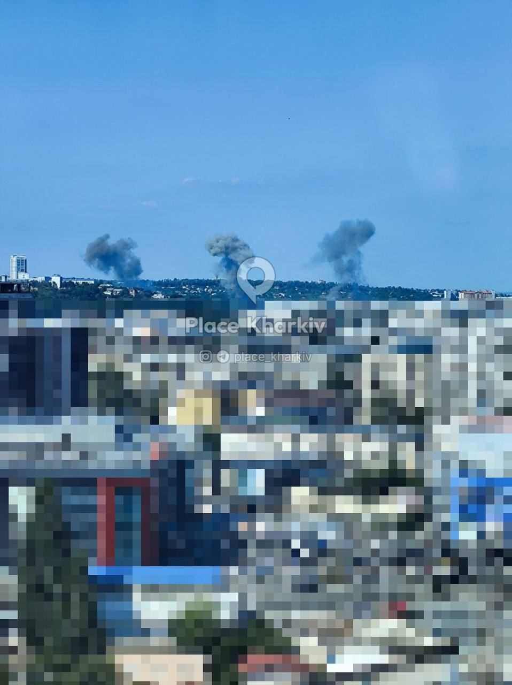
📰 ДО 250 ФС КОЖНОМУ НОВАЧКУ
Це пряме включення з нового онлайн-казино – CATBET!
Для нових гравців доступні:
💸 5 кетбоксів з призами до 100 000 ₴
💰Відкіт 50% на першу годину
⚡️ швидка реєстрація та простий старт
CATBET вже приймає перших гравців, тицяй лапкою та забирай свій бонус 👇
https://web.ga4catbet.com/UPxbZW
#реклама
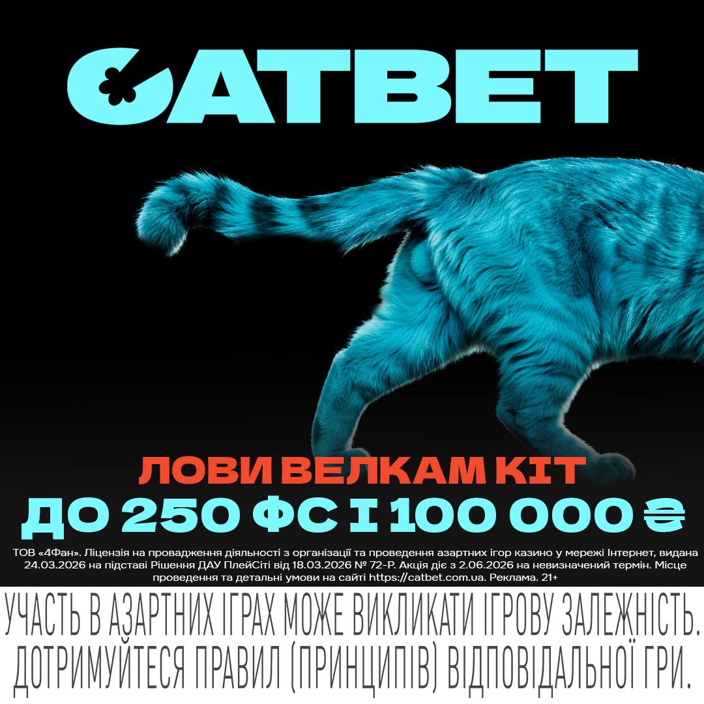
Московские ИИ-технологии в строительстве внедряются в регионах России
Масштабное строительство, развернувшееся в столице, было бы невозможно без применения новейших технологий на базе искусственного интеллекта. Умные алгоритмы помогают быстрее проектировать и возводить новые объекты, повышая качество и оптимизируя затраты на строительство.
Являясь крупнейшим российским центром ИИ-разработок, Москва успешно масштабирует свой опыт. В рамках соглашения с Правительством России, заключенного в 2025 году, Правительство Москвы помогает гармонизировать нормативную базу и внедрять единые цифровые стандарты строительства по всей стране, – написал в Макс Сергей Собянин.
За год Центр заключил 29 соглашений с 21 регионом о внедрении ИИ-сервисов. Столичный подход позволит властям качественнее планировать развитие территорий — например, оценивать потребность не только в инфраструктуре, но и в школах, поликлиниках, магазинах и рабочих местах.
На Славянском направлении российские войска наступают в районе Рай-Александровки, продвигаясь к поселку Николаевка – важному узлу обороны ВСУ на данном участке фронта. Идут бои в лесополосах в треугольнике Юрковка – Ореховатка – Рай-Александровка.
Фиксируется продвижение ВС РФ в Малиновке.
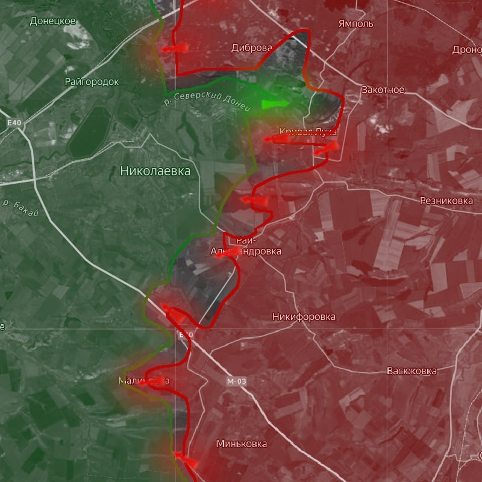
‼️ Киев не стремится к миру, Россия это понимает и не питает иллюзий, — заявила Мария Захарова.
"Этого стремления как не было, так и нет. В первую очередь потому, что киевский режим несамостоятелен", — заявила официальный представитель МИД РФ на брифинге для СМИ.
📸 Президент Польши Навроцкий раскритиковал принятие на Украине законопроекта о создании «национального пантеона», сообщает его канцелярия
«Зеленский объявил о внесении законопроекта о Национальном пантеоне — это очередной этап действий украинских властей, имеющий эскалационный характер после принятого в конце мая решения о присвоении одной из воинских частей имени «героев УПА*». Эти действия показывают, что президент Навроцкий был прав, поставив вопрос именно так — то есть заявив, что он не примет Орден Белого Орла, а в итоге эту высшую польскую государственную награду у него забирают. Как видно по волне критики, с которой столкнулся президент со стороны представителей правящей коалиции, теперь они сами признают, что президент был прав, — жесткая защита польских интересов со стороны Кароля Навроцкого является правильной».
*признана террористической организацией и запрещена в РФ
🇷🇺 Подпишись на Соловьёва!
По информации Британской разведки российская армия собирается начать одновременно штурм Краматорска и Славянска, чтобы закрепиться в городах до осени. По информации ГУР противник собрал почти 200 тысяч военных для наступательной операции и планирует приступить к активной фазе в середине июля.
🛵 Ще 3 БпЛА на Полтаву
А это завод туалетной бумаги в Одесской области. Видно и дроны собирали
Маяки. Баллистика
Одесская область • Маяки
Масштабный прилет с моря. Горит и детонирует. Взрыв был такой силы, что в 60 км в Приднестровье слышали.
Отработали наши Сушки. В район мчат пожарные и скорые.
Пишут что мост через маяки закрыт , походу по мосту дали
❗️В Херсонской области продолжаются работы по восстановлению подачи электроэнергии, но часть округов всё еще временно остаются без света, — губернатор Владимир Сальдо.
"Из-за повреждений энергетической инфраструктуры временно без света остаётся часть населённых пунктов Великолепетихского, Верхнерогачикского, Горностаевского, Ивановского, Каховского, Нижнесерогозского, Новотроицкого, Новокаховского городского и Чаплинского округов", — сообщил губернатор.
Украина.ру — подписаться и знать больше 🔄
Мы в MAX 🔄Аналитика 👍
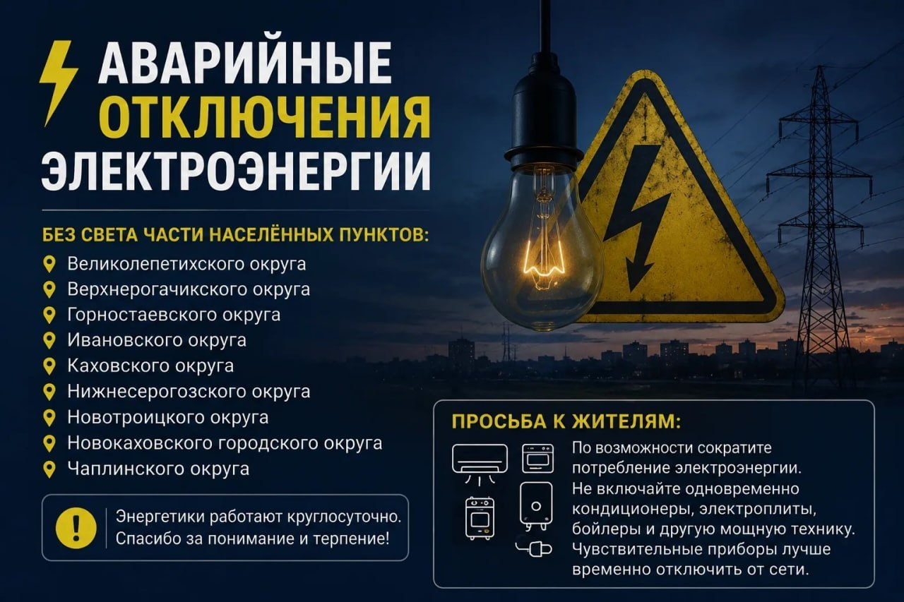
😍Бірюзова вода та краєвиди, ніби з картинки: всього за 3 години від Києва.
Якщо шукаєте ідею для поїздки на вихідні – ось вона. Дружбівський кар’єр розташований на Житомирщині.
📱: oh.dariia.
ㅤ
Труха⚡️Київ | Надіслати новину
#БезСрокаДавности
💬 Вчера, 30 июня, исполнилось сорок дней со дня чудовищной атаки ВСУ на педагогический колледж в Старобельске. Погибли дети, молодые люди.
Двадцать один человек... «На полях» ПМЭФ мы показывали их фотографии. Их фотографии показывают наши загранучреждения по всему миру. Они вынуждены это делать, потому что СМИ «коллективного» Запада как-будто не увидели этой трагедии, ведь она была преднамеренной.
Это не просто фотографии. Это лица, это голоса, это смех, который никогда больше не прозвучит. Это мальчишки и девчонки, которые ждали завтрашнего дня. Они учились, готовились к выбранной специальности, строили планы, верили в любовь и хотели стать учителями, чтобы передавать будущим поколениям всё, что им так дорого, близко и созвучно.
◾️Они верили в будущее, которое у них отняли террористы киевского режима.
Они были совсем юными. У них всё было впереди. У них были тетради с недописанными конспектами, мечты, о которых они шептались на переменах, и целая жизнь, которую у них подло украли, так же как и у очень многих других детей...
Украли те, кто не видит разницы между ребёнком и солдатом, кто не понимает, что такое гражданское население, то, наоборот, понимая, что такое гражданское население, именно его выбирает своей жертвой.
Это не просто удар по городу. Это удар по самой сути человечности. Это вызов всему, что мы называем совестью. И сегодня, когда мы склоняем головы, мы понимаем: эту боль не залечить, эту несправедливость никаким образом не оправдать.
Их короткие жизни – как яркие вспышки, которые погасли слишком рано. Но мы сделаем всё, чтобы это свет не угас.
🕯 Память о каждом из двадцати одном студенте педагогического колледжа в Старобельске навсегда останется с нами.
#МыПомним
🛵 Пара БпЛА на Миргород
Сумська область
◦ Ударний Бп 3 грп.
Чернігівська область
◦ Ударний Бп 2 грп.
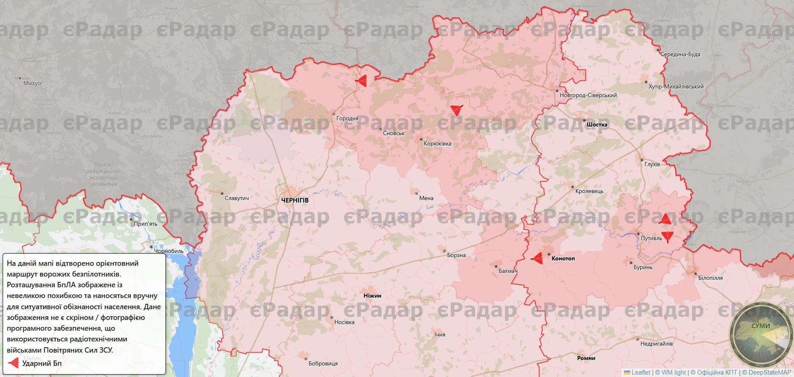
Дніпропетровська область
◦ Ударний Бп 2 грп.
Полтавська область
◦ Ударний Бп 3 грп.
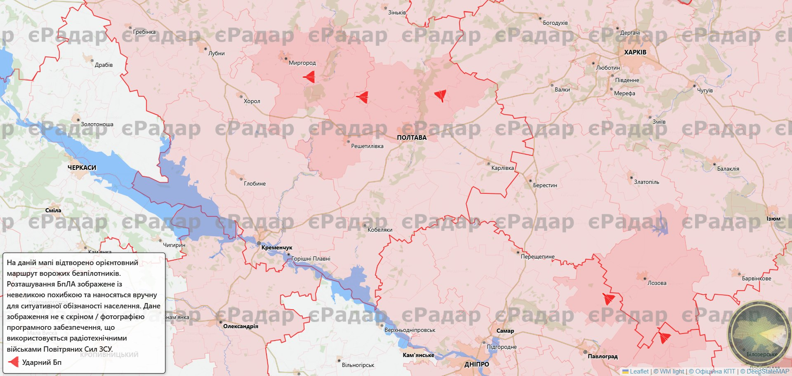
‼️🇷🇺⛽️ В Краснодарском крае временно приостановлена работа более трети автозаправочных станций, — замгубернатора
▪️В Краснодарском крае временно не работают 369 из 1029 автозаправочных станций.
▪️По словам вице-губернатора Пергуна, объемы поставок топлива в регион остаются на прежнем уровне, тогда как спрос существенно вырос в связи с курортным сезоном и проведением уборочной кампании.
▪️Региональные власти рассматривают дополнительные меры по стабилизации топливного рынка. В частности, обсуждается возможность полного запрета на отпуск бензина в канистры и другие емкости.
▪️Ранее в регионе уже вводились временные ограничения на продажу топлива в тару вне топливных баков автомобилей.
⚠️Подписаться на RV: MAX | t.me/RVvoenkor
‼️ В Днепропетровской области ударами российских управляемых авиабомб уничтожен Просянский элеватор, — местные СМИ.
Сам противник отмечает, что это один из крупнейших элеваторов на Украине и важный логистический хаб.
Украина.ру — подписаться и знать больше 🔄
Мы в MAX 🔄Аналитика 👍
Reuters: США развернули более 900 военнослужащих в Венесуэле для помощи после землетрясений.
Генерал Фрэнсис Донован, командующий Южным командованием США, заявил, что американские военные участвуют в поисково-спасательных операциях, восстановили работу аэропорта и задействовали воздушные и морские силы для доставки гуманитарной помощи. Также над Венесуэлой развернуты как минимум четыре-пять беспилотников MQ-9 Reaper для мониторинга ситуации.
Однако, как подчеркнул генерал, американские войска не готовятся к длительному присутствию.
«Никаких разговоров о том, чтобы остаться, нет. Мы уходим, когда заканчиваем работу», — заявил он.
🇷🇺 Подпишись на Соловьёва!
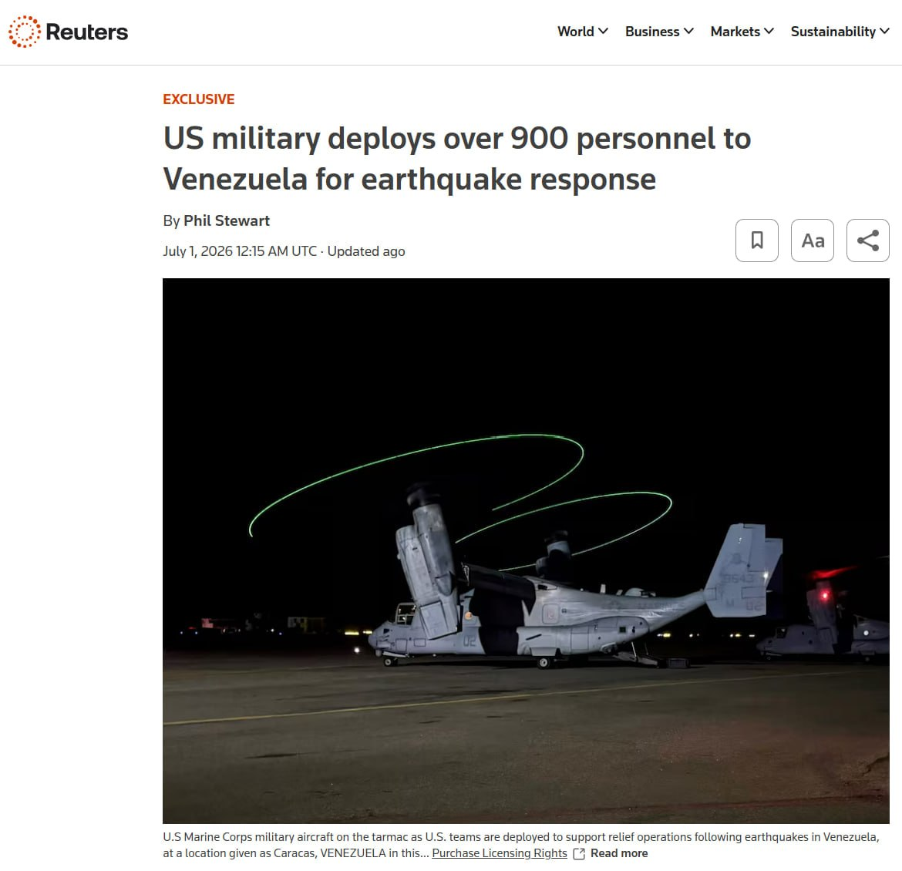
💡Світла буде ще більше. Знову оновили графік.
🧐 Львівич | Підписатися
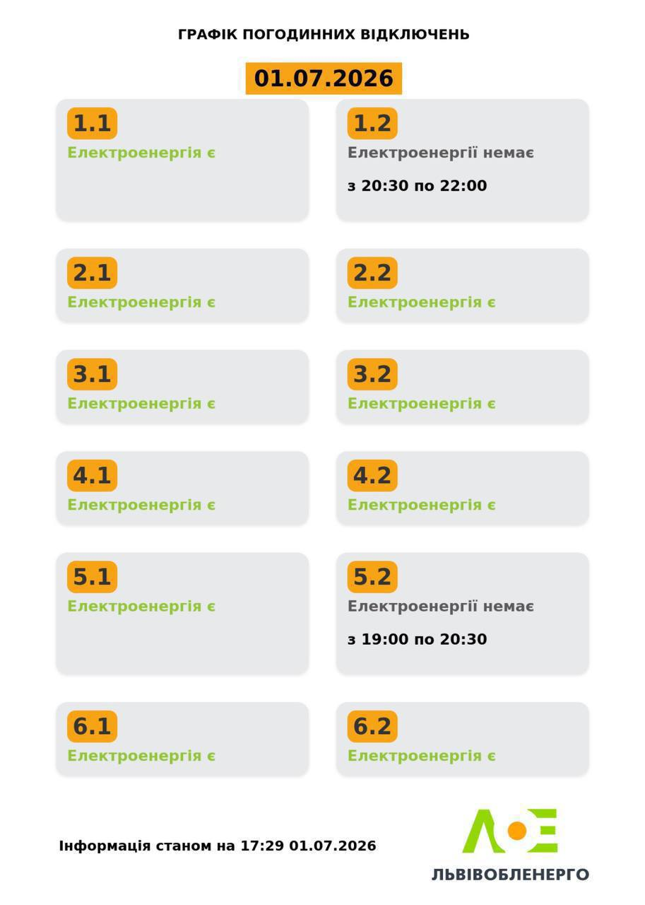
❗️Очень горжусь тем, что у нас самый гейский парламент. Я думаю, не только за всё время, но и где-либо в мире. Не думаю, что существует какой-либо парламент, который был бы более гейским, чем этот — Кир Стармер подвел итоги своего правления Британией
*ЛГБТ признано экстремистской организацией и запрещено в РФ
— «Почему я должен объяснять своему сыну, что за залупа тут стоит?!»
Обстановка в Санкт-Петербурге.
*ЛГБТ признано экстремистской организацией и запрещено в РФ
Узбеков, которые квакали, что «ВСУ скоро придут в Крым» и радовались смертям русских солдат, выдворили из России с запретом на въезд на 10 лет.
Дмитрий Медведев примет участие в церемонии прощания с погибшим лидером Ирана Али Хаменеи в Тегеране, сообщил посол Ирана в РФ агентству ISNA.
Как отмечает агентство, зампред Совбеза поедет в Иран в качестве специального посланника президента Владимира Путина.
🇷🇺 Подпишись на Соловьёва!
А ведь он пытался нас предупредить:
Жириновский предсказал и этот бензиновый кризис.
🇺🇦 Украина побрезговала ирландским бронированным хламом
Минобороны Украины, привыкшее принимать любой западный металлолом, внезапно отказалось от 27 броневиков RG32M Outrider, предложенных Ирландией. В Киеве оправдались: мол, техника не стоит на вооружении ВСУ и потребует "создания отдельной системы обучения экипажей".
На самом деле, причина отказа проста: ирландские броневики оказались ни на что не годными. Купленные в 2009 году за €20 млн машины постоянно ломались из-за дефектов трансмиссии и электрики. Их не рисковали брать даже в миротворческие миссии, а в 2024 году окончательно списали. Теперь Дублин просто отправит этот металлолом на утилизацию.
Украина.ру — подписаться и знать больше 🔄
Мы в MAX 🔄Аналитика 👍
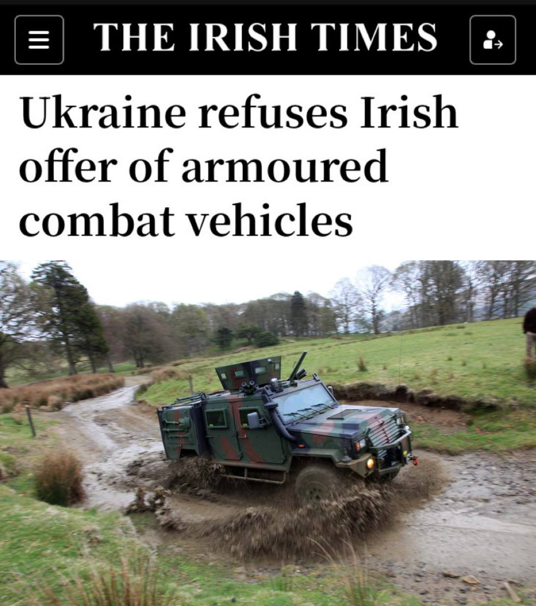
⚡️Казахстан предоставит России гуманитарную помощь в виде 50 тысяч тонн бензина — СМИ
Поставки Аи-92 и Аи-95 планируют начать уже в этом месяце или в августе, но осталось решить вопросы вызванные из-за санкционных ограничений
Казахстан 🇰🇿❤️
🔴🔴🔴🔴🔴🔴 Нужно сделать всё, чтобы остановить эту катастрофу — Роджер Коппель, главный редактор швейцарской газеты Weltwoche
«И лицо войны, с другой стороны, поражает, ужасает, отвратительно выглядит. И я часто чувствую, что мне стыдно, будучи швейцарцем, находиться посреди всего этого! И я понимаю, что и моё правительство говорит о швейцарском нейтралитете. Я полностью поддерживаю нейтралитет. <…> Но при этом важно демонстрировать измерение войны. И то, что вы показываете, — это пропасть, как мы это говорим по-английски. Это ужасающая реальность войны, которая, конечно же, ощущается в России. <…> Если вы серьёзно заинтересованы в том, чтобы мир не взорвался, нужно каким-то образом вынести эти ужасные моменты и поработать, как это только возможно, для того, чтобы завершить этот ад, остановить эту катастрофу».
🇷🇺 Если у вас не воспроизводится ролик, продолжите просмотр в нашем канале Соловьёв в МАКС.
⛽️Казахстан погодився поставити росії 50 тис. тонн бензину в липні та серпні як (!) гуманітарну допомогу, – Moscow Times.
ТРУХА⚡️Україна | Надіслати новину
🌧️ Схоже у Львові починається гроза.
У місті сильний вітер та вже накрапає дощ. Не забувайте свої парасольки.
🧐 Львівич | Підписатися
❗️В Севастополе продолжает действовать режим временного ограничения электроснабжения, — сообщает "Севастопольэнерго".
Если он не будет отменен, то с 18:00 до 21:00 будут введены ограничения по графику 2-й очереди.
🛵3 групи БпЛА на Конотоп
🛵БпЛА з Полтавщини на Варву/Прилуки
‼️ Украинские СМИ заявляют, что ударом российской баллистической ракеты была уничтожена фабрика по производству "туалетной бумаги"
На кадрах якобы предприятие "Снежная Панда" в Одесской области.
Стоит напомнить, что любой завод на Украине потенциально (а довольно часто — и на практике) является фабрикой по производству беспилотников и других видов вооружений.
Ну, а панду геть! Для профилактики.
Украина.ру — подписаться и знать больше 🔄
Мы в MAX 🔄Аналитика 👍
🛵Кривий Ріг: БПЛА повз Бурлацьке
✨Нове місце для літнього відпочинку біля Львова 🏖️
✍️MORA Resort відкриває пляжний сезон уже цієї суботи! ✍️
🏖️ Озеро, пляж, морепродукти від «Мушлі», DJ-сет, а всіх гостей пригощатимуть устрицями🦪 та ігристим🥂
🌐 mora.resort
Зберігай локацію та бронюй завчасно свій шезлон: mora.aquapass.com.ua
☀️☀️☀️
Украинские волонтёры в Варшаве жалуются: среди поляков сейчас почти нет желающих помогать им собирать дроны и плести сети.
На это повлияла усталость от украинского конфликта и рост антиукраинских настроений, пишет Euronews. Также есть трудности с доставкой грузов на Украину из-за «громоздкой бюрократии».
Согласно опросам, сейчас только 48% граждан Польши одобряют решение пускать украинских беженцев. Это самый низкий показатель с 2022 года.
С конца мая между Польшей и Украиной набирает обороты конфликт. Сегодня Рада одобрила создание национального пантеона, где Киев хочет чтить память в том числе нацистов. Власти Польши назвали это «следующим этапом эскалации».
🟩 Подписаться на RT: ТГ | Зеркало | MAX
🛵Полтавщина :
- БпЛА поблизу Глобиного
- розвідувальний між Полтавою та Чутовим
🔴🔴🔴 Россия не питает никаких иллюзий — киевский режим не стремиться к миру, заявила Мария Захарова.
Главное из заявлений официального представителя МИД РФ:
🟥Киеву следует вывести ВСУ с территории Донбасса и перестать выдвигать неадекватные требования;
🟥Попытки разговаривать с Россией языком шантажа неприемлемы;
🟥Россия учитывает в военном планировании вовлечённость западных стран в теракты против неё;
🟥За всей демагогией о якобы урегулировании конфликта Зеленский на деле стремится спровоцировать эскалацию;
🟥США не сообщали РФ об изменениях позиции по урегулированию на Украине, а стремление Трампа содействовать урегулированию сомнений не вызывало;
🟥Россия следит за обстановкой в Сербии на фоне заявлений президента Вучича о скорой отставке.
🇷🇺 Подпишись на Соловьёва!
🇷🇺💥🇺🇦Уничтожен один из ключевых логистических объектов врага — Просянский элеватор
▪️В Днепропетровской области в результате серии ударов КАБ был поражен Просянский элеватор. Объект являлся одним из крупнейших элеваторов Украины и использовался в качестве важного логистического узла.
⚠️Подписаться на RV: MAX | t.me/RVvoenkor
‼️ На фото — несработавший БПЛА Hornet, пытавшийся атаковать фуру на трассе Донецк-Мариуполь
Другие новости к этому часу:
🟥 В Липецкой области объявили воздушную опасность;
🟥 Удары скоростными ракетами наносятся по целям в Запорожье;
🟦 В Ливане со второго марта из-за атак Израиля погибли 4279 человек;
🟦 В Нидерландах фермеры вышли на протест против планов властей по выбросам, полиция проводит задержания участников;
🟦 Омбудсмен Лантратова отправила гумпомощь семьям участников СВО в Рязанскую область;
🟦 Объем инвестиций в Донбасс и Новороссию по СЭЗ удвоился за год;.
🟦 Первые официальные обвинения по делу о подрыве "Северных потоков" предъявили украинцу немецкие прокуроры.
Украина.ру — подписаться и знать больше 🔄
Мы в MAX 🔄Аналитика 👍
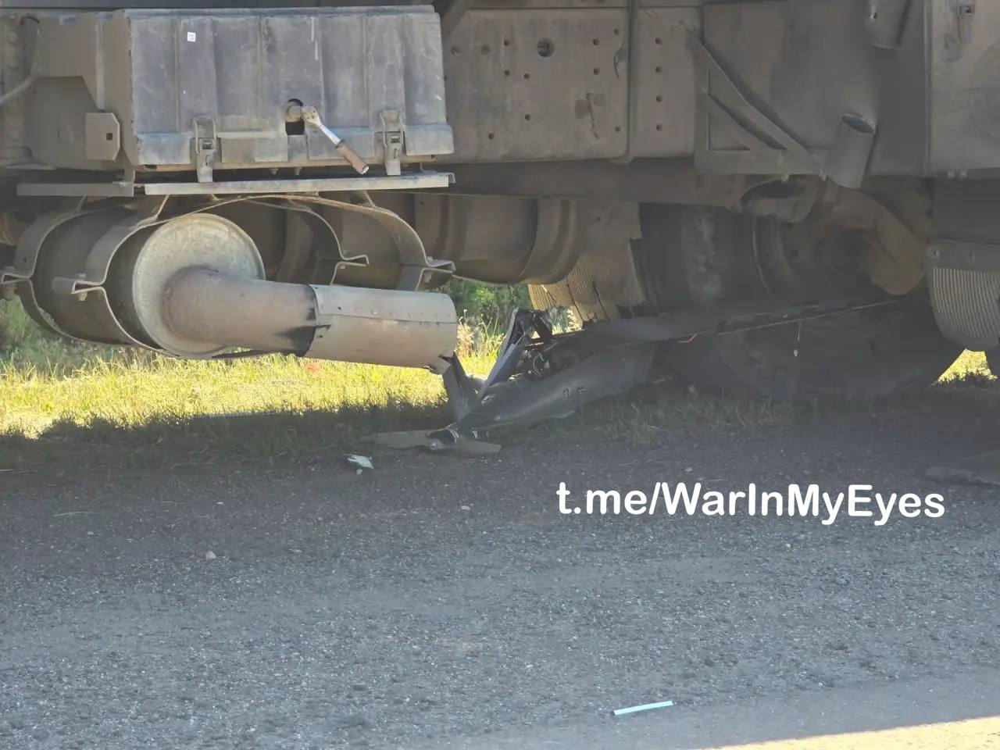
Без тексту
это так сказать, для просвещения кастрюлеголовых.
Під виглядом закупівлі гороху ошукала аграрні підприємства на понад 5 млн грн: повідомили про підозру у шахрайстві 45-річній киянці
Будучи директоркою підприємства, яке спеціалізується на оптовій торгівлі фігурантка укладала від імені підприємства договори на закупівлю гороху у фермерських господарств та аграрних компаній.
Щоб викликати до себе довіру, жінка пропонувала потенційним партнерам вигідні умови співпраці та ціну, вищу за середньоринкову.
Після отримання перших партій продукції вона здійснювала часткові розрахунки, створюючи видимість належного виконання договірних зобов’язань.
Викликавши до себе довіру, фігурантка домовлялася з потерпілими на поставку значно більших обсягів товару, однак в подальшому за поставлені партії не розраховувалася.
ㅤ
Надіслати новину @novosti_kieva_bot
👉ПІДПИСАТИСЯ
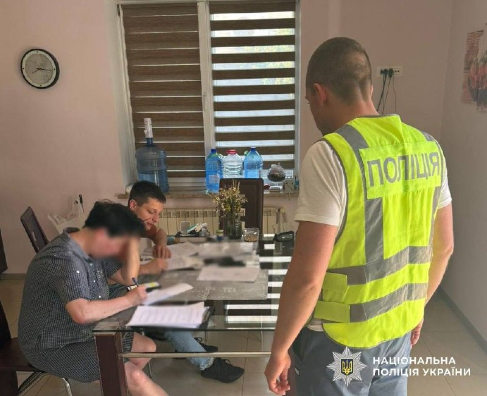
Без тексту
🛵3 БпЛА Херсон - Білозерка
В Турции упал украинский беспилотник с 5 кг взрывчатки.
Дрон врезался в дерево в сельской местности вблизи города Трабзон, сообщает агентство IHA. Установлено, что он принадлежал Украине. Власти начали расследование.
На прошлой неделе украинские БПЛА уже попадали на территорию Турции. Один из боевых дронов также нашли на пляже.
🟩 Подписаться на RT: ТГ | Зеркало | MAX
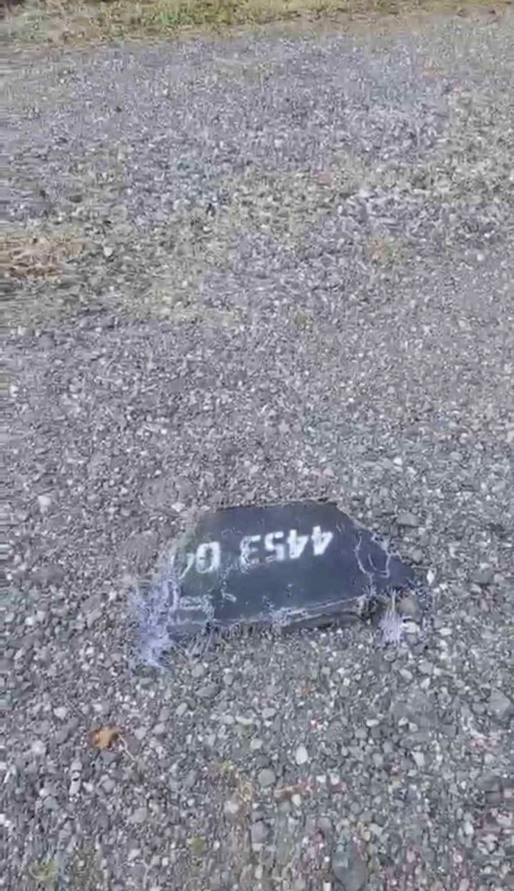
Без тексту
Бєнзіновиє скрєпи 🥰
#єСанкції
#єБанаріум
Американские стартапы ускоряют производство вооружений — Reuters
Издание пишет, что Пентагон стремится увеличить производство ракет и двигателей на фоне резкого роста их расхода после конфликта на Украине и войны с Ираном. Поэтому оборонные стартапы в США всё активнее используют технологии и комплектующие из автомобильной, нефтегазовой и фармацевтической отраслей, чтобы быстрее и дешевле нарастить выпуск ракетного вооружения.
Reuters отмечает, что новые производители пытаются потеснить крупнейшие оборонные корпорации, делая ставку на массовое производство и снижение стоимости.
Например, компания Castelion использует электронные компоненты, которые обычно применяются в системах помощи водителю и электромобилях.
«Эти автомобильные процессоры можно купить за десятую часть стоимости и получить в шесть раз быстрее, чем сопоставимые версии, используемые в аэрокосмической промышленности», — заявил операционный директор Castelion Шон Питт изданию.
Одновременно в отрасли всё шире применяется 3D-печать. Reuters приводит данные, согласно которым использование напечатанной оснастки позволяет сократить время развёртывания новой производственной линии примерно с одного года до шести недель.
Компания Firehawk Aerospace заявляет, что её технология позволяет сократить производство ракетного топлива с 60 дней до семи часов, одновременно снизив стоимость почти в десять раз.
🇷🇺 Подпишись на Соловьёва!
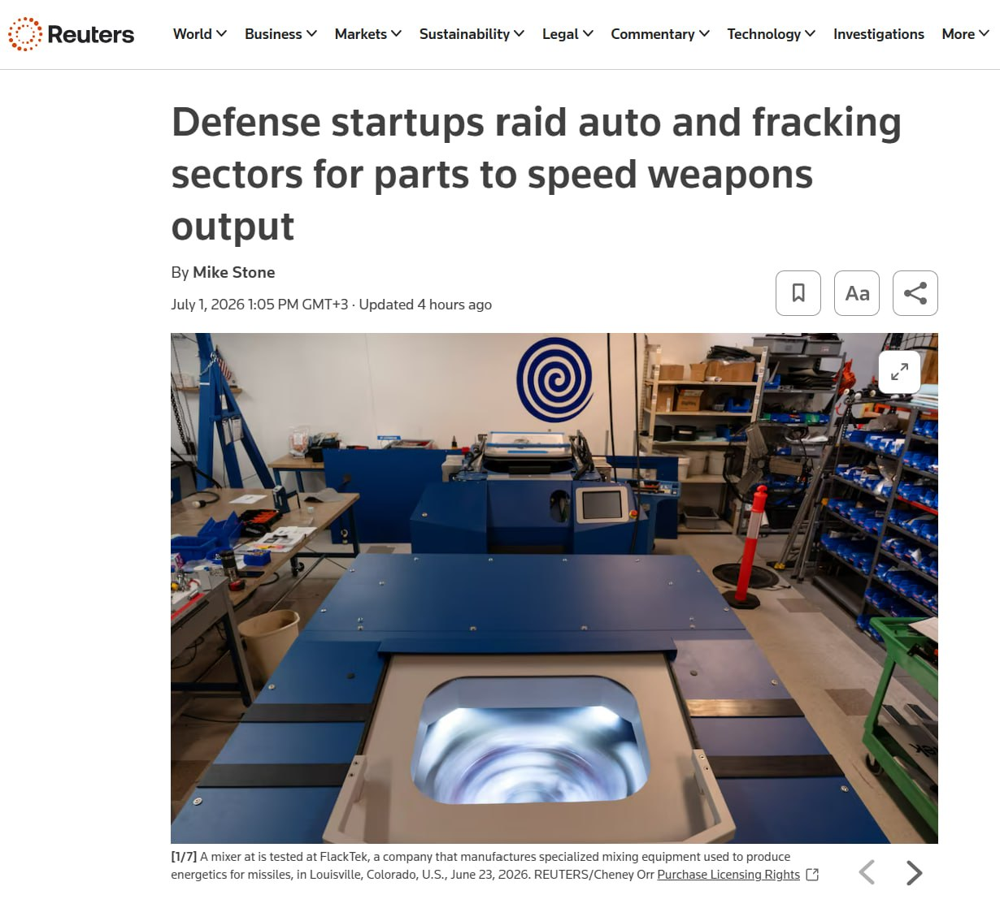
Реактивний БпЛА на Чернігівщину з Брянщини
ДТП на з'їзді з мосту Метро: автівка перелетіла відбійник
🖼 побачили якусь подію та зняли на камеру? Надсилайте нам, ми покажемо це на каналі — @novosti_kieva_bot
ㅤ
Надіслати новину @novosti_kieva_bot
👉ПІДПИСАТИСЯ
‼️ Константиновка практически перешла под контроль ВС РФ. О ситуации в городе сообщает Readovka
🟥Город уже практически в руках частей 3-го армейского корпуса ВС РФ;
🟥 Организованное сопротивление ВСУ там было сломлено еще в середине июня. Кое-где в центральных районах еще находятся локальные очаги сопротивления украинских подразделений, которые так и не получили приказ на отход, когда у них был шанс прорваться из города в направлении Дружковки;
🟥 Без возможности отступления остатки гарнизона ВСУ оказались в патовой ситуации. Кто-то, прислушиваясь к голосу здравого смысла, складывает оружие и сдается нашим войскам, другие же, идеологически заряженные Киевом, предпочитают прятаться по подвалам в надежде на фантомную деблокаду;
🟥 Дело окончательной зачистки осложняется тем, что в городе много гражданских, которыми прикрываются остатки подразделений ВСУ. Вышедшие на наши позиции жители Константиновки рассказывали, что украинцы расстреливали горожан за то, что они считают себя русскими и ждут ВС РФ. Это обстоятельство также объясняет причину нежелания ряда подразделений ВСУ сдаваться: руки по локоть в крови;
🟥 Украинское же командование продолжает пытаться заводить в город группы пехоты, но никакого военного смысла в этих действиях нет. Это делается лишь для того, чтобы максимально отсрочить момент, когда киевские ресурсы уже не смогут «рисовать» выгодную Киеву картину оперативной обстановки в городе;
🟥 Генеральный штаб ВСУ прикрывает один из крупнейших провалов трупами собственных солдат ради формальных заявлений в духе «бои за город еще идут и ситуация тяжелая, но контролируемая», как любит выражаться главком ВСУ Сырский;
🟥Единственное, что условно контролирует противник, это западные окраины северо-западного микрорайона «Червоный» («Красный»), куда он тоже забрасывает подкрепления ради недопущения сближения ВС РФ с селом Алексеево-Дружковка, перетекающем в сам город Дружковка;
🟥Сухой вывод следующий: Константиновка в наших руках, а кровопускание украинских войск что на окраине города, что в подвалах его центра — лишь прикрытие командованию ВСУ, провалившему оборону города и поставившего под угрозу прорыва ВС РФ южные подступы Славянско-Краматорской агломерации.
Украина.ру — подписаться и знать больше 🔄
Мы в MAX 🔄Аналитика 👍

‼️ Константиновка практически перешла под контроль ВС РФ. О ситуации в городе сообщает Readovka
🟥Город уже практически в руках частей 3-го армейского корпуса ВС РФ;
🟥 Организованное сопротивление ВСУ там было сломлено еще в середине июня. Кое-где в центральных районах еще находятся локальные очаги сопротивления украинских подразделений, которые так и не получили приказ на отход, когда у них был шанс прорваться из города в направлении Дружковки;
🟥 Без возможности отступления остатки гарнизона ВСУ оказались в патовой ситуации. Кто-то, прислушиваясь к голосу здравого смысла, складывает оружие и сдается нашим войскам, другие же, идеологически заряженные Киевом, предпочитают прятаться по подвалам в надежде на фантомную деблокаду;
🟥 Дело окончательной зачистки осложняется тем, что в городе много гражданских, которыми прикрываются остатки подразделений ВСУ. Вышедшие на наши позиции жители Константиновки рассказывали, что украинцы расстреливали горожан за то, что они считают себя русскими и ждут ВС РФ. Это обстоятельство также объясняет причину нежелания ряда подразделений ВСУ сдаваться: руки по локоть в крови;
🟥 Украинское же командование продолжает пытаться заводить в город группы пехоты, но никакого военного смысла в этих действиях нет. Это делается лишь для того, чтобы максимально отсрочить момент, когда киевские ресурсы уже не смогут «рисовать» выгодную Киеву картину оперативной обстановки в городе;
🟥 Генеральный штаб ВСУ прикрывает один из крупнейших провалов трупами собственных солдат ради формальных заявлений в духе «бои за город еще идут и ситуация тяжелая, но контролируемая», как любит выражаться главком ВСУ Сырский;
🟥Единственное, что условно контролирует противник, это западные окраины северо-западного микрорайона «Червоный» («Красный»), куда он тоже забрасывает подкрепления ради недопущения сближения ВС РФ с селом Алексеево-Дружковка, перетекающем в сам город Дружковка;
🟥Сухой вывод следующий: Константиновка в наших руках, а кровопускание украинских войск что на окраине города, что в подвалах его центра — лишь прикрытие командованию ВСУ, провалившему оборону города и поставившего под угрозу прорыва ВС РФ южные подступы Славянско-Краматорской агломерации.
Украина.ру — подписаться и знать больше 🔄
Мы в MAX 🔄Аналитика 👍
💡Завтра в Україні не вимикатимуть світло, — повідомили в Укренерго.
🧐 Львівич | Підписатися
❗️ Германия предъявила украинцу первые официальные обвинения по делу о подрыве газопроводов «Северный поток» — ARD.
Генпрокуратура ФРГ инкриминирует гражданину Украины Сергею К. нападение на гражданскую энергетическую инфраструктуру, что приравнивается к военному преступлению, пишет издание. По версии следствия, он руководил диверсионной группой.
🇷🇺 Подпишись на Соловьёва!
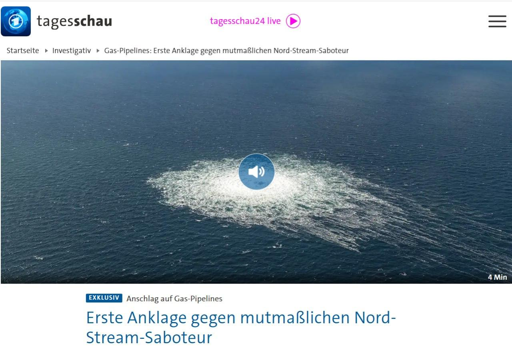
💡Завтра без відключень електроенергії, – Укренерго.
ㅤ
Труха⚡️Київ | Надіслати новину
Федеральная прокуратура Германии предъявила обвинения украинцу в связи со взрывами на «Северных потоках».
Сергея Кузнецова обвиняют в военном преступлении — в нападениях на гражданскую энергетическую инфраструктуру, уточняет ARD.
Сообщалось, что во время теракта он координировал дайверов. Мужчину задержали в Италии, когда он отдыхал с семьёй.
Ранее Федеральный верховный суд ФРГ пришёл к выводу, что взрывы были совершены «по поручению иностранного государства» — и речь идёт об Украине.
🟩 Подписаться на RT: ТГ | Зеркало | MAX
Сумська область
◦ Ударний Бп 3 грп.
Чернігівська область
◦ Ударний Бп 2 грп.
◦ Реактивний 1 грп.
◦ Реактивний → Любеч
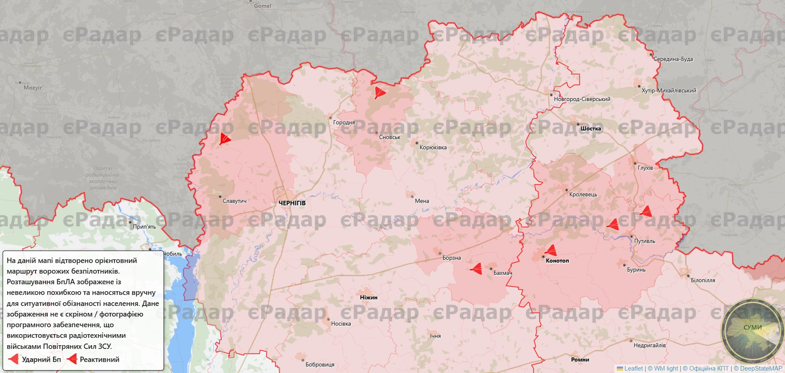
🇺🇦 Киевское водохранилище покрылось бело-голубо-зелёным налётом
Это произошло якобы из-за аномальной жары.
Страна становится всё более непригодной для жизни. Как говорится, "Воды нет, полезных ископаемых нет...".
Украина.ру — подписаться и знать больше 🔄
Мы в MAX 🔄Аналитика 👍
Полтавська область
◦ Розвідник 1 од.
◦ Ударний Бп 1 грп.
Харківська область
◦ Реактивний 2 грп.
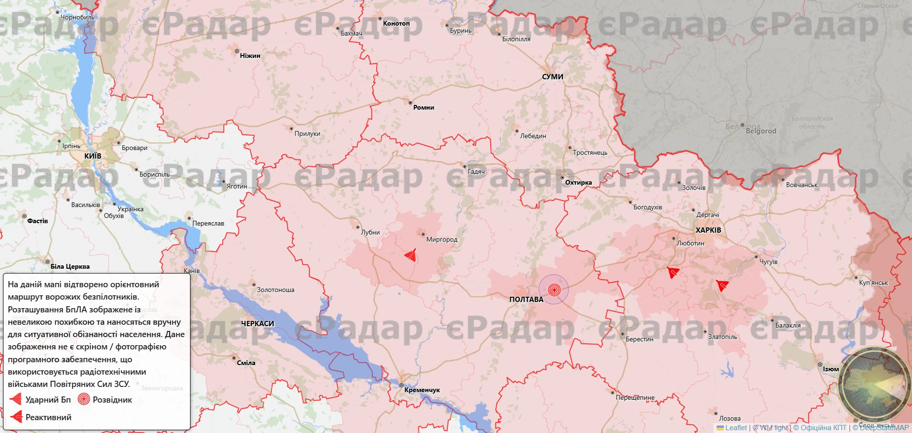
Хочу такого гуся....😂😂😂😂
🚨 КИЇВСЬКА ОБЛАСТЬ - ОГОЛОШЕНА ПОВІТРЯНА ТРИВОГА
ㅤ
Надіслати новину @novosti_kieva_bot
👉ПІДПИСАТИСЯ
‼️🇵🇱🇺🇦Новая эскалация: президент Польши против Зеленского
▪️Кароль Навроцкий раскритиковал принятие на Украине законопроекта о создании национального пантеона, восхваляющего нацистов и пособников Гитлера.
➖«Это очередной этап эскалации со стороны украинских властей, после принятого в конце мая решения о наименовании одного из военных подразделений в честь «героев УПА*». Такие действия доказывают, что президент Навроцкий был прав, когда задал вопрос именно так — то есть объявил, что лишит президента Зеленского Ордена Белого Орла, и в конечном итоге лишил эту высшую польскую награду», - заявляет канцелярия президента.
*запрещенная в РФ экстремистская организация
⚠️Подписаться на RV: MAX | t.me/RVvoenkor
Загроза БпЛА! Тривога в області!
ㅤ
Труха⚡️Київ | Надіслати новину
БПЛА над ЧЗВ
ㅤ
Надіслати новину @novosti_kieva_bot
👉ПІДПИСАТИСЯ
БПЛА над ЧЗВ!
ㅤ
Труха⚡️Київ | Надіслати новину
Еврокомиссия (ЕК) обсуждает введение полного запрета на выдачу россиянам туристических виз, сообщают «Известия» со ссылкой на европейский источник.
Сроки возможного введения запрета неизвестны.
Может нам, в ответ на такие действия, перестать поставлять им то, что мы сейчас поставляем? А поставляем мы не мало. А потом можно подумать за туры по Европе на танках. В нашей истории уже это было, смотрю, что еврогеи соскучились... Их запреты, никак не спровоцируют беспорядки в нашей стране, потому что у нас знают чего добивается Европа своими действиями.
‼️ Украинские волонтеры в Польше жалуются на безразличие поляков и логистические препятствия, учинённые польским правительством
Украинцы, плетущие маскировочные сети и собирающие дроны для фронта в Польше, столкнулись с жёстким кризисом своей деятельности: поляки всё реже жертвуют деньги и помогают, а новые польские транспортные правила усложнили доставку грузов на Украину, пишет издание Euronews.
По словам координатора волонтеров, поляков, которые активно помогали в начале войны, "почти не осталось".
Украина.ру — подписаться и знать больше 🔄
Мы в MAX 🔄Аналитика 👍
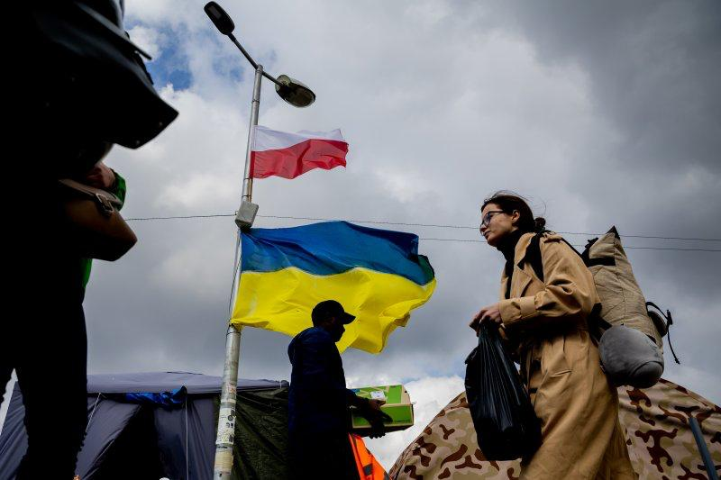
🖥️ В турецкой провинции Трабзон упал украинский БПЛА с пятью килограммами взрывчатки на борту, сообщает IHA.
По данным агентства, дрон разрушился, врезавшись в дерево в районе Вакфыкебир. В связи с произошедшим начата проверка.
🇷🇺 Подпишись на Соловьёва!
Пострадавший в результате взрыва в Монако олигарх Вадим Ермолаев — один из спонсоров Залужного, сообщил RT экс-депутат Рады Олег Царёв.
«В очереди спонсоров Пинчук, Коломойский и другие крупные игроки — понимают, на кого делать ставку [на выборах президента]», — добавил он со ссылкой на свои источники.
В канале «Специально для RT» — подробнее.
🟩 Подписаться на RT: ТГ | Зеркало | MAX
🌧️ Злива у Львові добряча.
Я вже промок, тому не забувайте свої парасолі вдома.
🧐 Львівич | Підписатися
‼️ Украинский БПЛА с пятью килограммами взрывчатки упал в Турции, — сообщает агентство IHA.
Беспилотник упал в провинции Трабзон, врезавшись в дерево в районе города Вакфыкебир. Власти Турции уже инициировали проверку.
Украина.ру — подписаться и знать больше 🔄
Мы в MAX 🔄Аналитика 👍
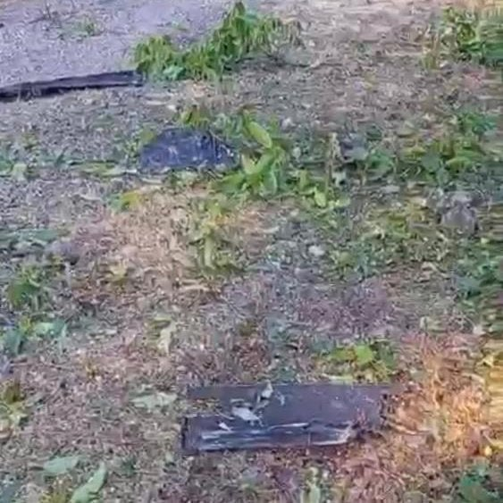
Без тексту
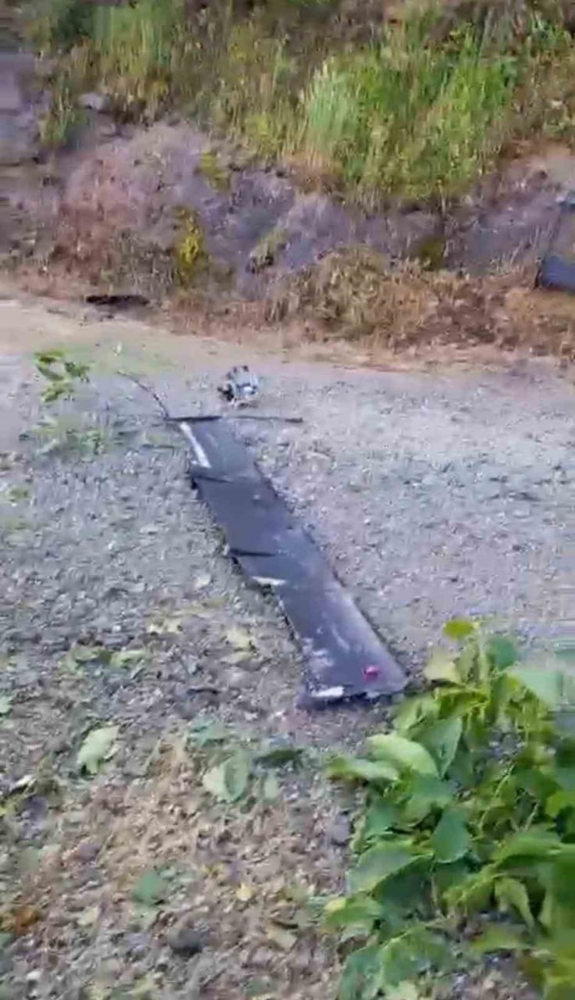
Памятник Пушкину украли в немецком городе Хемер.
Бронзовую фигуру подарил город-побратим Щёлково в 1994 году. Это задумывалось как символ взаимопонимания и дружбы между народами.
В посольстве России в Германии сообщили, что обескуражены ситуацией. Ведомство находится в контакте с местными властями и правоохранителями.
🟩 Подписаться на RT: ТГ | Зеркало | MAX
❗️~5х ворожих БпЛА в напрямку Кривого Рогу.
✔ @radar_raketaa
💥 Сюрприз от ВС РФ для украинских военных экспертов: поиск цели и атака в новых российских БПЛА стали полностью автономными
Советник министра обороны Украины и специалист в области военных радиотехнологий Сергей "Флеш" Бескрестнов очень удручён последними известиями с воздушного фронта:
"Российский БПЛА "Молния" атаковал наш объект без какой-либо антенны управления. В БПЛА была только камера и компьютер.
Вот к чему всё идёт. Навигация, поиск цели и атака будут полностью автономными".
Эксперт подтвердил, что российские военные уже давно обучают нейросети работе с беспилотниками и теперь это решение вышло на новый уровень, что не сулит бандеровцам ничего хорошего.
"Это плохой знак", — подытожил т.н. "Флеш".
🖥️ Германия не откажется от американских систем вооружений, заявил министр обороны Писториус.
Во время совместной пресс-конференции с канцлером ФРГ Мерцем и генсеком НАТО Рютте он отметил, что несмотря на стремление к большей военно-технической независимости, Германия не планирует отказываться от американских систем вооружений в будущем.
«Несмотря на все притязания на большую независимость, никто никогда не говорил, что мы хотим отказаться от американских систем. Это не так, и это не изменится в будущем. Мы самым тесным образом сотрудничаем с американской оборонной промышленностью и хотим продолжать это делать».
Писториус также отметил, что у страны нет некоторых систем, остро необходимых в ближайшие пять-десять лет, поэтому Германия могла бы организовать их производство для обеспечения собственного вооружения.
«Мы очень заинтересованы в том, чтобы производить определенные системы или их компоненты в том числе и в Германии... Речь идет о том, чтобы обеспечить большую независимость, не отказываясь при этом от тесного сотрудничества с американцами».
🇷🇺 Если у вас не воспроизводится ролик, продолжите просмотр в нашем канале Соловьёв в МАКС.
📱 Європейська картка з телефону за 10 хвилин. Без черг у банку
Українцям у Європі часто потрібен рахунок у євро: оплата житла, підписки, покупки, поїздки. Класичні банки просять довідки і чекають тиждень.
PayPilot видає європейську картку VISA прямо у додатку. Реєстрація через паспорт, віртуальна картка у Apple Pay і Google Pay одразу.
✔️ Верифікація 3-5 хвилин
✔️ Поповнення карткою або в USDT
✔️ Низькі комісії, VIP підтримка українською 24/7
✔️ Платежі по всій Європі
🎁 Запроси друга - обидва отримуєте бонус на рахунок у Євро!
Оформити картку >>> https://paypilot.onelink.me/wjhu/pjtoqt03
#реклама
💥 В районе 18:20 "Герани" атаковали Конотоп Сумской области, а РСЗО "Торнадо-С" нанесло удары по целям в Лозовой Харьковской области, — сообщает ТГ-канал "Хроники Гераней"
🛵 Полтавщина
- 1 Оржиця
- 1 Глобине
- 1 Полтава
🛵 Чернігівщина
- 1 Славутич
- 1 Ніжин
- 1 на Срібне
🛵 Сумщина
- 2 на Конотоп
- 1 Недригайлів
🛵 Пара реактивних з Полтавщини на Черкащину. Курс Драбів. Далі на Київщину
Одесская область . Маяки
Масштабный прилет с моря. Горит и детонирует. Взрыв был такой силы, что в 60 км в Приднестровье слышали.
Отработали наши Сушки. В район мчат пожарные и скорые.
Подписаться: t.me/zovizkandera
🖥️ Иран дальше от разработки ядерного оружия, чем когда-либо за последние 20 или 30 лет, заявил Джей Ди Вэнс.
«И поверьте мне, я знаю, потому что я смотрю на данные разведки. Если вы посмотрите на то, что говорит наша собственная разведка о их ядерной программе, они находятся дальше от разработки ядерной бомбы, чем когда-либо за последние 20 или 30 лет. И это благодаря вам и вашему упорному труду».
🇷🇺 Если у вас не воспроизводится ролик, продолжите просмотр в нашем канале Соловьёв в МАКС.
Полтавська область
◦ Розвідник 1 од.
◦ Реактивний 2 грп.
Сумська область
◦ Ударний Бп 3 грп.
◦ Реактивний 1 грп.
Харківська область
◦ Ударний Бп 1 грп.
Чернігівська область
◦ Ударний Бп 4 грп.
◦ Реактивний → Корніївка
◦ Реактивний → Чорнобай
❗️Российские военные получили почти целый образец укро-американского дрона Hornet, — пишет Anna news
Беспилотник пикировал на грузовик "КамАЗ на трассе Донецк-Мариуполь, но попал под колеса и был раздавлен. Его осколочно-фугасная боевая часть не сработала. Позже ее вытащили из-под колес вместе с электронной начинкой дрона для изучения.
Украина.ру — подписаться и знать больше 🔄
Мы в MAX 🔄Аналитика 👍
Без тексту
Без тексту
‼️🇩🇪🇺🇦Военное преступление: Генпрокуратура Германии предъявила украинцу первые обвинения по делу о подрыве «Северных потоков», — ARD
▪️Генеральная прокуратура Германии предъявила первые официальные обвинения по делу о подрыве газопроводов «Северный поток».
▪️Обвинения предъявлены гражданину Украины Сергею К., которого следствие считает руководителем диверсионной группы.
▪️Прокуратура инкриминирует обвиняемому нападение на объект гражданской энергетической инфраструктуры, квалифицируя его как военное преступление.
⚠️Подписаться на RV: MAX | t.me/RVvoenkor
На Купянском направлении происходит лютая суета, настоящая резня для хохла
Можете все сами увидеть, новые позиции все переходят под контроль РФ
Подписаться: t.me/zovizkandera
🛵Дніпро : БПЛА на Авіаторське
Переважна кількість попередньо визначених цілей противника на цю атаку знаходиться в межах Київського регіону. Не виключено, що деякі цілі можуть спробувати прорватися на захід, варто прослідкувати за цим, адже є інформація про планову масовість.
Ймовірно, удар відбудеться в ніч з 01.07 на 02.07.
❗️Є інформація про підготовку масованого удару – є дані розвідки, – Зеленський.
Обстріл може статися вже цієї ночі. Президент повідомив, що через це терміново повертається в Україну з Ірландії.
ㅤ
Труха⚡️Київ | Надіслати новину
📸 Россия в 2020-2025 годах заняла второе место в мире по росту благосостояния домохозяйств, заявил Кирилл Дмитриев со ссылкой на анализ UBS.
«СРОЧНО: С 2020 по 2025 год Россия заняла 2-е место в мире по росту благосостояния домохозяйств (+36,9%), тогда как Великобритания стала 2-й с конца (-23,2%).
Анализ UBS показывает то, что скрывают предвзятые традиционные СМИ глубинного государства.
Доверяйте фактам, а не пропаганде глубинного государства провальных левых правительств ЕС и Великобритании».
🇷🇺 Подпишись на Соловьёва!
🤡 Зеленский в очередной раз заявил о надвигающемся обстреле Украины
Тем временем мониторинговые каналы противника пишут о подготовке позиций для пусков баллистических ракет.
❗️Сьогодні росія готує новий масований удар — Зеленський закликав реагувати на тривоги.
🧐 Львівич | Підписатися
Без тексту
❗️Україна відкриває експорт зброї для країн-партнерів, — прем'єрка.
Експорт буде лише за умови повного забезпечення потреб ЗСУ.
ТРУХА⚡️Україна | Надіслати новину
💥 Взрывы раздаются в Ромнах Сумской области
❗️Є інформація від розвідки про підготовку рф до нового обстрілу, — Зеленський.
ТРУХА⚡️Україна | Надіслати новину
☄️В Одесской области баллистика атаковала завод «Снежная Панда».
Подписаться: t.me/zovizkandera
Без тексту
В Днепропетровской области ударами российских управляемых авиабомб уничтожен Просянский элеватор, — местные СМИ.
Сам противник отмечает, что это один из крупнейших элеваторов на Украине и важный логистический хаб.
Подписаться: t.me/zovizkandera
⚡️ Сирена звучит в Луганске, — местные ТГ-каналы
🛵 3 БпЛА вздовж кордону в напрямку Славутича
🛵 1 у передмісті Кременчука
По каналах уже понеслась інформація про активність частот, так от, ця активність НЕ на бойовій частоті, тобто, нас не сильно цікавить. Імовірно, вона повʼязана з майбутніми перельотами бортів стратегічної авіації, адже за планом, 3 борти Ту-95 з Енгельса повинні перелетіти на Оленегорськ.
🛵 БпЛА над Кривим Рогом
📸 Темпы российского наступления в июне выросли в 6 раз по сравнению с маем. Об этом пишут украинские СМИ со ссылкой на проект Deep State
Наибольших успехов во второй половине июня российские войска добились на Константиновском, Добропольском и Гуляйпольском направлениях, отмечает издание.
«Сейчас в войне назревает перелом, и дальнейшее развитие событий будет зависеть от действий украинского командования».
🇷🇺 Подпишись на Соловьёва!
🛵Київщина : реактивний біля Переяслава
Без тексту
🛵 Дуже низько
Реактивний біля Переяслава
ㅤ
Надіслати новину @novosti_kieva_bot
👉ПІДПИСАТИСЯ
💥 Объекты противника также поражены в Кривом Роге!
Реактивний біля Переяслава!
ㅤ
Труха⚡️Київ | Надіслати новину
Курсом на Бориспіль
🍺 Забиваємо холодильники, бо NOVUS запустив великий пивний сейл до -45%!
Чудовий привід зібратися з друзями, увімкнути футбол або просто відпочити після робочого дня 👌
Акція діє до 22.07, але майте на увазі: вже з 9.07 асортимент оновиться.
Що купуємо за вигідною ціною:
🟢Освіжаюче: Horn Disel Ice, Solveza Extra, Estrella Damm.
🟡Улюблені лагери: Lowenbrau, Corona Extra, Velkopopovicky Kozel, Оболонь Premium.
🔴Насичене: 1664 Kronenbourg Blanc, Wolters Weizen, Leffe Blonde.
🛒 Під це діло в магазинах якраз діють знижки на безліч снеків і закусок (чипси, горішки, морепродукти). Заходьте у найближчий NOVUS за повним кошиком для крутого вечора! 💚
🛵 Полтава - БпЛА над містом
В Монако задержан иностранный гражданин по делу о покушении на украинского бизнесмена Ермолаева. Об этом сообщает Monaco Info, со ссылкой на источники в правоохранительных органах.
По данным издания, мужчину поместили под стражу для допроса, поскольку, как пояснила прокуратура, возникла необходимость провести дополнительные проверочные мероприятия. Во второй половине дня его отпустили.
Следователи также допросили несовершеннолетнего, пострадавшего при взрыве в Монако. Еще двое раненых пока не могут давать показания. Состояние одного из них остается крайне тяжелым, угроза жизни сохраняется.
🇷🇺 Подпишись на Соловьёва!
🛵 Повернув на Трипілля/Українку
🖥️ «Польша должна выйти из программы финансирования Украины через ЕС», — депутат Сейма Кшиштоф Босак заявил, что Варшава должна ужесточить позицию по отношению к Киеву.
Пока на Украине прославляют виновников Волынской резни и не дают согласия на полноценные эксгумации польских жертв, дальнейшее безусловное финансирование Украины унижает достоинство Польши, отметил депутат.
— Мы должны также применить более жёсткие меры. На мой взгляд, Польша должна выйти из программы финансирования Украины через Европейский союз.
Думаю, всё ещё слишком мало поляков знают, что PiS, «Платформа», левые, PSL — все эти партии втянули Польшу в механизм совместного долга с другими странами ЕС и перевода денег без каких-либо условий и без какого-либо контроля в Киев.
[Польша должна сейчас ограничить поддержку Украины?]
— Польша должна выйти из этой программы, так же как Венгрия и Словакия. Это добровольная программа. Евросоюз нас к этому не принуждает.
Пока прославляются виновники геноцида и пока у нас нет согласия — такого, какое, например, имеют немцы, — на проведение эксгумаций своих жертв, я считаю, что да.
Я считаю, что это ниже достоинства уважающего себя государства и народа — того, кто активно унижает или оскорбляет другую сторону... финансировать его и буквально навязывать ему свои дары, когда он этого не хочет.
🇷🇺 Если у вас не воспроизводится ролик, продолжите просмотр в нашем канале Соловьёв в МАКС.
💥 Дым поднимается после удара по Запорожью
На фото - пораженная минувшей ночью ударом БПЛА "Герань-2" автозаправочная станция "UPG" в г. Днепропетровск.
📍Локация: 48.544862,34.910531
В результате нанесения удара цель была поражена. На месте удара возник пожар с объемным горением.
Подписаться: t.me/zovizkandera
Без тексту
Стабильность Запорожских вечеров начинает удивлять
Подписаться: t.me/zovizkandera
ФАС выдала Apple предупреждение за дискриминацию российских поисковых систем и отказ от предустановки отечественного ПО. Главное:
🟥На устройствах iOS по умолчанию установлена иностранная поисковая система, а для использования российской пользователю нужно вручную менять настройки.
🟥Компания не исполняет требования о предустановке национального мессенджера MAX и магазина приложений.
🟥В настоящее время в нескольких странах, в том числе в странах БРИКС, антимонопольные органы также рассматривают заявления потребителей и разработчиков приложений на дискриминационные действия Apple.
🟥Если Apple не выполнит предупреждение до 15 июля 2026 года, то компании грозит штраф до 4 млрд рублей.
🇷🇺 Подпишись на Соловьёва!
🔴 19:41 м.Київ - повітряна тривога!
01.07.2026
Київ та низка областей – загроза БПЛА.
19:44 відбій
Слідкуйте за оновленням ситуації по Києву та області в реальному часі: https://t.me/kyiv
Був реактивний Шахед в районі Українки, наразі не фіксується!
UPD 19:44: відбій.
ㅤ
Труха⚡️Київ | Надіслати новину
🔴Київ - дронова небезпека!
Фіксувався 1 БпЛА в районі Українки, але зараз чисто
updated: 🟢відбій загрози!!
Без подальшої фіксації
⚡️ Опасность БПЛА объявлена на территории Воронежской области, — губернатор
ФАС предупредила Apple, что компания должна исполнить требование о предустановке отечественного ПО на устройствах с iOS.
В частности, речь идёт о национальном мессенджере, а также о российском магазине приложений. Кроме того, сейчас на iPhone и iPad по умолчанию установлена иностранная поисковая система вместо отечественной.
Если Apple не выполнит требования, ФАС возбудит дело. Тогда компании будет грозить штраф до 4 млрд рублей.
🟩 Подписаться на RT: ТГ | Зеркало | MAX
ну шо, сегодня якобы массированный удар, как говорит Зеля, тут все 50/50, я слыхал про эти выходные, но поглядим!
Подписаться: t.me/zovizkandera
Наразі у бік столиці нічого не летить!
🟢 19:44 м.Київ - відбій повітряної тривоги!
01.07.2026
🛵 БпЛА над Кременчуком
🇷🇺💥🇺🇦 Уничтожен промышленный объект врага в Одесской области
▪️Баллистическими ракетами было поражено предприятие «Снежная Панда».
▪️Предприятие специализировалось на производстве туалетной бумаги и минеральных удобрений, которые, в свою очередь, применяются в производстве взрывчатых веществ.
⚠️Подписаться на RV: MAX | t.me/RVvoenkor
Без тексту
Российская сборная по прыжкам на батуте отказалась от участия в Кубке мира в Португалии. Спортсменам предложили выступить там без флага и гимна — в нейтральном статусе.
Ранее сборная РФ по художественной гимнастике отказалась от участия в соревнованиях в Румынии по той же причине.
При этом Международная федерация гимнастики допустила россиян к турнирам с национальными символами. Сборные РФ уже участвовали в соревнованиях в Швейцарии, Китае, Азербайджане, Грузии, и местные власти не препятствовали решению.
🟩 Подписаться на RT: ТГ | Зеркало | MAX
❗️ В Монако задержан иностранец в рамках расследования покушения на украинского бизнесмена Вадима Ермолаева
Также следователи допросили несовершеннолетнего, пострадавшего в результате взрыва в княжестве, сообщают местные СМИ.
🛵 Київщина
- реактивний Згурівка
Київська область
◦ Реактивний 1 грп.
💥 Столб дыма после прилёта в оккупированном Запорожье
Київська область
◦ Реактивний 2 грп.
В Монако сегодня задержали иностранного гражданина по делу о покушении на украинского олигарха Ермолаева.
Его отпустили во второй половине дня, пишет газета Nice-Matin. Гражданство задержанного и другие детали не уточняются.
Ранее сообщалось, что взрыв могла организовать СБУ. Одна из версий — это передел рынка мошеннических кол-центров на Украине. Её RT разобрал тут.
🟩 Подписаться на RT: ТГ | Зеркало | MAX
🔴 19:52 м.Київ - повітряна тривога!
01.07.2026
🚨 М. КИЇВ - ОГОЛОШЕНА ПОВІТРЯНА ТРИВОГА
Реактивний БПЛА на Обухів
ㅤ
Надіслати новину @novosti_kieva_bot
👉ПІДПИСАТИСЯ
🗿Київ – загроза БПЛА.
Без тексту
Українка/Трипілля, знову два реактивні до вас!
ㅤ
Труха⚡️Київ | Надіслати новину
Команда «Войны с фейками» нашла очередной сайт, посвященный дефициту бензина, после блокировки страницы, созданной ЦИПсО. Внести данные на нем может кто угодно, а АЗС с бензином помечают как закрытые.
Рассказываем кто и зачем его создал, а также на что обратить внимание, чтоб не попасть под влияние мошенников и ЦИПсО.
На фоне проблем с топливом в России появились ресурсы, которые якобы «помогают» мониторить обстановку с бензином. Про один из них мы рассказывали, сайт оказался мошенническим, нацеленным на кражу личных данных силовиков и военных.
Сегодня рассмотрим второй - ГдеБенз.
На сайте есть карта, согласно которой якобы можно понять, работает ли АЗС и какое топливо есть. На основе случайной выборки мы проверили ряд заправок - в большинстве случаев данные сервиса кардинально отличались от реальности. Где бензина якобы «не было» - на деле был. Не сходились и данные по доступному топливу и очередям, а история отметок пользователей при этом менялась с нереальной скоростью - бензин в течение короткого отрезка времени несколько раз то пропадал, то появлялся. Кто и зачем вносит подобные данные - вопрос риторический.
Главная проблема сервиса - отсутствие верификации данных. Вносить изменения в карту может кто угодно, что создает высокую вероятность манипуляций украинскими спецслужбами. Более того, примеры манипуляций уже есть - большая часть данных сервиса не отражает реальную ситуацию, а в некоторых случаях отсутствие бензина зафиксировано даже на ведомственных заправках, доступа к которым нет у обычных людей.
Вместо помощника появился инструмент для введения в заблуждение и создания ажиотажа. Водитель, который ориентируется на фейковые данные, может пропустить работающую АЗС, встать в искусственную очередь на заправку, где мало бензина, или поехать по "наводке" за дизелем, которого не окажется.
В чатах автолюбителей сервис рекламируется как точный и надежный, но при этом в отдельном разделе на сайте прямо указано, что информация носит справочный характер, может быть неточной, а все решения водитель принимает исключительно на свой риск. А риски, как мы убедились - реальные.
Владелец же сайта, Евгений Чудов – печально известный создатель бота «Отложка» в МАКС. В боте не было никакой защиты, его взломали и получили доступ к «админкам» в каналах, которые его использовали. Сейчас нет никаких гарантий, что ситуация не повторится и сайт не будет использован для публикации панических данных, а далее распространяться через ботов в тематических чатах и каналах.
✅ Подписаться на Войну с фейками
📲 Подписаться на нас в МАХ
Без тексту
Без тексту
Без тексту
Без тексту
⚠️Виліт 2х бортів Ту-95 з Дягилево, ймовірно, здійснюють передислокацію на Оленегорськ. Вочевидь, саме з ними повʼязана активність на частотах.
Реактивні на Козин
В Чернигове минус 4 АЗС
Подписаться: t.me/zovizkandera
Голосіївській район може бути гучно
ㅤ
Надіслати новину @novosti_kieva_bot
👉ПІДПИСАТИСЯ
Конча-Заспа – уважно!
ㅤ
Труха⚡️Київ | Надіслати новину
💥 Взрывы гремят в Апостолово Днепропетровской области
Конча-Заспа, один БпЛА до вас!
✈️ Здійснюється передислокація 3х Ту-95МС з аеродрому «Дягилево» на аеродром «Оленья».
Хоча в обід здійснили посадку лише 2 борти.
Сумарно - 11 готових Ту-95МС.
Гурт АНТИТІЛА повертається з концертом «Вдома 2.0» до Львова! 🇺🇦🎤
🗓 Коли?
1 серпня (сб), 18:00
📍Де?
Emily Resort. Вул. Хмельницького, 9
💳 Скільки?
Квитки від 1000 грн
1 серпня територія EMILY RESORT здригнеться від надпотужної енергетики, адже на сцену вийдуть ті, чиї пісні знає та співає назустріч перемозі вся країна!
Це буде не просто концерт. Це буде масштабне шоу, де живий звук, улюблені стадіонні хіти та атмосфера об’єднають тисячі сердець в одне ціле.
⚠️ І найголовніше: це буде єдина зустріч з АНТИТІЛАМИ у Львові на найближчі два роки! Наступного шансу доведеться чекати дуже довго, тому ти просто маєш бути тут!
Залишати все і бути разом. Ловити момент, співати в один голос та відчувати себе вдома.
📞 Інформація за телефоном: +380322422221
Партнер: AUROOM, PEPSI
Спонсор заходу: CHIVAS.
Медіапартнер: радіо «Львівська хвиля»
*Кількість квитків обмежена. З наближенням дати концерту вартість зростатиме.
📺📺 Вооружённые силы России освободили Украинское в Харьковской области и Копани в Запорожской области. И другие новости:
🟥Россия не питает никаких иллюзий — киевский режим не стремиться к миру;
🟥Командир штурмовой роты с позывным «Снегирь» — о ходе освобождения Константиновки в ДНР;
🟥Российский рынок полностью обеспечен бензином и дизельным топливом, заявил вице-премьер Новак;
🟥Дефицит топлива для ВСУ нарастает: ВС РФ продолжают наносить удары по объектам, используемым в интересах ВСУ;
🟥Владимир Путин провёл оперативное совещание с членами Совета Безопасности;
🟥Сергей Кириенко в ходе визита в Южную Осетию встретился с родителями Героя России Ацамаза Бураева;
🟥РФ в 2020-2025 годах заняла второе место в мире по росту благосостояния домохозяйств;
🟥Культурный фронт | 12 крестов против «Марика» | Право на наследие | Монолог;
🟥Из Крыма депортировали четырех иностранных рабочих, оскорбивших российских военнослужащих;
🟥Большой когнитивный диссонанс между риторикой европейских лидеров;
🟥Решение тайваньского вопроса и осуществление полного воссоединения являются неизменной исторической задачей Компартии Китая;
🟥Верховный суд после дела Ларисы Долиной разъяснил, в каких случаях можно оспорить сделки с жильем;
🟥В Крыму сохраняются временные ограничения на подачу электроэнергии;
🟥В порту в Санкт-Петербурге сотрудники спецслужб нашли в контейнере с тунцом 500 килограмм кокаина;
🟥Условия Исламабадского соглашения предельно ясны и доступны для всеобщего обозрения;
🟥После давления США и ударов по иранским объектам, денуклеаризация идёт успешно, заявил Трамп;
🟥Спор вокруг Ормузского пролива привёл к расколу в американо-саудовских отношениях;
🟥Немецкий народ не хочет войны против России;
🟥Алис Вайдель предложила свой рецепт спасения немецкого бюджета;
🟥Европе грозит дефицит газовых запасов к зиме на фоне отказа от российского СПГ;
🟥Прославление укронацистов осложняет путь в Евросоюз и НАТО;
🟥Попытка политического убийства или разборки между криминальными бизнесменами?
🟥В турецкой провинции Трабзон упал украинский БПЛА с пятью килограммами взрывчатки на борту;
🟥Генсек НАТО признался, что не спит из-за России;
🟥Финский «волонтёр» приехал на Украину помогать ВСУ, но не сложилось;
🟥НАТО сохранит давление на Россию даже после завершения конфликта на Украине;
🟥Залужный метит в кресло Зеленского;
🟥Уходящий Стармер оставил преемнику дыру в оборонном бюджете, а также рассказал, чем «уникален» британский парламент.
🇷🇺 Подпишись на Соловьёва!
Дніпропетровська область
◦ РУ БПЛА 1 од.
◦ Ударний Бп 2 грп.
Донецька область
◦ Реактивний 1 грп.
Київська область
◦ Реактивний 1 грп.
Сумська область
◦ Ударний Бп 1 грп.
◦ Реактивний 1 грп.
Харківська область
◦ Ударний Бп 1 грп.
◦ Реактивний 1 грп.
Херсонська область
◦ Ударний Бп 1 грп.
Чернігівська область
◦ Ударний Бп 2 грп.
◦ Реактивний → Козин
◦ Реактивний → Ромни
◦ Ударний Бп → Конотоп
◦ Реактивний → Барвінкове, Богодухів
❗️Увага, ворог уже готовий до масованого ракетного удару по території України. (Пріоритетні цілі Захід та Центральна частина країни, включно з м.Київ)
На сьогоднішній день відомо про споряджених 11 бортів стратегічної авіації Ту-95МС+Ту-22м3, Міги+Калібри та балістика. Також підвезли до пускових шахеди!
Дорозвідка.
ㅤ
Труха⚡️Київ | Надіслати новину
Дорозвідка
ㅤ
Надіслати новину @novosti_kieva_bot
👉ПІДПИСАТИСЯ
🛵Нові 3 групи на Путивль на Сумщині
💥 Серия взрывов раздаётся в Киеве!
Відбулись пуски ударних БпЛА з Курська (5 груп), Смоленська (7 груп) та Міллєрово (25 груп).
@monitoring_zaxid
2 на Кривий Ріг повз Радушне
📡⚠Відмічено пуски ударних БпЛА типу "Shahed" з Міллєрово, Шаталово та Курська.
✔ @radar_raketaa
🔴 Відмічено масовані пуски БпЛА з Міллерово. Крім того пуски з Шаталово та Курська
1 на Калинівку / Глеваху
На Глеваху виліз
ㅤ
Надіслати новину @novosti_kieva_bot
👉ПІДПИСАТИСЯ
1 є, на Глеваху летить!
ㅤ
Труха⚡️Київ | Надіслати новину
За отриманою інформацією, впродовж цієї ночі та майбутнього ранку противник планує застосовувати до 970 одиниць БпЛА різних типів.
Не ігноруйте сигнали повітряних тривог.
• Криворіжці, 2-3 шахеди до вас!
Відмічені масові пуски БПЛА з півночі.
Найшвидші попередження про загрозу — тут і зараз: Оперативний Монітор 📡
🍺 Спека, футбол і холодний келих: у NOVUS великий пивний сейл до -45%!
Зібрали соковитий топ під матчі або посиденьки з друзями. Акція діє до 22.07 (але з 9.07 асортимент оновиться), тож забиваємо холодильники заздалегідь! ❄️
Що закидаємо у кошик:
⚡️ Освіжаючий лайт-варіант:
🟡 Horn Disel Ice Pilsner — чистий і бадьорий солодовий смак.
🟡 Solveza Extra — кукурудзяний вайб у мексиканському стилі.
🟡 Estrella Damm Barcelona — середземноморська класика з нотками рису.
🔥 Легендарні лагери:
🔵 Lowenbrau Original — баварська класика з пряними нотками.
🔵 Corona Extra — ідеально з часточкою лайма.
🔵 Velkopopovicky Kozel — чеський пілснер з ароматом свіжого хмелю.
🔵 Оболонь Premium Export — наш повнотілий лагер із гірчинкою.
🌾 Пшеничне та насичене:
🔵 1664 Kronenbourg Blanc — нефільтроване з яскравим цитрусом.
🔵 Wolters Weizen — німецьке пшеничне з ароматом банана та гвоздики.
🔵 Leffe Blonde — міцний бельгійський ель із медовим відтінком.
🛒 На додачу в магазинах діють знижки на безліч снеків і закусок (чипси, горішки, морепродукти). Забігайте у найближчий NOVUS! 💚
Можна замовити додому 😎
❗~3х ворожих БпЛА в напрямку Кривого Рогу.
✔ @radar_raketaa
Бишів
ㅤ
Надіслати новину @novosti_kieva_bot
👉ПІДПИСАТИСЯ
🤯Масові пуски БПЛА з півночі.
ㅤ
Труха⚡️Київ | Надіслати новину
🛵Продовжує рух в напрямку Макарова
💥 О массовых пусках "Гераней" с севера пишут украинские ТГ-каналы
На Житомирщину, Брусилів
1 реактивний герань на дистанційному керуванні курсує на Брусилів, Житомирщина.
Ймовірно, далі піде на Житомир/Озерне.
updated: розвернувся в бік Вишневого, Київщина!
Полетів на Житомирщину!
ㅤ
Труха⚡️Київ | Надіслати новину
❗️Сьогодні прошу наших людей в Україні бути особливо обережними, — Зеленський.
«Ми знаємо, що путін уже певний час готував масований удар по Україні. Цієї ночі – саме така загроза. Є відповідні дані від нашої розвідки. І одразу після цього нашого спілкування я повертаюся в Україну».
ТРУХА⚡️Україна | Надіслати новину
❗️Реактивний БпЛА повз Київщину в напрямку Житомира/області.
✔ @radar_raketaa
💥 Взрывы снова раздаются в районе Кривого рога
Помітили відносно новий маршрут реактивних БпЛА ворога : з ТОТ Донеччини через Харківщину - на Сумщину - через південь Сумщини на південь Чернігівщини і звідти на Згурівку / Яготин (Київщина)
"«Было очень наглядно»: корвет «Сообразительный» предотвратил нападение на нефтяной танкер...
30 июня в проливе Фемарн-Бельт у побережья Германии произошёл инцидент с участием российского военного корабля «Сообразительный» (борт 531), активистов Greenpeace* и европейских политиков во время прохода танкера Kira K под флагом Панамы.
Во время прохода танкера активисты Greenpeace* и несколько европейских политиков на надувных лодках попытались провести акцию протеста. К месту также подошёл корабль Федеральной полиции Германии Bayreuth и потребовал держать дистанцию.
После этого с востока на высокой скорости подошёл российский корвет «Сообразительный». По сообщениям участников, по радио он потребовал отойти от танкера, затем оттеснил лодки. Столкновений и пострадавших не было, акция сорвалась (а чего так?).
Активист Greenpeace* написал:
«Сегодня на собственном опыте почувствовал, насколько напряжённой стала ситуация с “теневым флотом” в Балтийском море. Российский военный корабль RF-531 не сопровождал танкер Kira K, но быстро подошёл с востока, чтобы помочь ему. Мы знали, что корабли российского флота действуют в этом районе именно так. Услышать по рации: “Говорит российский военный корабль 531, держитесь подальше от Kira K” — это было очень наглядно».
После инцидента Kira K продолжил движение через Балтийское море к Датским проливам.
✖️ Танкер занесён в санкционные списки ЕС, Британии, Канады, Австралии, Швейцарии, Новой Зеландии и Украину. В феврале 2026 года под санкции попал и капитан судна.
Ранее сообщалось, что Россия стала оборудовать гражданские суда крупнокалиберными пулемётами.
* - Нежелательная в России организация..." (с)
👍👏👏👏
Пора бы уже и на дно этих обписАнцев отправлять...
Поворот на Макарів
Макарів
ㅤ
Надіслати новину @novosti_kieva_bot
👉ПІДПИСАТИСЯ
Повертає на Вишневе
Матвиенко дала совет молодым:
«Я вам рекомендую пораньше влюбиться, пораньше жениться, пораньше завести семью, потому что тыл — это очень важно для молодых людей. Иначе вы будете кастинги устраивать друг другу до 30 лет, потом вам уже не захочется брать ответственность за семью, за детей, за это самое.
И к сожалению, особенно некоторые девушки, которые говорят: «Для меня главное — карьера, семья — потом». Поверьте, потом слёзы в подушку, одиночество — и никакого счастья».
🟩 Подписаться на RT: ТГ | Зеркало | MAX
💥 В Запорожье поражены складские помещения и станция техобслуживания, — местный гауляйтер
Без тексту

Без тексту

❗️Реактивний БпЛА в напрямку Столиці, обережно!
✔ @radar_raketaa
Без подальшої фіксації
Є, скотина
Вишневе / Боярка - укриття
❗️Сьогодні прошу наших людей в Україні бути особливо обережними, — Зеленський
«Ми знаємо, що путін уже певний час готував масований удар по Україні. Цієї ночі – саме така загроза. Є відповідні дані від нашої розвідки. І одразу після цього нашого спілкування я повертаюся в Україну».
Боярка/Вишневе
ㅤ
Надіслати новину @novosti_kieva_bot
👉ПІДПИСАТИСЯ
Летить на Вишневе!
ㅤ
Труха⚡️Київ | Надіслати новину
‼️🇺🇦🇹🇷В Турции упал и взорвался ещë один украинский дрон с 5 кг взрывчатки
▪️БПЛА-приманка «Майя» сдетонировал после удара в дерево в провинции Трабзон.
⚠️Подписаться на RV: MAX | t.me/RVvoenkor
Без тексту
Без тексту
💥 Взрывы раздаются в Макарове Киевской области
🛵Жуляни
🖥️ В Южной Осетии строят новую школу на 440 мест и развивают крупнейшую швейную фабрику
Председатель правительства Южной Осетии Марат Камболов вместе с первым замруководителя Администрации президента РФ Сергеем Кириенко и министром просвещения РФ Сергеем Кравцовым посетили строящуюся школу №2 в Цхинвале.
«Новая школа возводится на месте старого аварийного здания и будет рассчитана на 440 учеников. Здесь появятся современные учебные классы, мастерские, библиотека, кабинет шахмат, зал хореографии и пространства для дополнительного образования», — председатель правительства Южной Осетии.
Также Сергей Кириенко и Марат Камболов побывали на швейной фабрике «БТК-4», где трудятся около 450 человек.
«За годы работы фабрика стала местом, где сотни наших граждан получили стабильную работу, возможность профессионального роста и уверенность в завтрашнем дне», — подчеркнул Марат Камболов.
🇷🇺 Если у вас не воспроизводится ролик, продолжите просмотр в нашем канале Соловьёв в МАКС.
Без тексту
Боярка – уважно!
ㅤ
Труха⚡️Київ | Надіслати новину
Жуляни – також уважно!
ㅤ
Труха⚡️Київ | Надіслати новину
Шахед у бік Борщагівки/Жулян (Київ)
Без фіксації
ㅤ
Надіслати новину @novosti_kieva_bot
👉ПІДПИСАТИСЯ
Збили!
Без фіксації!
ㅤ
Труха⚡️Київ | Надіслати новину
Без тексту

Не фіксується
Бачите, чуєте - тицяєте єППО
‼‼‼ за 1 июля на сайте «RT на русском»:
🟩Эстония готова помогать Киеву с атаками на Петербург, заявил пранкерам Вовану и Лексусу советник эстонского президента по нацбезопасности Ролл;
🟩Залужный сказал Зеленскому, что намерен баллотироваться в президенты, если выборы на Украине пройдут осенью;
🟩в Германии предъявили обвинения украинцу в связи со взрывами на «Северных потоках»;
🟩украинский олигарх Ермолаев, на которого покушались в Монако, хотел рассказать в ЕП о коррупции на Украине, пишут французские СМИ. Экс-депутат Рады Царёв назвал олигарха одним из спонсоров Залужного;
🟩американского юриста Дэна Ковалика задержали в аэропорту Ливерпуля. Он уверен: это из-за комментариев для RT;
🟩в Турции рухнул украинский БПЛА с 5 кг взрывчатки.
🟩 Подписаться на RT: ТГ | Зеркало | MAX
Протягом останніх двох годин, противник здійснює пуски поодиноких реактивних гераней у бік столиці. Не важко здогадатися, що такі дії передують атаці по регіону.
🛵 Реактивний в напрямку Броварів
Є на Бровари
ㅤ
Надіслати новину @novosti_kieva_bot
👉ПІДПИСАТИСЯ
На Бровари летить!
ㅤ
Труха⚡️Київ | Надіслати новину
Требухів
ㅤ
Надіслати новину @novosti_kieva_bot
👉ПІДПИСАТИСЯ
🛵Новий реактивний на півночі Чернігівщини
🇺🇦 "Полностью здоров" — в ВСУ во время проверки на полигоне с мобилизованными в наряде по кухне был обнаружен человек с букетом опасных заболеваний, в том числе крайне заразных
"Мобилизованный, болеющий ВИЧ-инфекцией, третья стадия сифилис, вирусный гепатит, гнойный сепсис. В момент нашего визита, этот человек официально на полигоне находился в наряде по кухне.
На наш вопрос, "а как вы можете с вашим диагнозом здесь вообще находиться?", он сказал: "каждое утро, когда заступал в наряд, я сообщал о своих болезнях и что мне запрещено касаться вещей, которые могут разнести болезнь на других военных".
Знаете, какая реакция была? Никакой. Мы подняли документы, как его мобилизовали. Внимание, решение ВЛК: "Полностью здоров", — рассказал омбудсмен Лубинец.
Украина.ру — подписаться и знать больше 🔄
Мы в MAX 🔄Аналитика 👍
Видео с места удара Искандер-М в Одесской области.
🚨 133 украинских БПЛА сбила ПВО с 8:00 до 20:00, сообщили в Минобороны России.
📡⚠Відмічено повторні пуски ударних БпЛА типу "Shahed" з Міллєрово, Шаталово та Курська.
✔ @radar_raketaa
Відбулись пуски ударних БпЛА з Курська (2 групи), Смоленська (2 групи) та Міллєрово (16 груп).
@monitoring_zaxid
133 украинских БПЛА сбиты над регионами РФ и Азовским морем за 12 часов, заявили в Минобороны.
🟩 Подписаться на RT: ТГ | Зеркало | MAX
18:09 Запорожье - взрыв💥 Скоростная цель. Цель во время полёта маневрировала 🤔
18:15 Конотоп Сумской области - взрывы💥 Герани/Герберы.
18:20 Станция Лозовая Харьковской области - взрыв💥 Торнадо-С.
18:22 Запорожье - взрыв💥 Герань/Гербера
в 17:45 Балаклее Харьковской области прозвучало 2 взрыва💥 Торнадо-С.
#Спутник
Анализ спутниковых снимков
Место удара Бандероли сегодня в окрестностях Эсхара Харьковской области©RAVs👌
Без тексту
#Спутник
Анализ спутниковых снимков
Место удара Искандер-М сегодня в Полтаве ©RAVs👍
Без тексту
Без тексту
#Спутник
Анализ спутниковых снимков
Места вчерашних ударов УМПК по заводу Мотор-Сич в Запорожье©RAVs👌
Без тексту
19:20 Днепропетровск и Ромны Сумской области - взрывы💥 Герани/Герберы.
17:30 Запорожье и Кривой Рог - взрывы💥 Герани/Герберы.
Дым после удара крылатой ракеты по цели в Запорожье. 🤔
Без тексту
Без тексту
Без тексту
Противник путается в показаниях. По цели в Запорожье прилетело что-то очень быстрое и маневрирующее или Х-69 или реактивный БПЛА. Занятно 🤔
46 поранених у теракті в Оленівці досі в російському полоні, — омбудсмен Лубінець.
🧐 Львівич | Підписатися
🛵 Бориспіль
19:55 В воздушном пространстве Украины примерно 20 Гераней👻, есть и реактивные 🚀
19:55 Окрестности Апостолово Днепропетровской области - взрывы💥 Герани/Герберы.
20:00 Киев - взрыв💥 Реактивная Герань🚀
20:01 Киев ещё взрыв💥 Реактивная Герань🚀
В Запорожье после удара скоростной цели горит склад и СТО
Без тексту
Без тексту
Ще на Бориспіль
ㅤ
Надіслати новину @novosti_kieva_bot
👉ПІДПИСАТИСЯ
Еще фото горящего склада в Запорожье. 🤔
Без тексту
Без тексту
Вероятная неолокация удара в Запорожье: 47.861802382886076, 35.252240744089086©RAVs 🫡
Без тексту
20:07 Кривой Рог - взрыв💥 Герань/Гербера.
20:15 Макаров Киевской области - взрыв💥 Реактивная Герань🚀
20:17 Киев - взрыв💥 Реактивная Герань🚀
АР Крим
◦ Су-34 2 од.
◦ ТА 1 од.
Запорізька область
◦ ТА 1 од.
Херсонська область
◦ Невідомий 1 од.
Над акваторією моря працює БпЛА Оріон
Ще один реактивний Шахед на Бориспіль!
ㅤ
Труха⚡️Київ | Надіслати новину
😲 Украинские волонтеры в Польше жалуются на безразличие поляков и логистические препятствия, учинённые польским правительством
Украинцы, плетущие маскировочные сети и собирающие дроны для фронта в Польше, столкнулись с жёстким кризисом своей деятельности: поляки всё реже жертвуют деньги и помогают, а новые польские транспортные правила усложнили доставку грузов на Украину, пишет издание Euronews.
По словам координатора волонтеров, поляков, которые активно помогали в начале войны, "почти не осталось".

🛵 Реактивний на Прилуки з Сумщини.
🛵 Реактивний на Сумщину з Харківщини
Нові маршрути польоту БпЛА
📸 В Германии украли памятник Пушкину. В связи с этим посольство России в стране выразило обеспокоенность.
Бронзовая фигура высотой около 1,8 метра была подарена городу российским Щелково и открыта в 1994 году как символ дружбы между народами.
В дипмиссии надеются на оперативное задержание злоумышленников и возвращение памятника на место. Российские дипломаты уже контактируют с властями города Хемера и правоохранительными органами ФРГ.
🇷🇺 Подпишись на Соловьёва!
🛵 Українка/Обухів
На Українку, Обухів!
ㅤ
Труха⚡️Київ | Надіслати новину
⚡️Медведев примет участие в церемонии похорон верховного лидера Ирана Али Хаменеи в Тегеране, — иранский посол в России Казем Джалали.
Обухів
ㅤ
Надіслати новину @novosti_kieva_bot
👉ПІДПИСАТИСЯ
Ухилянтов дрессируют
‼️🇺🇦🏴☠Сегодня будьте особенно осторожны: есть данные о подготовке массированного удара, - Зеленский
▪️По данным разведки, Россия уже ближайшее ночью может нанести новый массированный удар по Украине, заявил Зеленский на брифинге в Ирландии.
⚠️Подписаться на RV: MAX | t.me/RVvoenkor
❗️Хохлы скоро не смогут срать
Украинские каналы сообщают, что наши нанесли удар по производству туалетной бумаги "Снежная Панда" в Одесской области
"Снежная Панда" обеспечивает ВСУ туалетной бумагой и является одним из самых популярных на украине брендом. Они имели всего одно крупное производство в Одесской области, которого сегодня уже не стало
В Одессе ребёнка закрыли в камере хранения
20:15 Макаров Киевской области - взрыв💥 Реактивная Герань🚀
20:17 Киев - взрыв💥 Реактивная Герань🚀
с 20:00 противник отмечает повышенную активность на пусковых площадках Гераней 👻 на северо-востоке и востоке. 🤔
Цей все, з Чернігівщини ще 2 летять.
ㅤ
Труха⚡️Київ | Надіслати новину
‼️🇪🇺🇷🇺 Еврокомиссия исключает возврат к российскому газу и готовит полный запрет на нефть из РФ
❗️ Силы ПВО уничтожили 133 украинских БПЛА над территорией России в период с 8:00 до 20:00 мск, — Минобороны РФ
БПЛА сбиты над территориями Белгородской, Брянской, Калужской, Курской, Орловской, Ростовской, Рязанской, Саратовской, Смоленской, Тверской, Тульской областей, Московского региона, Ставропольского и Краснодарского краев, Республик Башкортостан и Калмыкия и над акваторией Азовского моря.
Реактивные Герани заходят на Киев
Запорожье - последствия вечернего удара 🧐
А ведь он пытался нас предупредить:
Жириновский предсказал и этот бензиновый кризис.
⚡️ ВС РФ зачистили карман в населённом пункте Подолы восточнее Купянска, — Divgen

📡Без подальшої фіксації
⚡️ ВС РФ зачистили карман в населённом пункте Подолы восточнее Купянска, — Divgen
‼️ За уточненою інформацією, противник планує масовану атаку по території Києва та області.
Під підвищеною увагою у Києві:
- Центр
- Оболонь
- Троя
- Дарниця
- Борщагівки
- Святошин / Нивки / Антонов
- Теличка
- Харківський масив
- Жуляни
Щодо Київської області, у зоні ризику:
- Чайки
- Вишневе
- Вишгород
- Васильків
- Ірпінь
Очікується застосування великої кількості ударних та імітаційних БпЛА, а також балістичних і крилатих ракет.
Судя по видео поражен ещё и этот склад 🤔 47.86286394570688, 35.25410345970447©RAVs 🫡
🛵 Реактивний на Згурівку
🛵 Реактивний на водосховище
Рачок в Одессе по 1800 грн/кг. Многовато
В Киевском Гидропарке ещё утонул человек. Практически каждый день
Згурівка/Водосховище
ㅤ
Надіслати новину @novosti_kieva_bot
👉ПІДПИСАТИСЯ
Згурівка/Водосховище!
ㅤ
Труха⚡️Київ | Надіслати новину
Київська область
◦ Реактивний 1 грп.
Сумська область
◦ Ударний Бп 3 грп.
◦ Реактивний 1 грп.
Чернігівська область
◦ РУ БПЛА 1 од.
◦ Ударний Бп 1 грп.
◦ Реактивний 1 грп.
◦ Реактивний → Згурівка
◦ Реактивний → Недригайлів
◦ Реактивний → Сорокошичі
Последствия удара БпЛА «Герань» по логистическому хабу ВСУ в Снигиревке Николаевской области.
Без тексту
Надо больше мемов про бензин🤌🏻
Сегодня в Одесской области Искандер-М накрыл предприятие.
Хохлы уже начали строчить, мол, это «фабрика по производству туалетной бумаги». Чёрный дым столбом, что видно за десятки километров – именно так и горит туалетная бумага (кстати потушить уже несколько часов не могут).
На деле же, сообщают, что был уничтожен склад, куда доставили ёмкости с жидким аммиаком в больших объемах.
P. S. Жидкий аммиак – является сырьём для производства взрывчатых веществ.
Без тексту
Вишгород
ㅤ
Надіслати новину @novosti_kieva_bot
👉ПІДПИСАТИСЯ
1х реактивний на Вишгород!
ㅤ
Труха⚡️Київ | Надіслати новину
В 19:30 с использованием реактивного БПЛА "Герань-4" был нанесен удар по складу с охлажденной курицей компонентами к БПЛА в Шевченковском районе города Запорожье.
📍Локация: 47.862856, 35.254032
В результате нанесения удара цель была поражена. На объекте возник пожар с объемным горением и активным выделением густого черного дыма, который местные жители наблюдали из разных районов города.
Работа продолжается!🇷🇺
Без тексту
Без тексту
Без тексту
Без тексту
Результаты нанесения удара по складу в Шевченковском районе города Запорожье.
📍Локация: 47.862856, 35.254032
Без тексту
Без тексту
💥 О пусках не менее 20 групп БПЛА по целям на Украине пишут мониторинговые ТГ-каналы
🛵 Реактивний на Петрівці/Вишгород
🛵 Ще пара нових реактивних на Чернігівщину з Брянщини
😥Шалена кількість людей перечікує тривогу в метро на Видубичах.
ㅤ
Труха⚡️Київ | Надіслати новину
США и Израиль подписали соглашение о строительстве постоянного посольства в Иерусалиме, сообщает i24NEWS. Договор предусматривает выделение участка под новый дипкомплекс.
🇷🇺 Подпишись на Соловьёва!
🇩🇪🇮🇱 Германия разместит вторую батарею ПРО в Баварии.
Представитель министерства обороны, инспектор Люфтваффе и премьер-министр Баварии подтвердили, что принято решение разместить в Баварии вторую площадку для противоракетного комплекса Arrow израильского производства.
Arrow-3, он же "Хец-3", предназначен для перехвата баллистических ракет вне атмосферы. Первые пусковые были поставлены на дежурство в прошлом году, они расположены у г. Аннабург в Саксонии. Всего Германия планирует разместить 3 батареи в разных частях страны.
Баобабы словно растут корнями в небо. Эти деревья - как гигантские баки, - из хорошего баобаба удается нацедить сто тонн воды. А сколько им лет (часто - тысячи), точно определить не получается, - у них нет годичных колец.
Без тексту
Без тексту
Без тексту
Без тексту
Депутати вимагають у Федорова не ховатися за слайдами.
ТРУХА⚡️Україна | Надіслати новину
🛵 3 БпЛА на/повз Конотоп
💥 В Запорожье пылает склад "Наша Ряба", — местные ТГ-каналы
❗️Есть информация от разведки о подготовке массированного удара по Украине этой ночью — опидоревший хуесос зеленский
Дорозвідка!
ㅤ
Труха⚡️Київ | Надіслати новину
Дорозвідка
ㅤ
Надіслати новину @novosti_kieva_bot
👉ПІДПИСАТИСЯ
Дефицит мужиков настиг и ТЦКшников.
В Полтаве организуют женские бригады ТЦК.
Для защиты к ним приставляют сотрудника полиции.
А своих мужиков тоже на фронт отправили?
Интересно, когда благодарные жители начнут убивать этих "амазонок"?
Без тексту
Без тексту
• Конотоп (Сумщина), 4 БпЛА до ваа!
Також нові повз Чернігівщину к бік Київщини!
🇺🇦 #суть_дела: Приговор Коломойскому* в России - черная метка для украинских элит
Коломойский думал, что война спишет его долги перед Россией. Теперь он узнал, что касса бывает не только на Украине.
Альметьевский суд Татарстана заочно отправил днепропетровского олигарха на 12 лет — за хищение нефти у «Татнефти» на 10 миллиардов рублей. Той самой нефти, которую группа «Приват» в 2006 году тупо «отжала» через украинский суд, попутно кинув и Романа Абрамовича, и собственных российских партнёров. Бене так долго везло, что он уверовал в безнаказанность. Но в России решили напомнить: супермаркет — он и есть супермаркет, рано или поздно касса ждёт каждого.
Теперь под ударом не только сам Коломойский, но и вся его старая гвардия — Боголюбов, Ярославский, Овчаренко. Все четверо — в международном розыске, а их активы в России уже заблокированы на 20 миллиардов рублей. Киев, который раньше любил хихикать над заочными приговорами, на этот раз молчит, как партизан. И это понятно: от коммерческого спора Россия перешла к политическому сигналу. А сигнал простой — спонсировать бандеровщину и надеяться, что СВО спишет старые долги, больше не прокатит. Теперь у Коломойского две кассы: одна в Лукьяновском СИЗО, вторая — в российской Фемиде. И если первую он ещё как-то тянет, то вторая бьёт по самому больному — по деньгам.
Автор издания Украина.ру Елена Кирюшкина
* — признан террористом и экстремистом
📡Без подальшої фіксації
💥 Об огромном пожаре в Днепропетровской области после прилёта пишут местные ТГ-каналы
🤬росіяни вдарили по складу «Наша Ряба» в Запоріжжі.
ТРУХА⚡️Україна | Надіслати новину
⚠️ Повідомляють, що вітер вирвав скло на вулиці Банківській та воно поранило жінку, яка з дитиною проходила повз.
На місці події працюють медики та поліція.
🧐 Львівич | Підписатися
В аэропорту Жуковский введены ограничения на прием и выпуск самолетов, сообщила Росавиация.
‼Увага! Протягом найближчих 24 годин ймовірна масована атака по території нашої країни.
Київ/область — особлива увага.
✔ @radar_raketaa
🛵Кривий Ріг - БпЛА від Апостолового
🤡 Потрёпанный кот Базилио Макрон снова надел солнцезащитные очки. На этот раз, чтобы встретить президента Португалии Антониу Жозе Сегуру в Елисейском дворце.
🇷🇺 Если у вас не воспроизводится ролик, продолжите просмотр в нашем канале Соловьёв в МАКС.
Скрытая перемога✊🏻
💥 Обстановка в Киевском метро на фоне воздушной тревоги
📡⚠️Відмічено пуски ударних БпЛА типу "Shahed" з Приморсько-Ахтарська та Гвардійського.
✔ @radar_raketaa
‼️🇷🇺🇺🇦 Массированный удар начинается по Украине
▪️Запуски БПЛА начались с севера, — сообщают украинские мониторинговые каналы.
▪️Ожидается налёт около 1000 «Гераней», запуск которых планируется с ночи на утро.
▪️На данный момент фиксируются массовые запуски с 4 локаций - также продолжается подготовка к повторным запускам.
➖"Угроза "захода" ударных БПЛА для Юго-Востока Гомельской области.
▪️Начинается массированная атака против инфраструктуры центра Украины. Уже состоялись массовые запуски БПЛА.
▪️Традиционно будет использован "коридор" вдоль границы", - пишут ресурсы врага.
⚠️Подписаться на RV: MAX | t.me/RVvoenkor
🚨 Один украинский БПЛА сбили на подлете к Москве, сообщил Сергей Собянин.
🛵 5 повз Конотоп на Чернігівщину
🛵 7 на Славутич далі Київщина
⚡️ ПВО Минобороны сбили беспилотник, летевший на Москву, — мэр столицы Сергей Собянин
⚽️ ЧС-2026 уже дарує перші великі сенсації: Німеччина та Нідерланди вилетіли з турніру.
У плейоф Чемпіонату світу справжня футбольна драма. Парагвай сенсаційно вибив Німеччину після серії пенальті, а Марокко так само пройшло Нідерланди — ще одного європейського гранда.
До 1/8 фіналу вже вийшли:
🇨🇦 Канада — після мінімальної перемоги над ПАР
🇵🇾 Парагвай — після сенсації проти Німеччини
🇲🇦 Марокко — після перемоги над Нідерландами по пенальті
🇧🇷 Бразилія — після непростих 2:1 з Японією
🇫🇷 Франція — розгромила Швецію 3:0
🇳🇴 Норвегія — пройшла Кот-д’Івуар
🇲🇽 Мексика — впевнено обіграла Еквадор 2:0
🏴 Англія — вирвала перемогу над ДР Конго 2:1
Головна інтрига зараз — чи продовжиться парад сенсацій. Попереду ще матчі Аргентини, Португалії, Іспанії, Бельгії та США. А Кабо-Верде вже готується до історичного матчу проти чинних чемпіонів світу, Аргентини.
🧐 Львівич | Підписатися
В Запорожье прилетело по складу с компонентами БПЛА. Хохлы заявляют, что это был склад с замороженной курицей. Правильно, нахуй вам жрать, если всё равно уже жопу вытирать нечем.
Без тексту
Київська область
◦ Реактивний 1 грп.
Сумська область
◦ Ударний Бп 5 грп.
Чернігівська область
◦ Ударний Бп 1 грп.
◦ Реактивний 5 грп.
Київська область
◦ Реактивний → Богдани
Сумська область
◦ Ударний Бп → Попівка
Чернігівська область
◦ Реактивний → Сорокошичі, Хатилова Гута
БПЛА на Водосховище
ㅤ
Надіслати новину @novosti_kieva_bot
👉ПІДПИСАТИСЯ
💥 Взрывы раздаются в Харьковской области!
БПЛА на Водосховище!
ㅤ
Труха⚡️Київ | Надіслати новину
💥 "Герани" поражают цели в Бучанском районе Киевской области
Кияни готуються до ночі в метро
🖼 побачили якусь подію та зняли на камеру? Надсилайте нам, ми покажемо це на каналі — @novosti_kieva_bot
ㅤ
Надіслати новину @novosti_kieva_bot
👉ПІДПИСАТИСЯ
Без тексту
Сумская ТЭЦ покинула сеть.
Оператор оптоволоконных FPV-дронов "КВН" осуществляет доразведку и объективный контроль результатов авиаудара ФАБами по Сумской ТЭЦ, фиксируя критические повреждения
важнейшего энергетического объекта противника.
📍Геопривязка
21:10 Харьковская область - взрывы💥 УМПК.
21:20 Харьковская область - взрывы💥 УМПК. Печенеги. Это были дальнобойные УМПК.
Дніпропетровська область
◦ Ударний Бп 1 грп.
Миколаївська область
◦ Ударний Бп 2 грп.
Херсонська область
◦ Ударний Бп 5 грп.
Без тексту
Київська область
◦ Реактивний 2 од.
Чернігівська область
◦ Ударний Бп 1 грп.
◦ Реактивний 3 од.
Напрямок руху:
Київська область
◦ Реактивний → Горенка, Дмитрівка
Чернігівська область
◦ Ударний Бп → Куковичі
◦ Реактивний → Сорокошичі, Сорокошичі, Сорокошичі
На Мощун
ㅤ
Надіслати новину @novosti_kieva_bot
👉ПІДПИСАТИСЯ
🔴🔴🔴🔴🔴🔴 Турция не отказывалась от того, что хочет быть переговорным и энергетическим хабом, заявил доктор политических наук, заведующий отделом Ближнего и Постсоветского Востока ИНИОН РАН Владимир Аватков.
«Турецкая республика не снижала своей активности, она продолжает утверждать, что "мир больше пяти"* и настаивает на том, что она является одним из ключевых центров силы, который будет определять новый мировой политический процесс после трансформации системы международных отношений. Но здесь есть несколько моментов. Во-первых, Турция не отказывалась от того, что хочет быть переговорным хабом, что хочет быть энергетическим хабом, и в этом как раз фишка момента. Идет борьба между силами внутри Турции: одни считают необходимым усиливать суверенитет Турецкой Республики, а другие считают, что Турция должна быть частью западной системы».
* «Мир больше пяти» — необходимость реформирования системы принятия решений в ООН, где пять постоянных членов Совета Безопасности обладают правом вето и могут заблокировать любое решение
🇷🇺 Если у вас не воспроизводится ролик, продолжите просмотр в нашем канале Соловьёв в МАКС.
-1
ㅤ
Надіслати новину @novosti_kieva_bot
👉ПІДПИСАТИСЯ
Нові реактивні БпЛА з Брянщини.
Нові групи ударних на Конотоп.
🛵 1 БпЛА на Петрівці/Вишгород
💥Под ударом объекты противника в Гостомеле Киевской области
общая по мопедам:
1 пролетел Нечаяное в сторону Вознесенского района
4 в Бериславском районе, летят в сторону Кривого Рога
5 курсом на/через Златополь Харьковской области
1 возле Богодухова
4 курсом на/через Конотоп
2 подлетают к Гостомелю/Буче/Киеву - может быть громко!
5 пролетели Славутич дальше в стоорону Гостомеля
1 в районе Мены
2 с брянской губернии летят к Черниговскому району
Харківська область
◦ Молн. 1 од.
◦ Ударний Бп 4 грп.
🟥🟥 НОВОСТИ ЧМ 2026!
🇫🇷 Франция уверенно вышла в 1/8, а Мбаппе переписывает историю!
Дубль в матче со Швецией. Уже 18 голов на чемпионатах мира — второе место в истории после Месси.
🇲🇽 Мексика впервые за 40 лет выиграла матч плей-офф ЧМ
Победа над Эквадором стала исторической.
💔 Праздник в Мехико закончился трагедией
Во время массовых празднований возникла давка. Погибли три человека, ещё несколько получили травмы.
🇩🇪 После вылета Германии начались большие перемены
По информации Фабрицио Романо, Юрген Клопп готов возглавить сборную Германии.
🇺🇿 Гол Шомуродова признан лучшим на групповом этапе
Капитан сборной Узбекистана выиграл голосование болельщиков, набрав 36% голосов.
📺 - YouTube
📺 - ВК Видео
📺 - RUTUBE
⚽️ Telegram | MAX
БпЛА на Виноградар.
ㅤ
Труха⚡️Київ | Надіслати новину
Реактивні герані продовжують тероризувати Київщину постійними нальотами. Противник намагається таким чином знизити майбутню ефективність наших сил ППО.
◦ Реактивний → Нові Петрівці, Хотянівка
Без тексту

На Вишгород вже не летить.
2 на Хотянівку.
На Хотянівку
ㅤ
Надіслати новину @novosti_kieva_bot
👉ПІДПИСАТИСЯ
Без тексту
В Румынии изъяли партию кокаина с портретом Зеленского. Судно, перевозившее зерно, пришло из Одесской области. Румынские таможенники обнаружили на нем 75 кг кокаина. На каждом из 15 брикетов была размещена известная фотография обкокаиненного Зеленского
Оболонь
ГУЧНО.
Труха⚡️Київ | Надіслати новину
Оболонь
ㅤ
Надіслати новину @novosti_kieva_bot
👉ПІДПИСАТИСЯ
Працює ППО
ㅤ
Надіслати новину @novosti_kieva_bot
👉ПІДПИСАТИСЯ
Оболонь сховалися.
UPD 21:42: його збили.
Труха⚡️Київ | Надіслати новину
с момента предыдущего массированного обстрела пидоры смотрели множество объектов в разных областях
но есть объекты, которые они смотрели скажем так чаще, чем остальные
поэтому на ночь пожалуйста внимательно реагируйте на предупреждения (про тревоги на этом этапе ваще не вижу смысла писать)
особенно касается Киева и Киевской области, а также Днепра и Днепропетровской области
некоторые объекты расположены в густой жилой застройке, а некоторые объекты ваще пустые, но вокруг куча жилой инфраструктуры
наши уже и так целый день работают, и продолжат работать целую ночь. к счастью, есть чем работать
Нннаааааааа, сука
Свиноканал:
Русские нанесли удар по складу "Наша Ряба" в Запорожье.
🛵2 реактивних на Славутич тим же маршрутом, далі на столицю
Наступні дрони йдуть на Водосховище.
UPD 21:56: чисто в області.
Труха⚡️Київ | Надіслати новину
🇺🇦 В Киевском метро начинают заранее собираться люди, готовящиеся к ночным тревогам
Без тексту
Взрывы прогремели в Киеве и Киевской области, сообщают украинские СМИ и мониторинговые каналы.
Объявлена воздушная тревога.
🟩 Подписаться на RT: ТГ | Зеркало | MAX
💥 "Герани" поражают цели в Бучанском районе Киевской области
💥Под ударом объекты противника в Гостомеле Киевской области
Без тексту

🇺🇦 В Киевском метро начинают заранее собираться люди, готовящиеся к ночным тревогам
Без тексту
😢Безліч людей забивають автобуси на метро Славутич.
ㅤ
Через тривогу маса киян не може нормально дістатись додому.
Труха⚡️Київ | Надіслати новину
🇷🇺💥🇺🇦 Нанесены удары по объектам врага в Запорожской области
▪️Армия России нанесла удары управляемыми бомбами. Среди пораженных целей ряд крупных складских помещений.
⚠️Подписаться на RV: MAX | t.me/RVvoenkor
Без тексту
Без тексту
Без тексту
Без тексту
Без тексту
Без тексту

Без тексту
📡⚠️Ворожі БпЛА повз Чернігівщину в напрямку Києва/області.
✔ @radar_raketaa
🖥️ В Киеве и Киевской области звучат взрывы, сообщают мониторинговые каналы. Тем временем жители столицы Украины спускаются в метро под звуки воздушной тревоги и собираются провести там ночь.
🇷🇺 Если у вас не воспроизводится ролик, продолжите просмотр в нашем канале Соловьёв в МАКС.
🚨Відмічено комунікації по пунктах управління стратегічної авіації рф. Протягом ночі існує ймовірність завдання масованого удару із залученням бортів СА.
❗️ Обломки БПЛА нашли в Динском районе Краснодарского края
Фрагменты беспилотника упали во дворе частного дома и повредили кровлю в станице Пластуновской. Пострадавших нет, сообщает краевой оперштаб. На месте работают спецслужбы.
🔴 Відмічено ознаки, які вказують на ймовірний бойовий виліт стратегічної авіації цієї ночі.
Без тексту
АЗК WOG у м. Києві та у Київській області будуть зачинені
з 23:00 01.07.2026 до 07:00 02.07.2026.
У зв’язку з можливим масованим обстрілом та з метою забезпечення безпеки персоналу і клієнтів.
Просимо врахувати цю інформацію при плануванні поїздок та пересувань.
Бережіть себе та подбайте про власну безпеку.
ㅤ
Надіслати новину @novosti_kieva_bot
👉ПІДПИСАТИСЯ
Без тексту
В Хохласвинарнике началась суета😁
Множество людей забивают автобусы в метро Славутича.
ㅤ
📻✈ Активна голосова мережа стратегічної авіації рф на бойовій частоті.
❗ У разі вильоту ТУ-95МС/ТУ160 — попередимо.
Без тексту
❗️Відмічено активність російської радіомережі в радіоефірі, що вказує на високу ймовірність бойового вильоту, — монітори.
Тим часом на Київ заходять нові шахеди 🤬
Слідкуйте за оновленням ситуації по Києву та області в реальному часі: https://t.me/kyiv
Сумская ТЭЦ покинула сеть.Оператор оптоволоконных FPV-дронов "КВН" осуществляет доразведку и объективный контроль результатов авиаудара ФАБами по Сумской ТЭЦ, фиксируя критические повреждения важнейшего энергетического объекта противника./лост
🚀 Кадры поражения Сумской ТЭЦ публикует Lostarmour
Оператор оптоволоконных FPV-дронов "КВН" осуществляет доразведку и объективный контроль результатов авиаудара ФАБами по Сумской ТЭЦ, фиксируя критические повреждения важнейшего энергетического объекта противника.
🔴📻Зафіксовано активність голосової мережі Стратегічної авіації ворога на Бойовій частоті.
✔ @radar_raketaa
❗️Монітори повідомляють про ознаки, що можуть свідчити про бойовий виліт стратегічної авіації цієї ночі.
🧐 Львівич | Підписатися
Можемо з упевненістю заявити, що одним із «нововведень» ворога є масове використання реактивних БпЛА під час цієї атаки.
Ймовірно, це вперше в такій кількості.
«Реактивний БПЛА» — це «майже крилата ракета» саме через характеристики польоту.
Зазвичай вони летять зі швидкістю від 300 до 600 км/год, що робить їх складними цілями для стрілецької зброї та мобільних вогневих груп ППО.
Характерний гучний свист при прольоті, схожий на звук турбін літака, — по якому можете його відрізнити від звичайного Shahed/Герань.
✈ О косвенных признаках готовящегося ночного авианалёта на Украину пишут ресурсы противника
Вражеские ТГ-каналы сообщают о более 10-ти боеготовых бомбардировщиках на позициях.
В программу семейной ипотеки добавили 13 городов.
Среди них, например, Ангарск (Иркутская область), Мичуринск (Тамбовская область), Павловск (Воронежская область). Всего в списке сейчас 886 городов в 83 регионах России.
Также для Дальневосточной и арктической ипотеки теперь доступны Арсеньев (Приморский край) и Новодвинск (Архангельская область).
🟩 Подписаться на RT: ТГ | Зеркало | MAX
Амурский судостроительный завод спустил на воду малый ракетный корабль «Шторм» в Хабаровском крае.
#𐌑᧐щь_Р᧐ᥴᥴᥙᥙ🇷🇺
Удар по заправке в Себино: рядом собирали беспилотники для ВСУ
В селе Себино Новоодесского района Николаевской области нанесён удар по территории автозаправочной станции.
Взрыв был настолько сильным, что его слышали даже в Николаеве. Местные жители подтверждают, что звук пришёл со стороны заправки и расположенного рядом нового предприятия.
По сведениям агентуры, на этом предприятии изготавливают комплектующие для беспилотников и ведут их сборку.
Таким образом, в одном районе оказались сразу два объекта, связанных с военной логистикой: заправка, через которую мог обеспечиваться транспорт, и производственная площадка, задействованная в выпуске БПЛА.
Подобные небольшие предприятия противник старается размещать вдали от известных промышленных зон, маскируя их под обычные гражданские производства. Снаружи — неприметный новый цех, внутри — детали, сборочные участки и готовые беспилотники.
Результаты удара уточняются нашей агентурой сопротивления.
А еще агентурой были замечены и зафиксированы большие подразделения ВСУ рядом в лесу и через Буг в Ковалевском лесу. В Ковалевском вместе с техникой.
#Ⲉⳝⲁⲱь_ⲭⲟⲭⲗⲟⲃ
А ведь очень многие, и правда, этого не знали.
Николаевка у Славянска практический стерта с лица земли...01.07.2026
🛵Щонайменше 6 реактивних БПЛА на / повз Славутич
21:45 Поотивник фиксирует активность на боевых частотах стратегической авиации ⚠️
Что-то потужно горит на окружной дороге Харькова. 🤔
Без тексту
‼️ В Турции снова грохнулся украинский дрон
Очередной БПЛА-приманка «Майя» знатно долбанулся в дерево в провинции Трабзон и взорвался. На борту трофейчика было 5 кг взрывчатки.
Хохлы продолжают радовать турков своими «высокотехнологичными» поделками. Этот уже не первый такой случай — мусор летит во все стороны, кроме фронта.
В Запорожье прилетело по складу с компонентами БПЛА. Хохлы заявляют, что это был склад с замороженной курицей. Правильно, нахуй вам жрать, если всё равно уже жопу вытирать нечем.
Подписаться: t.me/zovizkandera
Без тексту
ебанутая бункерная бабка торжественно открыла свой портрет
3 мопеда курсом на/через Николаев
вероятные очередные будут пролетать город дальше курсом северозападным
Дві людини загинули та 13 отримали поранення внаслідок російського удару по Одеській області, повідомили в ОВА.
Під удар потрапив відомий виробник туалетного паперу…
Без тексту
Без тексту
Украинский беспилотник с 5 килограммами взрывчатки упал в Турции
Он врезался в дерево в провинции Трабзон и не взорвался, сообщают местные СМИ.
Установлено, что он принадлежал Украине. Власти начали расследование.
Думаю, что как обычно, беспилотник был украинский, но то, что он прилетел в Турцию и взорвался, естественно, виновата Россия. И за это Турция что-то даст Украине, а потом будет клясться России в вечной дружбе.
Від Славутича йдуть нові реактивні
ㅤ
Надіслати новину @novosti_kieva_bot
👉ПІДПИСАТИСЯ
Выступил у С. Карнаухова на Соловьёв LIVE.
Поговорили о Турции, Иране и Ближнем Востоке.
В Венесуэле уже 2295 погибших в результате землетрясения. Также, по последним данным, 11 267 человек получили ранения.
Об этом сообщил спикер Национальной ассамблеи Хорхе Родригес. В стране объявили семидневный траур.
🟩 Подписаться на RT: ТГ | Зеркало | MAX
АЗК WOG будуть зачинен до завтрашнього ранку у Києві та області.
У зв’язку з можливим масованим обстрілом та з метою забезпечення безпеки персоналу і клієнтів вони не працюватимуть з 23:00 01.07 до 07:00 02.07.2026.
Просимо врахувати цю інформацію при плануванні поїздок та пересувань. Бережіть себе та подбайте про власну безпеку.
Труха⚡️Київ | Надіслати новину

Министерство обороны России подтверждает перехват баллистической ракеты большой дальности. Предполагается, что это было испытание украинской ракеты FP-9.
В заявлении не уточнялось, где произошел перехват, но накануне появились фотографии, показывающие задействование систем ПВО С-300/400 в Московской области на высотах, не характерных для беспилотников или крылатых ракет, а также большой кратер от упавшего объекта.
Сама ракета до настоящего времени была на стадии разработки.
Украинцы готовятся к ночи в метро
Зеленский заявил , что сегодня ночью может быть массированный российский удар по Украине.
Без тексту
❗️«WOG» зачиняє усі свої АЗК у Києві та області сьогодні з 23:00 до завтра 07:00 через можливий масований обстріл.
ТРУХА⚡️Україна | Надіслати новину
Герани приступили к обработке Киева и области и, параллельно, разрядке ПВО. Поехали.
🛵3 нових групи БпЛА на Конотоп повз Путивль
🛵5 БпЛА на Харківщині від Ізюму до Берестина.
1 реактивний тим же маршрутом на Сумщину.
The Telegraph сообщает, что Министерство финансов Великобритании отменило тестирование нанимающихся на работу по математике, потому что базовые математические навыки "стали препятствием для кандидатов из числа меньшинств".
Меньшинства, как понимаю, теперь англичане? Новость просто отличная, если вспомнить за то, как нам постоянно дули в уши о мифических британских учёных. Куда они делись? Не смогли рассказать "Таблицу умножения"? Круче новости сегодня уже не будет.
🛵БпЛА на півночі Кривого Рогу
Маємо інформацію, що противник має намір атакувати деякі заправки, бензоколонки та нафтопереробні станції.
Інформація щодо пріоритетності цілей не змінилася, тим часом, я продовжую слідкувати за ситуацією, в разі якихось оновлень - писатиму.
Новое исследование, опубликованное в New York Times: Украина потеряла от 525 до 625 тыс. солдат, из них от 125 до 150 тыс. убитыми
Часть АЗС в Киеве и Киевской области временно прекратит работу с 23:00 1 июля до 07:00 2 июля из-за угрозы возможного массированного обстрела
❗️В Запорожье нанесены удары по инфраструктуре и враг визжит, что город уже в зимний отопительный сезон зайти не сможет
Без тексту
Без тексту
Черкащина : БпЛА на Смілу
🇺🇦 Некоторые АЗС в Киеве и области временно закроются в ночь на 2 июля – до 7 утра
С 23:00 1 июля до 07:00 2 июля все АЗК WOG в Киеве и Киевской области будут закрыты из-за угрозы возможного массированного обстрела.
Другие новости к этому часу:
🟥 Особая опасность атак сегодня ночью существует для Киева и области, а также для Днепропетровска и области, сообщают ресурсы противника;
🟦 Женщиной, пострадавшей в результате взрыва в Монако, оказалась Анна Насобина — дочь бывшего первого заместителя прокурора Днепропетровской области, — Nice Matin;
🟦 Китай и Россия совместно провели в 2025 году секретные военные учения в контексте Украинского конфликта, — Reuters;
🟦 Число погибших в результате землетрясений в Венесуэле возросло до 2295, еще 11267 человек получили ранения, — спикер Национальной ассамблеи Хорхе Родригес;
🟦 ФАС выдала предупреждение Apple. На iPhone и iPad по умолчанию установлена иностранная поисковая система и компания не исполняет требования о предустановке российского программного обеспечения.
Украина.ру — подписаться и знать больше 🔄
Мы в MAX 🔄Аналитика 👍

Во временно оккупированном Краматорске свинорылые очень расстроены, что уже пятый раз порвали их огромную ссаную тряпку
Проукраинские ресурсы призывают население Украины этой ночью быть предельно осторожными. Этой ночью возможен массированный удар. По словам проукраинских ресурсов, на протяжении нескольких дней над некоторыми стратегически важными объектами Украины "висели" разведчики России. Украинская сторона предполагает, что именно эти объекты станут главной целью для ударов этой ночью.
❗️Під час повітряної тривоги заправляти не будуть: «WOG» змінює графік роботи на Харківщині та інших областях.
▪️З 21:00 до 07:00 заправки зачинені;
▪️Під час повітряної тривоги відпуск пального повністю призупинятиметься, зокрема через WOG PAY;
▪️У нічний час на АЗК вимикатимуть зовнішнє освітлення.
ТРУХА⚡️Україна | Надіслати новину
💥 Взрывы раздаются в Николаевской области
‼️🇺🇦🏴☠Взрывы в Киеве, люди прячутся в метро
▪️Первые дроны начали достигать столицы Украины.
▪️Киевляне готовятся к ночи в метро.
▪️Ранее Зеленский заявил, что сегодня ночью может быть массированный российский удар по Украине.
▪️Отмечен ряд признаков, которые могут указывать на подготовку к осуществлению массированного ракетного удара бомбардировщиками Ту-95мс / Ту-22м3 в ночь на 02.07.
⚠️Подписаться на RV: MAX | t.me/RVvoenkor
Без тексту
💥 Взрывы раздаются в Николаевской области
Сегодня у нас вечером песня группы "Весёлые ребята", "Бродячие артисты". Олдам песня знакомая...
Частный сервер музыки
🇺🇦 Некоторые АЗС в Киеве и области временно закроются в ночь на 2 июля – до 7 утра
С 23:00 1 июля до 07:00 2 июля все АЗК WOG в Киеве и Киевской области будут закрыты из-за угрозы возможного массированного обстрела.
Другие новости к этому часу:
🟥 Особая опасность атак сегодня ночью существует для Киева и области, а также для Днепропетровска и области, сообщают ресурсы противника;
🟦 Женщиной, пострадавшей в результате взрыва в Монако, оказалась Анна Насобина — дочь бывшего первого заместителя прокурора Днепропетровской области, — Nice Matin;
🟦 Китай и Россия совместно провели в 2025 году секретные военные учения в контексте Украинского конфликта, — Reuters;
🟦 ФАС выдала предупреждение Apple. На iPhone и iPad по умолчанию установлена иностранная поисковая система и компания не исполняет требования о предустановке российского программного обеспечения.
‼️🇺🇦🏴☠Взрывы в Киеве, люди прячутся в метро
▪️Первые дроны начали достигать столицы Украины.
▪️Киевляне готовятся к ночи в метро.
▪️Ранее Зеленский заявил, что сегодня ночью может быть массированный российский удар по Украине.
▪️Отмечен ряд признаков, которые могут указывать на подготовку к осуществлению массированного ракетного удара бомбардировщиками Ту-95мс / Ту-22м3 в ночь на 02.07.
Без тексту
🛵Реактивний від Десни на Київщину
Из-за мобилизации водителей, в Ивано-Франковске уменьшили количество автобусов и троллейбусов, которые будут выходить на линии.
Личность пострадавшей при взрыве в Монако установлена, сообщает издание Nice Matin.
По данным газеты, в результате теракта тяжело ранена Анна Насобина — дочь бывшего заместителя прокурора Днепропетровской области.
« <...> именно Анна Насобина, 46‑летняя партнёрша Вадима Ермолаева, получила самые тяжёлые травмы — в результате взрыва ей оторвало обе ноги».
Сообщается, что врачи борются за ее жизнь.
🇷🇺 Подпишись на Соловьёва!
В Житомире полиция и ТЦК упаковали мужчину.
По словам очевидцев, мужчину запихнули в служебный автомобиль не проверив документы 🤯
В г.Васильковка долетел КАБ...Доска боевиков ВСУ отправляется в Украину...01.07.2026
2 БпЛА на Бровари.
Труха⚡️Київ | Надіслати новину
Відбулись пуски ударних БпЛА зі Смоленська (2 групи), Приморсько-Ахтарська (8 груп) та Курська (8 груп).
@monitoring_zaxid
Бровари
ㅤ
Надіслати новину @novosti_kieva_bot
👉ПІДПИСАТИСЯ
🛵Рожни
Температура воды в Черном море
ПОЧЬТІ УВАЖАЄМІ ОДМІНИ ГРУПИ ЄРАДАР !
ТАК, ЯК ОЧЄВІДНО ВИ ТУГОДУМИ, І ТАК І НЕ ЗМОГЛИ СКАЗАТЬ СВОЇМ ПОДПІСОЧНІКАМ КОЛИ АБСТРЄЛ, МИ З КУМОМ РІШИЛИ ВАМ ПОМОГТИ І ПІДКАЗАТИ, ШО АБСТРЄЛ СЬОДНЯ !
ІНХВАРМАЦИЯ ВІД КАРДІГАНА, ЦВЄТ НЕ БУДЕМ УТОЧНЯТЬ, БО КУМ КАЖЕ, ШО НЕ ХОЧЕ НА ПОДВАЛ ЕСБЕУ.
НЕ БЛАГАДАРІТЬ
НЕ ТО ШОБ З УВАЖЕНІЄМ, ПОДПІСОЧЬНІКІ ГРУПИ ЄРАДАР
общая по мопедам:
2 реактивных подлетают к Броварам/Киеву - может быть громко!
2 на севере Киевской области
5 курсом на/через Славутич
2 курсом на/через Конотоп
1 в районе Мены
1 возле Люботина
3 с Харьковской области перелетают в Полтавскую область
2 с Вознесенского района перелетают в Винницкую область
2 пролетели Галициново курсом северозападным
2 новых в Бериславском районе курсом в сторону Кривого Рога
1 восточней Кропивницкого
🛵На Зазимʼя / Хотянівку
⚡️ Богучарский и Россошанский районы — тревога в связи с угрозой непосредственного удара БПЛА, — губернатор
Троя – уважно.
Труха⚡️Київ | Надіслати новину
Без тексту
Троя
ㅤ
Надіслати новину @novosti_kieva_bot
👉ПІДПИСАТИСЯ
Зараз може бути гучно.
Перший підлітає.
Труха⚡️Київ | Надіслати новину
🛵Погреби
В районе Краматорска прилеты дым от которых видно с большого расстояния даже в ночной мгле
❗️У Київській, Сумській, Чернігівській, Харківській, Запорізькій, Дніпропетровській, Херсонській областях з 23 до 7 ранку через можливу атаку закривають заправки.
🧐 Львівич | Підписатися
На північ Чернігівщини продовжують заходити БПЛА.
Середня швидкість 300 км / год
❗️Реактивні БпЛА в напрямку Столиці.
✔ @radar_raketaa
На Лівобережний.
Труха⚡️Київ | Надіслати новину
🛵Троя
💥 Взрывы раздаются в районе Конотопа в Сумской области
За ним ще один
ГУЧНО.
Труха⚡️Київ | Надіслати новину
⚡️ Богучарский и Россошанский районы — тревога в связи с угрозой непосредственного удара БПЛА, — губернатор
💥 Взрывы раздаются в районе Конотопа в Сумской области
🛵На правобережжі реактивний біля Димера
2 на Труханів / Поділ
Украинские СМИ хотят, чтобы киевский режим узаконил однополые союзы
Издание Kiev Post жалуется на то, что в ВСУ находится много ЛГБТ*-боевиков, в случае ранения и гибели которых их партнеры не получают компенсаций:
Центр – увага.
UPD 22:29: обидва зникли.
Труха⚡️Київ | Надіслати новину
Центр
ㅤ
Надіслати новину @novosti_kieva_bot
👉ПІДПИСАТИСЯ
💥Повідомляють про вибухи у Столиці.
✔ @radar_raketaa
Без тексту

Одесса Red Line все переживают за фронт
Без тексту
На Катюжанку
Без тексту

💥 Взрывы слышны в Черкасской области
Без фіксації
💥 Взрывы слышны в Черкасской области
Дорозвідка
ㅤ
Надіслати новину @novosti_kieva_bot
👉ПІДПИСАТИСЯ
Попиздили хохлы с раскладушками в советское метро
Ликийские гробницы высеченные прямо в скале на территории современной Турции.
Сегодня эти скальные комплексы — одни из самых впечатляющих архитектурных памятников античности. Они доказывают, как древние мастера могли создавать сложные, детализированные здания.
🔴🔴🔴🔴🔴 Сообщается о новых взрывах в Киеве.
Также взрывы звучат в районе Конотопа Сумской области, в Черкасской и Николаевской областях. Там, по данным мониторинговых каналов, работают «Герани».
🛵Київщина :
- реактивний Бородянка
- від Десни знову на Хотянівку / Зазимʼя
Мадьяр-Мои четыре дронщика за 15 минут уничтожили бы Вашу базу в Висбадене, превратив ее в Перл-Харбор...01.07.2026...
📡⚠️Ворожі БпЛА повз Миколаївщину в напрямку Кіровоградщини.
✔ @radar_raketaa
Момент збиття над столицею
ㅤ
Надіслати новину @novosti_kieva_bot
👉ПІДПИСАТИСЯ
💥 И снова удары по целям в Киеве
1 реактивний герань на дистанційному керуванні в межах північної частини Київщини з курсом у бік Малина, Житомирщина.
updated: розвернувся назад у бік Києва!
Сумщина :
- 5 БПЛА на Конотоп / Дубовʼязівку
Кіровоградщина:
- повз Знамʼянку на Черкащину
2 з Миколаївщини по межі областей курсом на Гайворон
Миколаївщина :
- 3 на Березівку
3 з Херсонщини на Миколаївщину
Это тоже в Коноëбске👀👀
Этот недогородище стал истинным рассадником крыс и заразы🤢🤢
- Я все продал и уехал из Ирландии на Украину, чтобы воевать с русскими. А мне оторвало обе ноги.
🛵Полтавщина :
- 2 поблизу Машівки
Реактивний БпЛА на Троєщину.
ㅤ
Труха⚡️Київ | Надіслати новину
Макарів
Хотянівка / Погреби
Власти Венесуэлы обновили данные по погибшим и раненым в результате землетрясения: 2295 человек погибли, 11 267 получили ранения.
Макарів/Хотянівка
ㅤ
Надіслати новину @novosti_kieva_bot
👉ПІДПИСАТИСЯ
Реактивний з Харківщини на південь Сумщини .
Якщо піде тим же маршрутом, то буде прориватись в напрямку Згурівки на Київщині.
В Краматорске отличный прилёт
Подписаться: t.me/zovizkandera
В районе Харькова тоже горит хорошо
Подписаться: t.me/zovizkandera
Крутиться, Рожни
На Боярку
Боярка
ㅤ
Надіслати новину @novosti_kieva_bot
👉ПІДПИСАТИСЯ
В Киеве дохера прилётов
Подписаться: t.me/zovizkandera
хохлы, а что с ебалом?
Подписаться: t.me/zovizkandera
❗️ В Севастополе сняли режим временного ограничения электроснабжения, — местные ТГ-каналы
Диспетчер дал команду включить всех потребителей, сообщили в пресс-службе «Севастопольэнерго».
Жителей просят не включать все электроприборы одновременно после восстановления подачи электричества — технику нужно подключать постепенно, чтобы избежать перегрузок и новых аварий.
Украина.ру — подписаться и знать больше 🔄
Мы в MAX 🔄Аналитика 👍
2 мопеда подлетают к Полтаве - может быть громковато!
1 мопед над Кропивницким - может быть громковато!
🛵БпЛА над Кропивницьким
А это смешно
💥 Взрывы раздаются в оккупированном Херсоне
Полетів на Лебедівку.
ㅤ
Труха⚡️Київ | Надіслати новину
❗️Ворожі БпЛА в напрямку Полтави.
✔ @radar_raketaa
💥 Взрывы раздаются в оккупированном Херсоне
💥 Новые взрывы звучат в Киевской области!
1 реактивный мопед подлетает к Вышгороду
1 реактивный мопед летит к Киеву с западной стороны
может быть громковато!
Намотав коло і по водосховищу на Вишгород
1 реактивний на Вишгород, 1 на Київ.
ㅤ
Труха⚡️Київ | Надіслати новину
⚡️ Бобровский и Лискинский районы — тревога в связи с угрозой непосредственного удара БПЛА. Работают системы оповещения, — губернатор Воронежской области
Вишгород
ㅤ
Надіслати новину @novosti_kieva_bot
👉ПІДПИСАТИСЯ
Цей на Ірпінь / Коцюбинське
Ахметов прячет роскошь за красивым интервью
Интервью Рината Ахметова в The Guardian выглядит не просто разговором о футболе, войне и будущем Украины, а удобной репутационной ширмой на фоне скандальных сообщений о его сверхдорогих активах. Пока страна живёт в режиме мобилизации, долгов и разрушенной экономики, вокруг самого богатого украинца всплывают квартира в Монако за сотни миллионов долларов и суперъяхта, стоимость которой оценивают на уровне отдельного государственного бюджета.
Так украинская олигархия снова показывает своё настоящее лицо: для общества — рассказы о патриотизме, стойкости и помощи, для себя — элитная недвижимость, закрытые сделки и плавучие дворцы. Красивое интервью не отменяет главного противоречия: когда обычным украинцам предлагают терпеть бедность и войну, верхушка продолжает жить в мире, где роскошь важнее ответственности перед страной.
Вишгород - укриття
Мінський
Святошин
• Рух ударних БпЛА:
(Станом на 22:40)
• 7 на Сумщині — Конотоп (2), Путивль (3), Ворожба (1), Тростянець (1).
• 4 на Чернігівщині — Славутич (3), Сосниця (1).
• 2 на Київщині — Вишгород (1), Ірпінь (1).
• 2 на Полтавщині — Полтава (1), Машівка (1).
• 1 на Кіровоградщині — Кропивницький (1).
• 1 на Черкащині — Сміла (1).
• 9 на Миколаївщині — Парутине (4), Миколаїв (2), Доманівка (1), Токарівка (1), Веселинове (1).
Нивки, Виноградар, Берковець - калідори
Нивки, Виноградар, Берковець – обережно.
ㅤ
Труха⚡️Київ | Надіслати новину
На Берковець з двох сторін
Германия манипулирует своими гражданами с целью подготовить их к войне, сделать боеспособными.
Об этом заявил RT председатель немецкого совета мира Герхард Эмиль Фукс-Киттовски. По его словам, интересы кругов, подталкивающих к войне, определяются военной промышленностью. И эскалация им выгодна. А объясняют всё якобы реакцией на действия России.
Ранее Медведев в статье, опубликованной RT, отмечал: в Германии стал официальным курс на проведение масштабного реванша за поражение во Второй мировой.
🟩 Подписаться на RT: ТГ | Зеркало | MAX
Оболонь - Троя
Біличі
Ситуація по дронах над містом.
ㅤ
Труха⚡️Київ | Надіслати новину
Вони могли втаранитись одне в одного …
Оболонь/Троя
ㅤ
Надіслати новину @novosti_kieva_bot
👉ПІДПИСАТИСЯ
• 1 на Київ (Мінський масив).
Погреби
Борщагівка
❗️Ворожі БпЛА над Столицею, обережно!
✔ @radar_raketaa
ТЕЦ6
Шевченкове
БпЛА на ДВРЗ.
ㅤ
Труха⚡️Київ | Надіслати новину
ДВРЗ - Рембаза
Білогородка
ДВРЗ
ㅤ
Надіслати новину @novosti_kieva_bot
👉ПІДПИСАТИСЯ
Без тексту
КАБы на Запорожье !
‼️💣Ворожі КАБи в напрямку Запоріжжя/району.
✔ @radar_raketaa
💥 Дым поднимается над оккупированным Краматорском

Гнідин
Княжичі
🛵7 груп БпЛА на Конотоп
Княжичі
ㅤ
Надіслати новину @novosti_kieva_bot
👉ПІДПИСАТИСЯ
4 КаБИ у бік Запоріжжя!
очередные 3 мопеда будут пролетать под Николаевом курсом северозападным
💥 Управляемые авиабомбы падают на оккупированное Запорожье
• Конотоп (Сумщина), 8 БпЛА до вас!
🛵Черкащина :
- на Смілу
🛵Полтавщина :
- на Павлиш зі сходу
- Решетилівка
- від Машівки на Полтаву
💥Повідомляють про вибухи у Запоріжжі.
✔ @radar_raketaa
1 шахед на Фастів, 1 на Українку, 3 на Страхолісся.
ㅤ
Труха⚡️Київ | Надіслати новину
На Українку
Фастів/Українка
ㅤ
Надіслати новину @novosti_kieva_bot
👉ПІДПИСАТИСЯ
🚋 У Львові безхатченко відсудив 1 млн грн у «Львівелектротрансу» після наїзду трамвая.
Галицький районний суд зобов’язав ЛКП «Львівелектротранс» виплатити 1 млн грн моральної компенсації чоловікові, який постраждав у ДТП з трамваєм на вул. Підвальній. Про це повідомляють ЗМІ.
Аварія сталася у грудні 2024 року. За даними суду, водійка трамвая №1 затиснула чоловікові руку дверима під час посадки, після чого почала рух. Чоловік упав, а трамвай наїхав на нього. Після цього йому ампутували обидві ноги нижче колін.
У лютому 2026 року водійку визнали винною у порушенні правил безпеки руху. Їй призначили 4 роки ув’язнення, але звільнили від покарання з іспитовим строком на 2 роки.
Потерпілий вимагав 2 млн грн моральної шкоди, однак суд присудив 1 млн грн. Також підприємство має сплатити 15 тис. грн судового збору.
У «Львівелектротрансі» заявили, що після виплати можуть вимагати компенсацію вже з водійки. Рішення ще можна оскаржити.
🧐 Львівич | Підписатися
Другий біля Фастова - Борової
‼️🇷🇺🇨🇳Китай и Россия провели секретные военные манёвры в контексте войны с Украиной, - Reuters.
▪️Учения прошли в Пекине с участием высокопоставленных военных из обеих стран в 2025 году.
▪️Также участники отрабатывали радиационную, химическую и биологическую защиту.
⚠️Подписаться на RV: MAX | t.me/RVvoenkor
+ пуски:
- Курськ, 13 груп
- Смоленськ, щонайменше 25 одиниць
Над столицею наразі чисто
ㅤ
Надіслати новину @novosti_kieva_bot
👉ПІДПИСАТИСЯ
Обухів
Біля Фастова
Обухів
ㅤ
Надіслати новину @novosti_kieva_bot
👉ПІДПИСАТИСЯ
Розрядити обстановку треба, пра ?
❤️
Звуки, які чули в Києві.
ㅤ
Труха⚡️Київ | Надіслати новину
Васильків
На Корнин (Житомирщина)
Ну ладно 😁
То слухайте ) а нє, читайте !)
А помните, дінозаври, як колись ми написали не «5 груп БпЛА», а «5 грам», і тоді ви ще тиждень з нас ржали.
А ще якось замість «поки» написали «попи». Ото реготу було в приймальні, тіпа попи ніколи не бачили 🙄
Но апогеєм було, коли Адмінка написала не «БпЛА над Дніпром», а «дала над Дніпром»…
На Золотих воротах кияни вимушено готуються до сну в метро
ㅤ
Надіслати новину @novosti_kieva_bot
👉ПІДПИСАТИСЯ
• Рух ударних БпЛА:
(Станом на 23:02)
• 2 на Сумщині – Конотоп (1), Ямпіль (1).
• 4 на Чернігівщині – Сосниця (1), Славутич (2), Мала Дівиця (1).
• 4 на Київщині – Київ (1), водосховище (2), Біла Церква (1).
• 3 на Харківщині – Ізюм (3).
• 1 на Полтавщині – Велика Багачка (1).
• 2 на Кіровоградщині – Помічна (1), Павлиш (1).
• 1 на Вінниччині – Теплик (1).
• 1 на Черкащині – Черкаси (1).
• 3 на Миколаївщині – Снігурівка (1), Нечаяне (1), Доманівка (1).
• 1 на Запоріжжі – Запоріжжя (1).
Фастів - Кожанка
Калинівка - Боярка
БПЛА на Вишневе
ㅤ
Надіслати новину @novosti_kieva_bot
👉ПІДПИСАТИСЯ
Вишневе - Жуляни
Фастів - Кожанка
Вони щось такі круги намотують, ніби в них бензину багато
Водосховище
ㅤ
Надіслати новину @novosti_kieva_bot
👉ПІДПИСАТИСЯ
На Білу Церкву
Біля Глевахи
Від Десни на Київщину тим де курсом - Вишгород / Троя
1 шахед в районі Вишневого.
ㅤ
Труха⚡️Київ | Надіслати новину
🇵🇱#суть_дела: Два фактора, почему Зеленский не боится Белого орла
На Западе внезапно «обнаружили», что Украина — нацистское государство. Особенно поляки, которые столкнулись с тем, что Зеленский впервые не стал извиняться за прославление ОУН-УПА* и не пообещал убрать бандеровские регалии. Вместо привычной игры в «улыбчивую толерантность» Киев просто проигнорировал Варшаву. И лишившийся за это ордена Белого орла Зеленский даже бровью не повёл. Почему? Есть две причины — внешняя и внутренняя.
Внешняя — Европа только что накачала режим рекордными 90 млрд долларов. Макрон, Штайнмайер и Стармер закрывают глаза на свастики на шевронах ВСУ, потому что проигрыш Украины — это проигрыш их личных политических ставок. И поляки со своей Волынской резнёй на этом фоне — просто досадная помеха.
Внутренняя — Зеленскому просто не на кого опереться, кроме украинских нацистов. Расколотая Рада, сбежавшие депутаты и продажные чиновники не дают ему власти. Единственная сплочённая сила, готовая воевать за деньги и идеи, — это те самые бандеровцы, которых на Западе вдруг стали замечать. И они выставили условие: мы поддерживаем тебя, но ты легализуешь наши знамёна и героев. Зеленский, держащийся за кресло, выбрал их. А боится ли он сам нацистов? Вопрос риторический — в этой игре он давно заложник собственной опоры.
* Признана в России экстремистской и запрещена.
Автор издания Украина.ру Захар Виноградов
🛵Черкаси: БпЛА Леськи
Ситуація по шахедах.
ㅤ
Труха⚡️Київ | Надіслати новину
Без тексту

БпЛА на Трою.
ㅤ
Труха⚡️Київ | Надіслати новину
⚡️ Бутурлиновский район — тревога в связи с угрозой непосредственного удара БПЛА. Работают системы оповещения, — губернатор Воронежской области
1 БпЛА на Київ
2 БпЛА на водосховище
1 БпЛА на Білу Церкву
ㅤ
👉Надіслати новину
👉Підписатись на нас
Axios: неоднократные попытки венесуэльской оппозиционерки Марии Корины Мачадо вернуться на родину — «чтобы устроить фотосессию» после разрушительных землетрясений, вызвали возмущение в администрации Трампа.
Громкие попытки Мачадо вернуться создали для Госдепартамента «лишнюю ненужную драму», заявил один чиновник, и грозят накалить политическую напряжённость в Венесуэле на фоне помощи США.
«Это политический оппортунизм, и это отвратительно», — сказал высокопоставленный представитель администрации, вторя четырём другим.
«Она хочет устроить фотосессию, раздавая нашу помощь», — сказал второй чиновник. — «Это всё о её собственных интересах».
Как отмечает издание, Мачадо добивается возвращения на родину, а её сторонники критикуют политику США в связи с назначением вице-президента Дельси Родригес лидером страны.
«Мачадо, которая живёт в США с просроченным венесуэльским паспортом, просила госсекретаря Марко Рубио, заместителя госсекретаря Криса Ландау, республиканцев в Конгрессе от Майами и чиновников Белого дома Трампа, чтобы те помогли ей вернуться в Венесуэлу.
Но её агрессивное лоббирование временами оказывалось контрпродуктивным.
«Марко [Рубио] на пределе», — сказал один американский чиновник. — «Она должна быть терпеливой, но не хочет, и это сводит его с ума».
Напряжённость между администрацией Трампа и Мачадо достигла пика, когда она сказала американским чиновникам, что хочет играть роль в распределении помощи после землетрясений 24 июня, говорится в публикации.
«Ответ администрации: нет.
«Речь не только о помощи, — сказал один из высокопоставленных чиновников. — Она хочет, чтобы мы гарантировали её безопасность. Если она будет стоять рядом с американскими морпехами, её не ранят. И она будет выглядеть так, будто она главная. Но теперь мы что — устанавливаем её?»
В пятницу Мачадо попыталась вылететь из Манассаса, штат Вирджиния, на голландский остров Кюрасао, который планировала использовать как плацдарм для въезда в Венесуэлу. Из‑за недопонимания, сказал американский чиновник, голландские власти решили, что США хотят, чтобы Мачадо вернулась в Венесуэлу через Кюрасао.
После того как ошибка была обнаружена и голландским властям сообщили, что возвращение Мачадо не является политикой США, её чартерный рейс развернули в воздухе.
В воскресенье Мачадо находилась в Панама‑Сити и безуспешно пыталась вылететь в Каракас.
Copa Airlines не пустила Мачадо на борт<...>.
Обе попытки создали проблемы в Госдепартаменте из‑за путаницы в передаче политики США, которая официально «нейтральна» в вопросе поддержки или противодействия желанию Мачадо вернуться в Венесуэлу.
В видеообращении к венесуэльцам в соцсетях Мачадо заявила в понедельник: «Я хочу вернуться в Венесуэлу, чтобы быть рядом с вами». <...>
Американские чиновники говорят, что активность Мачадо была помехой внутри Госдепартамента и может иметь ужасные последствия на месте, если приведёт к гражданским беспорядкам в Венесуэле.
«Более 1700* венесуэльцев трагически погибли, — сказал один из высокопоставленных американских чиновников. — Опасаются, что тысячи ещё погибли. Десятки тысяч живут в палатках, им некуда идти. И пока мы сосредоточены на помощи в ликвидации этой катастрофы, она делает всё это только для себя».
*По обновленным данным в результате разрушительных землетрясений в Венесуэле погибли 2295 человек.
🇷🇺 Подпишись на Соловьёва!
💥 Управляемые авиабомбы падают на оккупированное Запорожье
Без тексту

⚡️ Бутурлиновский район — тревога в связи с угрозой непосредственного удара БПЛА. Работают системы оповещения, — губернатор Воронежской области
Реактивні :
Хотянівка - Вишгород
На Васильків з півдня
снова 1 реактивный мопед летит к Киеву через Вышгород
также 1 реактивный мопед летит к Василькову
снова может быть громковато!
Вінниччина:
1 БпЛА на Теплик
Реактивные Герани открыли вечер в Киеве
Троєщина
ㅤ
Надіслати новину @novosti_kieva_bot
👉ПІДПИСАТИСЯ
Зліт 2х Ту-95МС з авіабази «Енгельс-2».
Найшвидші попередження про загрозу — тут і зараз: Оперативний Монітор 📡
🔴⚠️Увага! Зліт групи стратегічних бомбардувальників «ТУ-95МС» з аеродрому «Енгельс».
✔ @radar_raketaa
Петрівці (Балатон)
Васильків
+2 реактивных мопеда курсом на/через Гостомель/Вышгород/Киев
то есть уже 3
Загалом вже 3 шахеди на Київ.
ㅤ
Труха⚡️Київ | Надіслати новину
⚡️ Взрывы раздаются в Киевской области
⚠️У повітрі відмічаються 2 борти Ту-95 з Енгельса, ймовірно, будуть брати участь у бойовому завданні.
Протягом години, очікуємо на виліт шести бортів Ту-95 з Оленегорська.
⚡️ Взрывы раздаются в Киевской области
шлепки в Хуеве райт нау
Нові з півночі підлітають до столиці.
Загалом реактивні :
- Ірпінь
- Димер
- Васильків
Зліт Ту-95МС з авіабази «Оленья».
Найшвидші попередження про загрозу — тут і зараз: Оперативний Монітор 📡
🔴⚠️Увага! Зліт групи стратегічних бомбардувальників «ТУ-95МС» з аеродрому «Оленья».
✔ @radar_raketaa
❗️Зліт Ту-95МС з авіабази «Енгельс-2»/Оленья.
ㅤ
Труха⚡️Київ | Надіслати новину
✈ О взлёте 2х Ту-95МС пишут украинские ТГ-каналы
Боярка
Нивки
БПЛА на Нивки
ㅤ
Надіслати новину @novosti_kieva_bot
👉ПІДПИСАТИСЯ
Шахед на Шулявку.
ㅤ
Труха⚡️Київ | Надіслати новину
💥 Дым поднимается над оккупированным Краматорском
Из укропомоек
О переломе на фронте говорить пока рано, но с начала года укровермахт освободил более 670 км² территории укрорейха, -заявил бригаденфюрер Сырский🤷♀️🤦♀️
Чувак похоже в длительный запой ушёл 🤣🤣🤣
• 1 БпЛА у бік Нивок (Київ).
1 БпЛА на Жукин
1 БпЛА на Гостомель
1 БпЛА на Київ
1 БпЛА на Вишневе
ㅤ
Надіслати новину @novosti_kieva_bot
👉ПІДПИСАТИСЯ
Центр укриття
ㅤ
Надіслати новину @novosti_kieva_bot
👉ПІДПИСАТИСЯ
Без тексту
1 БпЛА на центр, 1 на Коцюбу.
ㅤ
Труха⚡️Київ | Надіслати новину
❗️Всім жителям Києва сьогодні ВНОЧІ наполегливо радимо бути підписаними на @kyev_radar 👈
Центр
Вишневе
уже 4 реактивных мопеда летят к Киеву, 1 уже над городом
всё ещё может быть громковато!
• БпЛА курсом на Шевченківський/Печерський райони (Київ).
🛵З півночі реактивні - Гостомель, Десна
✈ О взлёте 2х Ту-95МС пишут украинские ТГ-каналы
Печерськ укриття
ㅤ
Надіслати новину @novosti_kieva_bot
👉ПІДПИСАТИСЯ
Гучно
ㅤ
Надіслати новину @novosti_kieva_bot
👉ПІДПИСАТИСЯ
Дарниця
ㅤ
Надіслати новину @novosti_kieva_bot
👉ПІДПИСАТИСЯ
• Курсом на Дарницький район (Київ).
Так, як і писали, - долетів до Згурівки
Американец подал в суд на OpenAI. Он заявил, что ChatGPT довёл его до попытки самоубийства, усугубив биполярное расстройство.
По словам Майкла, чат-бот подтвердил его веру в то, что он Иисус Христос, а позже сам стал выдавать себя за божественное существо. Об этом пишет Reuters.
Мужчина также сообщил, что разговоры с GPT-4o вылились в многонедельный бред и в итоге он пытался покончить с собой, но выжил. Бот, согласно иску, получил достаточно информации, чтобы понять, что у человека проблемы с психикой, но продолжал общение, вместо того чтобы забить тревогу, пометить диалог как «опасный» и привлечь человека-оператора.
🟩 Подписаться на RT: ТГ | Зеркало | MAX
3 реактивних шахеди над містом.
ㅤ
Труха⚡️Київ | Надіслати новину
2 на Ірпінь
ㅤ
Надіслати новину @novosti_kieva_bot
👉ПІДПИСАТИСЯ
Біличі
Ворзель
Без тексту

Коцюбинське
Вишневе
Без тексту

Пожежа після атаки в місті.
ㅤ
Труха⚡️Київ | Надіслати новину
Без тексту
• 2 шахеда на Святошинський район (Київ).
Тим часом після вибуху в місті піднявся стовп диму і почалась сильна пожежа
ㅤ
Надіслати новину @novosti_kieva_bot
👉ПІДПИСАТИСЯ

💥 Снова взрывы раздаются в Киевской области
Без тексту
Полтавська область
◦ Ударний Бп 1 грп.
Харківська область
◦ Ударний Бп 6 грп.
💥 Снова взрывы раздаются в Киевской области
Без тексту
Нивки укриття
ㅤ
Надіслати новину @novosti_kieva_bot
👉ПІДПИСАТИСЯ
Шулявка
Чабани
‼️Реактивні БпЛА повз Чернігівщину в напрямку Столиці.
✔ @radar_raketaa
Без тексту

Киев пожар после Гераней
Шахед на Шулявку.
ㅤ
Труха⚡️Київ | Надіслати новину
❗️Дружковка обстановка.
Фронт приближается.
💥 Пожар начался в Киеве после прилётов

• 3 над Києвом у бік Лук'янівки.
3 БПЛА над містом
ㅤ
Надіслати новину @novosti_kieva_bot
👉ПІДПИСАТИСЯ
💥 Управляемые авиабомбы падают на оккупированное Запорожье
В центре Киева после прилёта разгорелся пожар, сообщают в местных каналах.
🟩 Подписаться на RT: ТГ | Зеркало | MAX
Вінницька область
◦ Ударний Бп → Шевченка
Кіровоградська область
◦ Ударний Бп → Новолутківка, Шарівка
Лукʼянівка
ㅤ
Надіслати новину @novosti_kieva_bot
👉ПІДПИСАТИСЯ
🛵Лукʼянівка
1 БпЛА на Березняки, 1 на Куренівку.
ㅤ
Труха⚡️Київ | Надіслати новину
Сподіваємось всі цілі 😢
ㅤ
Надіслати новину @novosti_kieva_bot
👉ПІДПИСАТИСЯ

🛵БпЛА на Кривий Ріг повз Близнюки
Вінниччина:
1 БпЛА на Гайсин від Теплика
🛵Виноградар - Пуща
Дарниця сховались
ㅤ
Надіслати новину @novosti_kieva_bot
👉ПІДПИСАТИСЯ
Падіння уламків у Деснянському та Шевченківському районах, – Ткаченко.
Уточнюємо інформацію про постраждалих.
Труха⚡️Київ | Надіслати новину
❗️Взлет двух самолетов Ту-95 с аэродрома "Энгельс-2" — цель полета неизвестна, — укромониторы.
Также вылет самолётов Ту-95МС с аэродрома "Оленя" - количество на данный момент неизвестно.
общая по мопедам:
1 пролетает Шевченково к Корабельному району Николаева - может быть громковато!
2 курсом на/через Снигирёвку
3 курсом на/через Кривой Рог
4 южнее Балаклеи, курс западный
2 в районе Миргорода, курс к Черниговской области
1 реактивный крутится над Киевом
ещё 2 реактивных курсом на/через Бровары/Киев
ещё 2 реактивных пролетели Славутич в сторону Киева
7 новых реактивных на севере Черниговской области
2 в районе Мены
2 в районе Шостки
2 курсом на/через Конотоп
У Деснянському районі уламки БпЛА впали біля приватного будинку. Без пожежі.
У Шевченківському районі — попередньо, на територію нежитлової будівлі.
Два БпЛА зараз над містом.
ㅤ
Надіслати новину @novosti_kieva_bot
👉ПІДПИСАТИСЯ
🤬 Київ під масованою атакою!
У місті лунають потужні вибухи, столицю атакують шахеди.
🔴 Слідкуйте за подіями в Києві тут: https://t.me/+DDLAfaW-lMoxODQy
💥 Дым поднимается над Киевом
Кадри пожежі в Києві.
Труха⚡️Київ | Надіслати новину
Друзі, хто з Києва/області - створили для вас регіональний канал для вашої області: Київський купол ⚔
Тут повідомляємо про напрямок шахедів у вашій області/міста.
👉 Посилання: https://t.me/nebo_raketa

⚡️ Уничтожены два БПЛА, летевших на Москву, — мэр столицы Сергей Собянин
📸 В Киеве снова раздаются взрывы. Мониторинговые ресурсы сообщают об ударных российских беспилотниках над центром и окраинами города. Каналы публикуют кадры пожара после прилетов.
Взрывы также прозвучали:
🟥в Киевской области;
🟥в подконтрольном ВСУ Запорожье – там как сообщается, удары по целям противника российские военные наносят с применением авиабомб.
Подпишись на Соловьёва!

Без тексту

Київська область
◦ Ударний Бп → Калита
◦ Реактивний → Іванків, Перемога, Петропавлівська Борщагівка
Чернігівська область
◦ Реактивний → Десна, Любеч, Любеч
◦ Ударний Бп → Андріївка, Камка, Олександрівка, Чорнотичі
‼️~15х нових реактивних БпЛА курсом на Столицю.
✔ @radar_raketaa
По 1 на Іванків, Вишневе, Бровари, Бориспіль.
ㅤ
Труха⚡️Київ | Надіслати новину
Реактивні :
Вишневе
На Бориспіль
БПЛА на Бориспіль
ㅤ
Надіслати новину @novosti_kieva_bot
👉ПІДПИСАТИСЯ
• Рух ударних БпЛА:
(Станом на 23:25)
• 3 на Дніпропетровщині — Кривий Ріг (3).
• 1 на Сумщині — Конотоп (1).
• 9 на Чернігівщині — Славутич (8), Сновськ (1).
• 4 на Київщині — Іванків (1), Вишневе (1), Бровари (1), Бориспіль (1).
• 5 на Харківщині — Кегичівка (5).
• 2 на Полтавщині — Велика Багачка (1), Лохвиця (1).
• 1 на Кіровоградщині — Тишівка (1).
• 1 на Вінниччині — Гайсин (1).
• 3 на Миколаївщині — Снігурівка (2), Миколаїв (1).
🛵Сумщина :
- 3 групи на Конотоп
- 1 на Вороніж
❗️ Два БПЛА, летевших на Москву, уничтожены ПВО Минобороны, сообщил мэр Сергей Собянин.
🛵Кривий Ріг: до вас наступні 2 БпЛА від Апостолового
💥 В Киеве множественные прилёты
Без тексту
‼️🇺🇦🔥Масштабный пожар в Киеве после удара
▪️Кадры сильного пожара после атаки ударного дрона публикуют местные ресурсы.
▪️В настоящее время в воздухе около 6 Ту-95МС. Они будут на пусковых рубежах примерно в 1:00.
⚠️Подписаться на RV: MAX | t.me/RVvoenkor
Без тексту
В повітрі зараз мінімум 6 Ту-95МС. На пускових будуть близько 1:00.
Найшвидші попередження про загрозу — тут і зараз: Оперативний Монітор 📡
Бориспіль
Боярка - Глеваха
💥 Новые взрывы в Киевской области
Просто жах: зʼявились перші кадри з місця влучання ворожого БПЛА 😢
Кадри з місця без блюру вже тут - https://t.me/+88QsEf3hI6ZjOTgy
ㅤ
Надіслати новину @novosti_kieva_bot
👉ПІДПИСАТИСЯ
⚠️У повітрі відмічено 4 борти Ту-95 з Оленегорська, ймовірно, також летять у бік пускових рубежів.
❗️✈️ 6х бортів стратегічної авіації ворога у повітрі.
Ймовірно бойовий виліт. Очікуємо на пуск крилатих ракет протягом ночі.
1 дрон на Бориспіль, 1 на Васильків.
ㅤ
Труха⚡️Київ | Надіслати новину
Если кто не знал историю Украины, то я напомню. И не говорите потом, что вам за это не говорили.
А у нас пришло время офигительных историй. Отрывок из сценария к сельскому блокбастеру "Свин. Сальная кровь"
Реактивні :
Бориспіль
Бобрик
Воропаїв
Пісківка
Для тех, кто не слышал эту песню, повторю.
На північ Чернігівщини продовжують залітати реактивні БПЛА
✈ В небе не менее 6 бортов Ту-95мс. На пусковых рубежах они будут к часу ночи, — мониторинговые ТГ-каналы
Момент збиття одного з БПЛА 🤝
Файна робота
ㅤ
👉Надіслати новину
👉Підписатись на нас
❗️Почався зліт стратегічної авіації. Виліт ймовірно бойовий.
🧐 Львівич | Підписатися
Нове відео пожежі в місті.
ㅤ
Труха⚡️Київ | Надіслати новину
🔴Зафіксовано виліт чотирьох бортів Ту-95МС з аеродрому Оленья.
Бомбардувальники взяли курс на південь, імовірно — до пускових рубежів.
Реактивні:
Козин
🔴⚠️Відмічено та підтверджено зліт груп Ту-95МС з ае «Оленья» та «Оленья» тримають курс в напрямку пускових рубежів.
✔ @radar_raketaa
❗️ Сбиты еще два беспилотника, направлявшихся к Москве, сообщил Собянин.

Житомирщина : реактивний по межі з Київщиною на Брусилів
+ маємо інформацію про можливу наявність в повітрі 3х бортів Ту-160 з Українки, котрі, ймовірно, теж летять на пускові рубежі.
💥 Ещё видео пожара в Киеве
+ зафіксовано зліт двох бортів Ту95МС з аеродрому Енгельс.
Курс на північ.
Орієнтовний час виходу до пускових рубежів у районі Вологодської області — 00:30.
Вінниччина:
1 БпЛА на Дашів
Житомирщина:
1 реактивний БпЛА на Брусилів
Велика кількість людей готується до ночі у метро.
ㅤ
Труха⚡️Київ | Надіслати новину

🛵Реактивні :
Васильків
Макарів
• Рух ударних БпЛА:
(Станом на 23:37)
• 5 на Сумщині – Вороніж (1), Конотоп (4).
• 11 на Чернігівщині – Городня (1), Ріпки (1), Славутич (8), Бобровиця (1).
• 2 на Київщині – Козин (1), Вишгород (1).
• 1 на Житомирщині – Радомишль (1).
• 5 на Харківщині – Кегичівка (5).
• 1 на Дніпропетровщині – Кривий Ріг (1).
• 2 на Полтавщині – Лубни (1), Лохвиця (1).
• 2 на Кіровоградщині – Кам'янець (1), Новоархангельськ (1).
• 1 на Вінниччині – Дашів (1).
• 2 на Миколаївщині – Воскресенське (1), Ольшанське (1).
💥 Взрывы раздаются в Николаеве
⚠️⚠️Загалом по Ту-шках станом на зараз:
- 2 борти Ту-95 з Енгельса
- 4 борти Ту-95 з Оленегорська
- 3 борти Ту-160 з Українки
1 БпЛА на Козин
1 БпЛА на Вишгород
ㅤ
Надіслати новину @novosti_kieva_bot
👉ПІДПИСАТИСЯ
Глеваха - Васильків
⚡️ Сбиты ещё два БПЛА, летевших на Москву
В повітрі рф вже 9х Ту-95/Ту-160.
В київському метро тим часом аншлаг...
🔴 Слідкуйте за подіями в Києві тут: https://t.me/+DDLAfaW-lMoxODQy
Без тексту
Без тексту
🔴⚠️Увага! Зліт групи стратегічних бомбардувальників «Ту-160» з аеродрому «Українка».
✔ @radar_raketaa
💥 "Герани" поражают цели в Кривом Роге
Палає дах триповерхової нежитлової будівлі у Шевченківському районі, – мер.
Екстрені служби на місці.
Труха⚡️Київ | Надіслати новину
Внимание!
Зафиксировано минимум 7 бортов Ту-95мс и 3 борта ТУ-160 в воздухе с разных аэродромов
вылеты вероятно боевые, а это значит:
в районе Энгельса будут скорее всего в 01:30 - 02:00 +/-
если пуски будут отсюда - тогда ракеты ожидаем в нашем воздушном пространстве около 02:10 - 03:40 +/-
в районе Каспийского Моря они будут скорее всего в 03:00 - 04:00 +/-
если пуски будут отсюда - тогда ракеты ожидаем в нашем воздушном пространстве около 04:00 - 05:00 +/-
время очень приблизительное, с большой погрешностью
вероятно будет несколько волн крылатых ракет как и прошлый раз
У Шевченківському районі палає дах триповерхової нежитлової будівлі. Екстрені служби на місці.
ㅤ
Надіслати новину @novosti_kieva_bot
👉ПІДПИСАТИСЯ
+ три борти Ту-160, які злетіли з аеродрому «Українка».
Киев, как дела?
Подписаться: t.me/zovizkandera
Без тексту
❗️Підписники повідомляють про звуки стрілянини на Рясному.
Загалом було чути більше 7 пострілів.
🧐 Львівич | Підписатися
🖥️ Кадры, как сообщается, пожара в центре Киева, начавшегося после прилета "Гераней".
Мэр Киева Кличко сообщил, что в Шевченковском районе города горит крыша трехэтажного нежилого здания.
Вслед за атакой беспилотников в Киеве ожидают ракетные удары, пишут в местных пабликах.
🇷🇺 Если у вас не воспроизводится ролик, продолжите просмотр в нашем канале Соловьёв в МАКС.
🔴Отже, станом на 23:40:
4 Ту-95МС з Оленьї
2 Ту-95МС з Енгельса
3 Ту-160 з Українки (уточнюється)
Реактивні :
2 Фастів
2 реактивних шахеди на Фастів.
ㅤ
Труха⚡️Київ | Надіслати новину
Взрывы прогремели в Кривом Роге (Днепропетровская область) и Николаеве.
Также мониторинговые каналы сообщают о повторных взрывах в Киеве и Киевской области.
🟩 Подписаться на RT: ТГ | Зеркало | MAX
• 4х Ту-95МС з Оленьї;
• 2х Ту-95МС з Енгельса;
• 3х Ту-160 з Українки.
❗️Киев под массированной атакой, в городе множество взрывов
В нескольких районах зафиксированы пожары, пока что атакуют геранями
При этом хохло мониторинги отмечают взлёт стратегической авиации, самое интересное видимо начнётся немного позже
Жители уже спустились в метро в ожидании ракетного обстрела.
Без тексту
Без тексту
Без тексту
БПЛА на Фастів
ㅤ
Надіслати новину @novosti_kieva_bot
👉ПІДПИСАТИСЯ
⚡️ Над Луганском работает ПВО, — местные ТГ-каналы
✈ Зафиксировано минимум 7 бортов Ту-95мс и 3 борта ТУ-160 в воздухе с разных аэродромов, — мониторинговые ТГ-каналы
Хуевляне, як справи?😏
Черкащина :
- на Смілу з півночі
Вінниччина :
- Іллінці
Полтавщина :
- Чорнухи
Кіровоградщина:
- біля Камʼянця
Дніпропетровщина:
- Широке
Харківщина :
- 6 на Кегичівку / Златопіль зі сходу
Вінниччина:
1 шахед на Липовець
❗️Постріли на Рясному зафіксували на відео.
🧐 Львівич | Підписатися
Давно мы не задавали наш традиционный вопрос.
ППО, вы там «кавой» запаслись?😜
🔴 Кияни, після 01:00 ворог може завдати балістичного удару!
Еще кадры атаки по Киеву.
Тем временем в небе уже 10 бортов Ту. Ракеты будут в воздушном пространстве Украины примерно в интервале времени с 3 ночи до 5 утра.
Помимо этого сейчас около 30 дронов над Украиной.
Без тексту
«Бегите куда-нибудь»
Владимир Зеленский из Дублина предупредил глубинных украинчиков о сверхмощном ебическом ударе по Украине этой ночью
💥 Взрывы раздаются в Черкасской области!
Планується застосування до 25 балістичних та до 12 гіперзвукових ракет по Києву/області, – монітори.
Орієнтовно станеться це в період 01:30-03:00.
ㅤ
Труха⚡️Київ | Надіслати новину
‼За наявними даними, ворог планує застосування 26-30х балістичних ракет по Столиці.
✔ @radar_raketaa
БПЛА на Васильків
ㅤ
Надіслати новину @novosti_kieva_bot
👉ПІДПИСАТИСЯ
• Рух ударних БпЛА:
(Станом на 00:04)
• 2 на Сумщині – Конотоп (2).
• 8 на Чернігівщині – Ріпки (1), Славутич (7).
• 9 на Київщині – Київ (1), Вишгород (2), Калинівка (1), Жукин (4), Згурівка (1.
• 1 на Полтавщині – Нові Санжари (1).
• 3 на Харківщині – Ізюм (1), Берестин (2).
• 4 на Миколаївщині – Веселинове (1), Миколаїв (1), Баштанка (1), Казанка (1).
• 1 на Дніпропетровщині – Малоолександрівка (1).
очередные 2 реактивных мопеда летят в сторону Броваров/Вышгорода/Киева
ещё около 10 реактивных мопедов пролетают Славутич в сторону Киева
У Шевченківському районі внаслідок атаки сталось займання у готелі.
ㅤ
Надіслати новину @novosti_kieva_bot
👉ПІДПИСАТИСЯ
Займання у готелі внаслідок атаки у Шевченківському районі, – Ткаченко.
ㅤ
Труха⚡️Київ | Надіслати новину
‼Додатково, ворог планує застосування до 6х балістичних ракет по Дніпру.
✔ @radar_raketaa
🇺🇦 Киевское метро уже наполнилось людьми, собирающимися пережидать там ночь

Без тексту
• 1 на Троєщину (Київ).
Шахед на Трою.
ㅤ
Труха⚡️Київ | Надіслати новину
1 на Троєщину
ㅤ
Надіслати новину @novosti_kieva_bot
👉ПІДПИСАТИСЯ
💥 Новые взрывы раздаются в оккупированном Запорожье
💔Київ. Влучання реактивного БпЛА по готелю...
🔃Поділись зі знайомими та рідними.
🔵 @kyev_svitlo підписатися
💥 "Герани" поражают цели в Конотопе
Реактивні :
- Васильків
- Новосілки - Зазимʼя
💥 Гостиница загорелась в Шевченковском районе Киева после прилета "Герани", — глава КГВА Ткаченко
Местные ТГ-каналы пишут, что это CITYHOTEL Residence.
Ох и тяжело сейчас справжнему украинцу. Быстренько почитал переможный новины, як москали в огромных очередях за бензином стоять и швидко побежал искать заправку, а то на Украине они что-то стали стремительно исчезать.
начиная с 00:30 - 01:00 и до 02:30 +/- повышенная угроза по баллистике для Киева, Киевской области, Днепра и Днепропетровской области
Додатково відмічено пуски ударних БпЛА:
▪️ 7 груп — з Курська;
▪️ 8 груп — із Шаталово;
▪️ 9 груп — з Приморсько-Ахтарська.
💥 Карта маршрутов "Гераней" от ресурсов противника
Над Украиной сейчас не менее 40 БПЛА.
Украина.ру — подписаться и знать больше 🔄
Мы в MAX 🔄Аналитика 👍
🤣🤣🤣В столице "победителей" победуны пошли спать в Советское Метро которое они украли у России в 1991году.
Київщина :
Троя
В.Димерка
Васильків
2 Лебедівка
Мы готовы к кризису, — министр обороны Германии Борис Писториус
Сейчас мы находимся в гораздо более выгодном положении, чем несколько лет назад. Бундесвер наращивает мощь. Мы закупаем много материалов и строим инфраструктуру.
Нам нужно больше резервистов. Мы хотим ввести обязательную службу в резерве.
Что несёт этот полудурок? Ведь германские правители убили промышленнсть, убили здравоохранение, убили образование, убили все контракты на дешёвый газ и дешёвую нефть. И выходит Пиздориус и говорит, что так даже лучше, чем было раньше. Главное защититься от России, которая и не думала нападать. Но немчики сошли с ума на фоне общения с хохлами.
⚡️ В Мелитополе работает ПВО, — местные ТГ-каналы
уже 4 реактивных мопеда летят к Киеву - всё ещё будет громко!
Днепр
В Черниговской области атакованы еще 4 АЗС...
Дарниця - ховаємось
ㅤ
Надіслати новину @novosti_kieva_bot
👉ПІДПИСАТИСЯ
Далі на Дарницю.
ㅤ
Труха⚡️Київ | Надіслати новину
Без тексту

Починаючи з 19.30, противник застосував щонайменше 30 реактивних БпЛА по Київському регіоні. Тим самим установивши новий рекорд по застосованій кількості БпЛА даного типу впродовж атаки.
Позняки
ㅤ
Надіслати новину @novosti_kieva_bot
👉ПІДПИСАТИСЯ
Тим часом обстановка в метро 😢
ㅤ
Надіслати новину @novosti_kieva_bot
👉ПІДПИСАТИСЯ
💥 О перебоях со светом в Запорожье пишут местные ТГ-каналы
Гучно.
Труха⚡️Київ | Надіслати новину
Центр ховаємось
ㅤ
Надіслати новину @novosti_kieva_bot
👉ПІДПИСАТИСЯ
Печерськ
ㅤ
Надіслати новину @novosti_kieva_bot
👉ПІДПИСАТИСЯ
📡На Вінниччині та Житомирщині, тим часом, триває дорозвідка!
💥 Под ударом объекты противника в Павлограде Днепропетровской области
🛵Центр
• 1 на Печерський район (Київ).
Без тексту

Шахед на Центр.
ㅤ
Труха⚡️Київ | Надіслати новину
‼Реактивні БпЛА курсом на Центр Києва, обережно!
✔ @radar_raketaa
❗️Стрілянина у Львові. Неадекват з рушницею щось кричить і палить з автівки, — місцеві ЗМІ.
Чекаємо коментарів від поліції.
Деталі з місця події: https://t.me/+Aqxmk1kL17E2ODYy
Без тексту
На ГЕС з півночі
Калинівка
Осещина
Лукʼянівка
1 БпЛА на Київ
2 БпЛА на Вишгород
1 БпЛА на Калинівку
4 БпЛА на Жукин
1 БпЛА на Згурівку
ㅤ
👉Надіслати новину
👉Підписатись на нас
Близько 12 реактивних дронів на Київ.
ㅤ
Труха⚡️Київ | Надіслати новину
2 ТЕЦ6
2 реактивних шахеди на Троєщину.
ㅤ
Труха⚡️Київ | Надіслати новину
2 шахеди на ТЕЦ6.
ㅤ
Труха⚡️Київ | Надіслати новину
• 2 на ДВРЗ/Дарницю (Київ).
💥 Новые взрывы слышны в Киеве!
ДВРЗ
На Конча-Заспу
Дарниця
ㅤ
Надіслати новину @novosti_kieva_bot
👉ПІДПИСАТИСЯ
Позняки
Осокорки – обережно.
ㅤ
Труха⚡️Київ | Надіслати новину
💥 Снова прилёты в районе Павлограда!
У Шевченківському районі, в центрі столиці, також загоряння — на даху готелю.
Рятувальники та пожежні на місці.
Атака на столицю триває. Перебувайте в укриттях!
ㅤ
Надіслати новину @novosti_kieva_bot
👉ПІДПИСАТИСЯ
Голосіїв - Жуляни
Жуляни
ㅤ
Надіслати новину @novosti_kieva_bot
👉ПІДПИСАТИСЯ
• З лівого берега у бік Жулян (Київ).
Шахеди на Жуляни.
ㅤ
Труха⚡️Київ | Надіслати новину
2 реактивных мопеда над Киевом, ещё 8 летят к Броварам/Киеву со стороны Славутича
летят парами
антимопедная работа в столице продолжается
‼️🇺🇦🏴☠ Приоритетными целями массированного удара могут стать объекты энергетики в Киеве и Киевской области
▪️Об этом со ссылкой на разведку сообщают киевские ресурсы.
▪️Зафиксирован взлет 10-12 бомбардировщиков Ту-160 и Ту-95МС. До первого часа ночи они будут на пусковых рубежах.
▪️Также ведется подготовка к запуску более 20 баллистических ракет с севера.
▪️О предполагаемом плане атаки пишут украинские аналитики:
➖Первый этап — реактивные БПЛА. Они используются для истощения сил обороны.
➖Второй этап — баллистические ракеты и ударные БПЛА типа "Герань-2".
➖Третий этап — запуск крылатых ракет разных типов.
▪️В зависимости от того, на какие пусковые рубежи они направятся, ракеты могут войти в воздушное пространство Украины примерно с 02:00 до 05:00.
▪️Общий залп ракет с земли — до 36 ракет «Искандер-М» и до 12 ракет «Циркон», залп авиации — до 15 ракет.
⚠️Подписаться на RV: MAX | t.me/RVvoenkor
💥 Новые взрывы раздаются в Конотопе
Без тексту

Ситуация по БПЛА: с севера в Украину залетают новые крупные группы дронов.
‼~10х реактивних БпЛА повз Чернігівщину в напрямку Столиці.
✔ @radar_raketaa
❗️Як повідомляють підписники та видно на відео, чоловік з дробовика стріляє по будинках та сидить за кермом автомобіля.
Наразі офіційно поліція ще не коментувала.
🧐 Львівич | Підписатися
В Киеве горит здание в центре города, на бульваре Шевченко 4.
Борщагівка
ㅤ
Надіслати новину @novosti_kieva_bot
👉ПІДПИСАТИСЯ
Київська область
◦ Ударний Бп 2 грп.
м.Київ
◦ Ударний Бп 1 грп.
Чернігівська область
◦ Ударний Бп 12 грп.
‼️🇺🇦🏴☠ Приоритетными целями массированного удара могут стать объекты энергетики в Киеве и Киевской области
▪️Об этом со ссылкой на разведку сообщают киевские ресурсы.
▪️Зафиксирован взлет 10-12 бомбардировщиков Ту-160 и Ту-95МС. До первого часа ночи они будут на пусковых рубежах.
▪️Также ведется подготовка к запуску более 20 баллистических ракет с севера.
▪️О предполагаемом плане атаки пишут украинские аналитики:
➖Первый этап — реактивные БПЛА. Они используются для истощения сил обороны.
➖Второй этап — баллистические ракеты и ударные БПЛА типа "Герань-2".
➖Третий этап — запуск крылатых ракет разных типов.
▪️В зависимости от того, на какие пусковые рубежи они направятся, ракеты могут войти в воздушное пространство Украины примерно с 02:00 до 05:00.
▪️Общий залп ракет с земли — до 36 ракет «Искандер-М» и до 12 ракет «Циркон», залп авиации — до 15 ракет.
Ситуація по дронах.
ㅤ
Труха⚡️Київ | Надіслати новину
Россиян с депрессией будут лечить разрядами тока — Минздрав утвердил новый стандарт
А при панических атаках будут сразу забрасывать на ЛЭП? Надёжно, быстро, дёшево!!! Но я только могу представить: приходишь в аптеку, просишь какое-то лекарство от депрессии. Тебе тут же дают в руки два провода, и вставляют вилку в розетку. Депрессию как рукой снимет. И не только депрессию. Главное не передержать пациента!
Київ - перекур
Без тексту
📡 Київ – дорозвідка.
Київ – чисто.
Чекаємо наступні реактивні дрони з Чернігівщини.
ㅤ
Труха⚡️Київ | Надіслати новину
Ненадовго видихнули, незабаром з Чернігівщини ще долетять
ㅤ
Надіслати новину @novosti_kieva_bot
👉ПІДПИСАТИСЯ
🇺🇦 Тем временем во Львове своя атмосфера
Неизвестный с ружьём палит из окна автомобиля по окружающим зданиям.
Фальстарт мобильных групп ППО?
Украина.ру — подписаться и знать больше 🔄
Мы в MAX 🔄Аналитика 👍
• Рух ударних БпЛА:
(Станом на 00:16)
• 2 на Сумщині – Буринь (1), Боромля (1).
• 7 на Чернігівщині – Батурин (1), Борзна (1), Сосниця (2), Славутич (3).
• 4 на Київщині – Вишгород (4).
• 1 на Полтавщині – Нові Санжари (1).
• 4 на Харківщині – Ізюм (2), Близнюки (2).
• 5 на Миколаївщині – Веселинове (1), Вознесенськ (1), Баштанка (2), Єланець (1).
• 1 на Дніпропетровщині – Христофорівка (1).
• 1 на Кіровоградщині – Долинська (1).
Дніпропетровська область
◦ Ударний Бп 3 грп.
Кіровоградська область
◦ Ударний Бп 1 грп.
Миколаївська область
◦ Ударний Бп 4 грп.
Полтавська область
◦ Ударний Бп 1 грп.
Харківська область
◦ Ударний Бп 1 грп.
Херсонська область
◦ Ударний Бп 3 грп.
💥 Снова взрывы раздаются на окраинах Запорожья!
🖥️ «Просто чтобы показать, что я могу всё». Дональд Трамп заявил, что выступит с «очень длинной речью» в День независимости США – когда температура воздуха поднимется до 42°C.
«Так вот. Четвёртого июля на улице будет примерно 107 градусов [по Фаренгейту]. И я пойду и произнесу очень длинную речь, просто чтобы показать, что я могу всё».
🇷🇺 Подпишись на Соловьёва!
Приліт у готель біля Premier Palace у Києві.
ㅤ
Труха⚡️Київ | Надіслати новину
❗️Приліт шахеда у готель біля Premier Palace
🤫 маєте свої кадри – надсилайте нам, опублікуємо - @novosti_kieva_bot
ㅤ
Надіслати новину @novosti_kieva_bot
👉ПІДПИСАТИСЯ
💥 Новые фото горящего отеля в Киеве
📡⚠️~15х ворожих БпЛА повз Херсонщину в напрямку Миколаєва/області.
✔ @radar_raketaa
Приліт у готель біля Premier Palace у центрі Києва, — місцеві ЗМІ.
Відео і фото вже ставлять пабліки, тож публікую.
🔴 Слідкуйте за подіями в Києві тут: https://t.me/+DDLAfaW-lMoxODQy
Через йобаних росіян наші люди зараз тиснуться в метро з дітками та тваринками, замість того, щоб милуватись літніми зорями; молодь рахує збиті шахеди замість того, щоб гуляти до світанку. Бабусі міряють тиск, бо вже жодне здоровʼя не витримує цього піздєца, а чоловіки мовчки курять і не признаються коханим, що болить серце.
Тримаймося.
Ми все це переживемо.
Зможемо.
А всі росіянє - здохнуть.
общая по мопедам:
около 15 южнее Снигирёвки, курс северозападный в сторону Баштанки
3 с нашей области потихоньку перелетают в Кировоградскую область
1 курсом на/через Кропивницкий
1 чуть южнее Полтавы
8 пролетают Славутич в сторону Броваров/Киева
5 курсом на/через Конотоп
новые реактивные продолжают залетать с брянска на север Черниговской области
🛵Хмара БпЛА на Миколаївщині поблизу Снігурівки
💥 "Герани" непрерывно движутся к Киеву
Украина.ру — подписаться и знать больше 🔄
Мы в MAX 🔄Аналитика 👍
Пожежа в готелі з іншого ракурсу.
ㅤ
Труха⚡️Київ | Надіслати новину
💥 Серия взрывов раздаётся в Сумах
~ 4 БпЛА маневрують на Чернігівщині поблизу Козельця - Кіптів
На / повз Славутич ще 4 БПЛА в напрямку Десни - Київщини
⚠️За уточненням, у повітрі 2 борти Ту-160 з Українки. Наближення до пускових рубежів впродовж години.
💥 Взрывы раздаются в Николаевской области
⚡️ Сирена вновь звучит в Луганске
💔Влучання реактивного БпЛА по готелю Premier Palace у Києві.
Готель розташований у самому центрі столиці, неподалік від Хрещатика.
🔃Поділись зі знайомими та рідними.
🔵 @kyev_svitlo підписатися
Пуск 54 груп БпЛА з Курська та Смоленська, та ще близько 10 груп із південних напрямків.
@monitoring_zaxid
• Рух ударних БпЛА:
(Станом на 0043)
• 6 на Сумщині – Суми (1), Конотоп (1), Буринь (3), Недригайлів (1).
• 14 на Чернігівщині – Батурин (3), Ніжин (1), Куликівка (1), Кіпті (1), Десна (1), Корюківка (1), Славутич (5), Мала Дівиця (1).
• 3 на Київщині – водосховище (3).
• 1 на Полтавщині – Велика Багачка (1).
• 6 на Харківщині – Богодухів (1), Вільшани (2), Нова Водолага (1), Люботин (2).
• 10 на Миколаївщині – Вознесенськ (10).
• 3 на Кіровоградщині – Новоукраїнка (1), Помічна (1), Знамʼянка (1).
💥 В Киеве горят два пятизвездочных отеля на бульваре Шевченко - CityHotel Residence и Premier Palace, — пишет военкор Синяя Z борода
💥 Сообщается о прилёте по АЗС в Павлограде Днепропетровской области
3 БпЛА на водосховище
ㅤ
Надіслати новину @novosti_kieva_bot
👉ПІДПИСАТИСЯ
Відмічено пуски ударних БпЛА:
▪️ 31 група — із Шаталово;
▪️ 23 групи — з Курська;
▪️ 8 груп — з Міллерово;
▪️ 5 груп — з Приморсько-Ахтарська;
▪️ 1 група — з Брянська.
💥 Ресурсы противника пишут о новой волне массовых пусков "Гераней"
🖥️ В Шевченковском районе Киева после атаки «Герани» загорелся отель, сообщил глава городской военной администрации Ткаченко.
По другой информации, горят сразу два отеля на бульваре Шевченко - CityHotel Residence и Premier Palace, оба пятизвездочные.
Если у вас не воспроизводится ролик, продолжите просмотр в нашем канале Соловьёв в МАКС.

Без тексту
‼️🇺🇦🔥В центре Киева после удара пылает элитный отель CityHotel Residence, в котором любят селиться иностранные наёмники
▪️Гостиница расположена в самом центре столицы Украины, недалеко от Крещатика.
▪️Отель горит в результате атаки реактивных "Гераней", сообщает местные ресурсы.
⚠️Подписаться на RV: MAX | t.me/RVvoenkor
Без тексту
❗️ Военная сводка за 1 июля от ТГ-канала "Дневник десантника"
🟥 Славянское направление: На южном участке фронта бойцы 3 Армии освободили Малиновку. Идет продвижение вдоль трассы на Славянск и одновременно у Ореховатки.
В самой Рай-Александровке освобождена восточная часть;
🟥 Изюмско - Краснолиманское направление: Бойцы 25 ОА продолжают наступление и обработку позиций противника. Параллельно уничтожаются НРТК на южной стороне Зеленого Клина;
🟥 Харьковское направление: Наши подразделения продвигаются в районе населённых пунктов Лосевка, Украинское, а также в лесопосадках в районе населённых пунктов Бударки, Землянки и Великий Бурлук;
🟥 ВС РФ освободили населённый пункт Украинское в Харьковской области;
🟥 ВС РФ освободили населенный пункт Копани в Запорожской области.
Украина.ру — подписаться и знать больше 🔄
Мы в MAX 🔄Аналитика 👍
📡⚠Відмічено повторні пуски близько 70х груп ударних БпЛА з Південного та Північного напрямку.
✔ @radar_raketaa
🛵Миколаївщина :
~ 10 БпЛА на Єланець
- 2 неподалік Арбузинки
🛵Кіровоградщина :
- Долинська
- Знамʼянка
⚡️ Звуки взрывов слышны над Луганском
❗️ Военная сводка за 1 июля от ТГ-канала "Дневник десантника"
🟥 Славянское направление: На южном участке фронта бойцы 3 Армии освободили Малиновку. Идет продвижение вдоль трассы на Славянск и одновременно у Ореховатки.
В самой Рай-Александровке освобождена восточная часть;
🟥 Изюмско - Краснолиманское направление: Бойцы 25 ОА продолжают наступление и обработку позиций противника. Параллельно уничтожаются НРТК на южной стороне Зеленого Клина;
🟥 Харьковское направление: Наши подразделения продвигаются в районе населённых пунктов Лосевка, Украинское, а также в лесопосадках в районе населённых пунктов Бударки, Землянки и Великий Бурлук;
🟥 ВС РФ освободили населённый пункт Украинское в Харьковской области;
🟥 ВС РФ освободили населенный пункт Копани в Запорожской области.
Чернігівщина:
- Козелець
- 3 на / повз Косачівку
- 4 на / повз Любеч
- Куликівка
- на Кіпті
- Корюківка
- 4 Батурин
Загроза балістики з Брянська.
ㅤ
Труха⚡️Київ | Надіслати новину
🔴Київ - ракетна небезпека!
Загроза балістики з Брянська.
В аэропортах Калуги и Тамбова ввели временные ограничения на полеты, сообщает Росавиация.
⚡️ О работе ПВО в Луганске пишут местные ТГ-каналы
Харківщина : 4 Вільшани - Старий Мерчик
🔴Загроза пусків балістичних ракет з Брянська.
✔ @radar_raketaa
Ракета на Київ.
ㅤ
Труха⚡️Київ | Надіслати новину
Балістика на Київ
ㅤ
Надіслати новину @novosti_kieva_bot
👉ПІДПИСАТИСЯ
❗️Балістика на Київ
‼Балістика в напрямку Столиці, обережно!
✔ @radar_raketaa
⚡️ Острогожский район — тревога в связи с угрозой непосредственного удара БПЛА, — губернатор Воронежской области
Загроза балістики
Швидкісна повітряна ціль на Київ!
updated: дорозвідка!
❗️Додалась загроза балістики з Брянська!
🚀 О пусках баллистических ракет по целям в Киеве пишут мониторинговые ТГ-каналы
🚀 Балістика на Київ!
Upd. Активність ворожих пускових установок у режимі ППО.
Вибухи.
ㅤ
Труха⚡️Київ | Надіслати новину
Ще ціль на Київ.
ㅤ
Труха⚡️Київ | Надіслати новину
Ще летить
ㅤ
Надіслати новину @novosti_kieva_bot
👉ПІДПИСАТИСЯ
До 4 ракет на місто.
ㅤ
Труха⚡️Київ | Надіслати новину
Близько 4 ракет
UPD; в режимі ППО
ㅤ
Надіслати новину @novosti_kieva_bot
👉ПІДПИСАТИСЯ
‼3х балістичні ракети в напрямку Столиці.
✔ @radar_raketaa
Ще декілька ракет.
00:49 чисто
Попередньо чисто
ㅤ
Надіслати новину @novosti_kieva_bot
👉ПІДПИСАТИСЯ
7 мопедов атакуют Харьков - всё ещё будет громко!
🚀 До 4-х ракет летит на Киев!
Поки чисто, але обережно.
Труха⚡️Київ | Надіслати новину
• 7 шахедів на Харків.
Не було ніяких ракет
Як мінімум до цієї секунди
БпЛА Воропаїв
📡Чисто, ворожі цілі наразі не фіксуються. Схоже працює вороже ППО.😇
✔ @radar_raketaa
💥 Взрывы раздаются на окраинах Харькова
30 шахедів на Київ.
ㅤ
Труха⚡️Київ | Надіслати новину
БПЛА на Троєщину
ㅤ
Надіслати новину @novosti_kieva_bot
👉ПІДПИСАТИСЯ
На Київ зараз 30-35 шахедів суне.
Слідкуйте за подіями в Києві тут: https://t.me/+DDLAfaW-lMoxODQy
❗️ Временные ограничения введены в аэропортах Калуги и Тамбова
Знатокі росіянського ПєВєО блять.
Ви коли про залпи балістики на Київ пишете, то думайте залишками своїх мізків хоч трохи.
💥 До 50 БПЛА в небе над Украиной
Из них не менее 30 летят к Киеву.
Украина.ру — подписаться и знать больше 🔄
Мы в MAX 🔄Аналитика 👍
☺️Брянська під атакою Добрих БпЛА.
✔ @radar_raketaa
🛵 Чернігівщина
- 4 в районі Остер/Десна курс Вишгород/Київ
- 3 Славутич
- 3 Куликівка/Ніжин
- 4 на Батурин
- 1 Понорниця
- нові з Брянщини
4 реактивных мопеда подлетают к Броварам/Киеву - снова может быть громко в столице
📸 АЗС в Павлограде Днепропетровской области атаковали российские беспилотники, согласно сообщениям и кадрам с места.
Кроме того, нанесены удары по целям противника в Харькове.
🇷🇺 Подпишись на Соловьёва!

💥 О прилёте в Слободском районе Харькова пишут местные ТГ-каналы
4 реактивних БпЛА підлітають до Києва.
ㅤ
Труха⚡️Київ | Надіслати новину
❗️~5х реактивних БпЛА повз Бровари в напрямку Києва.
✔ @radar_raketaa
❗️ Временные ограничения введены в аэропорту Саратова, — Росавиация
В сторону Киева летят около 30 беспилотников и до 4-х баллистических ракет, согласно сообщениям мониторинговых каналов.
Всего в небе над Украиной сейчас фиксируют около 50 БПЛА.
⚡️ ПВО снова отбивает атаку на Луганск, — местные ТГ-каналы
Аэропорты Саратова и Пензы временно не принимают и не отправляют рейсы, сообщает Росавиация.
Повторні виходи балістики з Брянська.
ㅤ
Труха⚡️Київ | Надіслати новину
‼Відмічено повторні пуски балістики з Брянська, уважно!
✔ @radar_raketaa
Балістика на місто.
UPD 01:06: не фіксується.
ㅤ
Труха⚡️Київ | Надіслати новину
‼Балістика в напрямку Столиці, обережно!
✔ @radar_raketaa
🚀 О новых пусках баллистических ракет пишут мониторинговые ТГ-каналы
1 реактивный мопед подлетает к Кременчугу - может быть громко!
🛵 Реактивний БпЛА на Кременчук
• Реактивний БпЛА на Кременчук.
💥 Звук взрыва в Харькове
🛵 Реактивний на Київ повз Хотянівку
🛵Харків : 4 БПЛА в районі Люботин - Мерефа
❗️Киев под массированной атакой, в городе множество взрывов
В нескольких районах зафиксированы пожары, пока что атакуют геранями
При этом хохло мониторинги отмечают взлёт стратегической авиации
Без тексту

Без тексту

Без тексту
📡Знову були виходи в режимі ППО.
✔ @radar_raketaa
4 реактивних на Трою.
ㅤ
Труха⚡️Київ | Надіслати новину
В небе не менее 6 бортов Ту-95мс. На пусковых рубежах они будут к часу ночи, — мониторинговые ТГ-каналы
🛵 Реактивний над Черніговом
Тем временем Киевское метро обстановка
Без тексту
Без тексту
Без тексту
Геранисты с любовью желают хохлам доброй ночи.
• Рух ударних БпЛА:
(Станом на 01:10)
• 3 на Сумщині – Конотоп (2), Недригайлів (1).
• 8 на Чернігівщині – Батурин (1), Борзна (1), Ніжин (1), Чернігів (1), Славутич (2), Десна (1).
• 1 на Київщині – Жукин (1).
• 1 на Полтавщині – Кременчук (1).
• 7 на Харківщині – Харків (1), Вільшани (1), Нова Водолага (1), Люботин (2), Андріївка (1), Ізюм (1).
• 2 на Миколаївщині – Снігурівка (2).
• 7 на Кіровоградщині – Новоукраїнка (7).
💥 Взрывы раздаются в Киевской области
Ахахахах, опидоревший хуесос Зелинский досрочно прервал визит в Ирландию и заявил, что из-за обстрела возвращается на Украину. Чубатые уже ему дифирамбы воспевают, типо, «вот какой у нас потужный, не боится». Долбоебы, ему добираться минимум часа 3,5. Как раз к утру, когда всё закончится, и прилетит.
по мопедам на Харьков на сейчас минуса
с Черниговской области в сторону Броваров из 4 реактивных по состоянию на сейчас летит всего два
🔴 Загроза балістики з півночі
❗️ В Харьковской области ВС РФ отбили контратаку боевиков ВСУ
🟥 Террористический киевский режим сделал попытку наступления на Купянском направлении, — пишет ТГ-канал "Птицин". Были задействованы импортные бронемашины, ударные БПЛА, управляемые авиационные бомбы и ракеты HIMARS. В итоге широко распиаренного наступления противник потерял все брошенные силы, личный состав и военную технику.
🟥 Деморализованный постоянными атаками артиллерии и расчетами FPV-дронов, противник прятался по норам, в лесопосадках, боясь дальнейшего продвижения. Июньское наступление захлебнулось, так и не начавшись, из-за неграмотности своего командования ВСУ, которое находилось во время этого далеко в тылу.
🟥 Все атаки, которые широко анонсирует Киев, заканчиваются полным разгромом боевиков, которых переводят в статус без вести пропавших, а новости про неудачное наступление замалчиваются. Всех, кто отказался сдаться в плен, настиг закономерный конец: им не помогли глубокие ямы и густая листва, теперь они навсегда останутся здесь, так и не добравшись до спасительного плена.
Украина.ру — подписаться и знать больше 🔄
Мы в MAX 🔄Аналитика 👍
🔴Загроза пусків балістичних ракет з Таганрогу.
✔ @radar_raketaa
⚡️ Опасность БПЛА объявлена в Саратовской области, — губернатор
Ладно Львів… хай вже, як є з тим Тернополем, пака Луцьк і Закарпаття …
НО ПІВ ЖИТОМИРА МИ ВАМ НЕ ПРОБАЧИМО !!!
Станом на зараз, безпекова ситуація в межах західних регіонів залишається контрольованою.
🛵 Кіровоградщина
- 4 в районі Новоукраїнки
🛵 Черкащина
- реактивний від Кременчука по водосховищу на Черкаси
🛵 Чернігівщина
- 2 Десна курс Київ
- реактивний Чернігів
- реактивний на Прилуки
- 1 на Ічню
- 1 на Куликівку
- 2 Батурин
- 1 Городня
- реактивний на Славутич
2 реактивних шахеди на Київ.
Всі інші – поки на Чернігівщині.
ㅤ
Труха⚡️Київ | Надіслати новину
⚡️ О звуках взрывов над Саратовом пишут местные ТГ-каналы
❗‼‼‼ Пуски крилатих ракет типу "Х-101" з Ту-160.
✔ @radar_raketaa
❗️Пуски крилатих ракет з бортів Ту-160.
ㅤ
Труха⚡️Київ | Надіслати новину
❗️Попередньо, борти Ту-160 могли виконати пуск крилатих ракет Х-101 із повітряного простору Вологодської області!
⚡️ Сообщается, что в Саратове звучит сирена
🛵Нові групи БпЛА на Миколаївщину з Херсонщини курсом на Баштанку
🛵4 реактивні БПЛА все тим же маршрутом: з Донеччини через Харківщину - Сумщину - Чернігівщину в напрямку Згурівки. Перший пролітає Прилуки.
🛵Харківщина:
- 3 БПЛА Ізюмський ліс
🛵 Реактивний на Трою повз Хотянівку
⚡️ Мужчина погиб при ударе БПЛА в Белгородской области, его супруга получила травмы, — оперштаб региона
Удар пришелся по частному дому в селе Малакеево Вейделевского округа. Супруга погибшего получила различные травмы. Медики оказали ей помощь на месте, от предложенной госпитализации женщина отказалась.
Кроме того, на окраине села Зенино во время выполнения служебных задач подразделение "Орлан" подверглось атаке. Один из бойцов получил осколочное ранение спины.
❗️Пуски крилатих ракет Х-101 з Ту-160, попередньо.
Найшвидші попередження про загрозу — тут і зараз: Оперативний Монітор 📡
🚀 Сообщается о пусках крылатых ракет Х-101 с бортов Ту-160!
Троя – до вас шахед.
ㅤ
Труха⚡️Київ | Надіслати новину
🚀 Розпочались пуски крилатих ракет Х-101 з бортів стратегічної авіації.
Загалом очікуємо пуски з 10 бортів.
Ракети очікуємо близько 03:00
💥 Видео пожара на АЗС в Павлограде
❗️Відбувся пуск або маневр крилатих ракет Х-101.
БПЛА на Троєщину
ㅤ
Надіслати новину @novosti_kieva_bot
👉ПІДПИСАТИСЯ
💥 Пожар в Харькове после прилёта
Печерськ
ㅤ
Надіслати новину @novosti_kieva_bot
👉ПІДПИСАТИСЯ
Дрон на Центр.
ㅤ
Труха⚡️Київ | Надіслати новину
🛵 Оболонь - реактивний
Розвернувся на Оболонь.
ㅤ
Труха⚡️Київ | Надіслати новину
• 1 шахед над Києвом у бік Оболоні.
На Оболонь
ㅤ
Надіслати новину @novosti_kieva_bot
👉ПІДПИСАТИСЯ
‼️Розрахунковий час підльоту крилатих ракет Х-101 в разі реальних пусків бортами Ту-160:
• Суми — 02:20
• Харків — 02:25
• Чернігів — 02:30
• Київ — 02:50
• Дніпро — 02:40
• Вінниця — 03:05
• Рівне — 03:20
• Львів — 03:30
✔ @radar_raketaa
Вишгород
ㅤ
Надіслати новину @novosti_kieva_bot
👉ПІДПИСАТИСЯ
🛵 На Лівий берег. Погреби
БпЛА на ТЕЦ-6.
ㅤ
Труха⚡️Київ | Надіслати новину
Бровари
ㅤ
Надіслати новину @novosti_kieva_bot
👉ПІДПИСАТИСЯ
🛵 Бровари
💥 "Герани" движутся к ТЭЦ-6 в Киеве
Полетів на Бровари.
ㅤ
Труха⚡️Київ | Надіслати новину
• З Києва на Бровари.
💥 Новые взрывы раздаются в Харькове!
🛵 Ще 2 реактивних на столицю. 1 від Згурівки, ще 1 по водосховищу.
• Рух ударних БпЛА:
(Станом на 01:46)
• 8 на Сумщині – Суми (1), Боромля (1), Путивль (1), Буринь (1), Конотоп (2), Кролевець (1).
• 14 на Чернігівщині – Батурин (1), Прилуки (1), Ічня (4), Лосинівка (1), Сосниця (1), Олишівка (2), Славутич (1), Десна (3).
• 1 на Київщині – Київ (1).
• 2 на Харківщині – Мерефа (1), Савинці (1).
• 2 на Миколаївщині – Баштанка (2).
• 1 на Кіровоградщині – Бобринець (1).
• 3 на Черкащині – Золотоноша (1), Багачеве (2).
• 1 на Дніпропетровщині – Шахтарське (1).
💥 Герани поражают цели в Снегирёвке Николаевской области
📸 В Вейделевском округе Белгородской области мирный житель погиб в собственном доме из-за атаки вражеского дрона, его супруга ранена. Об этом сообщил оперштаб региона.
«В селе Малакеево беспилотник ударил по частному дому. Мужчина, находившийся в доме, от полученных травм погиб на месте. Приносим соболезнования родным и близким.
Супруга погибшего получила акубаротравму и ссадины голени. Медики оказали ей помощь на месте, от предложенной госпитализации пострадавшая отказалась.
В результате детонации дом загорелся. Сотрудники МЧС совместно с добровольной пожарной командой ликвидировали возгорание.
На окраине села Зенино во время выполнения служебных задач пострадал боец подразделения «Орлан». Мужчину со слепым осколочным ранением спины сослуживцы доставили в Валуйскую ЦРБ. После оказания помощи лечение продолжит в стационаре».
🇷🇺 Подпишись на Соловьёва!

Без тексту
🇺🇦 Кадры из Киевского метро публикует Mikhael Barst
На Украине продолжаются взрывы: сообщают о них в Харькове, Сумах, Николаевской области, Павлограде (Днепропетровская область), а также в подконтрольном Киеву городе Запорожье.
🟩 Подписаться на RT: ТГ | Зеркало | MAX
4 реактивних дрони на Вишгород.
ㅤ
Труха⚡️Київ | Надіслати новину
‼️🇺🇦💥 Бомбардировщики выпустили крылатые ракеты Х-101 с Ту-160 по Украине
▪️Если пуски состоялись из воздушного пространства Вологодской области, то ожидаются прилёты ракет в течение следующих 60-90 минут, сообщают мониторинговые ресурсы врага.
▪️Крылатые ракеты долетят до Киева примерно в 2:50, до Харькова - примерно в 2:25, до Днепра - примерно в 2:40, до Винницы - примерно в 3:05, до Львова - примерно в 3:30.
⚠️Подписаться на RV: MAX | t.me/RVvoenkor
🛵 Реактивний на Баришівку
🛵 2 реактивних повз Славутич
🛵 1 водосховище
💥 И снова взрывы в Киевской области!
1 на Водосховище
ㅤ
Надіслати новину @novosti_kieva_bot
👉ПІДПИСАТИСЯ
💥 "Герани" поражают цели в районе Лозовой Харьковской области
❗️Попередньо, борти Ту-95 могли виконати пуск крилатих ракет Х-101 із повітряного простору Вологодської області!
🛵 Реактивний на Київ повз Хотянівку
Без тексту
📡⚠️~15х ворожих БпЛА повз Сумщину в напрямку Чернігівщини/Київщини.
✔ @radar_raketaa
❗‼‼‼ Пуски крилатих ракет типу "Х-101/55" з Ту-95МС.
✔ @radar_raketaa
❗️Також пуски ракет з бортами Ту-95МС.
ㅤ
Труха⚡️Київ | Надіслати новину
Повторні пуски ракет Х-101/555 з Ту-95/160, попередньо.
🛵 Черкащина
- 3 Звенигородка
❗️Пуски крылатых ракет с бортов Ту-95МС
Если пуски не имитационные, ракеты появятся над Украиной в течение следующих 60–90 минут.
ещё 1 реактивный мопед подлетает к Киеву - снова может быть громко!
Без тексту

⚡️ О работе ПВО в Саратовской области пишут мониторинговые ТГ-каналы
Реактивний БпЛА на Поділ.
ㅤ
Труха⚡️Київ | Надіслати новину
🛵 Київ
- реактивний Труханів Острів
🔴Загроза пусків балістичних ракет з Курська.
✔ @radar_raketaa
Герани продолжают без остановки ебулить хохлов. Удар пришёлся на Киев, Харьков, Павлоград, Кривой Рог, Николаев и Запорожье. Крылатые ракеты и Искандер на очереди.
Загроза балістики з Курщини
ㅤ
Надіслати новину @novosti_kieva_bot
👉ПІДПИСАТИСЯ
• 1 БпЛА на Печерський район.
💥 И снова взрывы раздаются в Киеве!
Циркон на Київ.
Труха⚡️Київ | Надіслати новину
Швидкісна повітряна ціль на Київ!
пуски баллистики с брянска и курска
Ціль на місто
ㅤ
Надіслати новину @novosti_kieva_bot
👉ПІДПИСАТИСЯ
❗️Циркон на Київ.
Слідкуйте за подіями в Києві тут: https://t.me/+DDLAfaW-lMoxODQy
🛵 Печерськ
В місті працює ППО
ㅤ
Надіслати новину @novosti_kieva_bot
👉ПІДПИСАТИСЯ
‼️Циркон в напрямку Столиці.
✔ @radar_raketaa
🚀 Пуск цирконів з Курська. Ціль на Сумщині!
баллистика на Киев ! 2 ракеты
Взрывы снова раздаются в Киеве, передают украинские СМИ.
🟩 Подписаться на RT: ТГ | Зеркало | MAX
Дві ракети на Київ.
ㅤ
Труха⚡️Київ | Надіслати новину
3 балістики на Київ.
ㅤ
Труха⚡️Київ | Надіслати новину
🔴 Балістика на Київ з Брянська
‼️2х балістичні ракети в напрямку Столиці.
✔ @radar_raketaa
Декілька цілей
ㅤ
Надіслати новину @novosti_kieva_bot
👉ПІДПИСАТИСЯ
🔴 2 ракети
🚀 Швидкісні цілі у бік Києва!
ещё баллистика на Киев!! ещё 2 ракеты
🔴 4 ракети
и ещё баллистика на Киев !!! 1 ракета
Вже 4 ракети.
ㅤ
Труха⚡️Київ | Надіслати новину
🚀 О движении гиперзвуковой ракеты "Циркон" к Киеву пишут ТГ-каналы противника
‼️Ще балістика/Циркони в напрямку Києва.
✔ @radar_raketaa
Також 2 циркони на місто.
ㅤ
Труха⚡️Київ | Надіслати новину
Вибухи
ㅤ
Надіслати новину @novosti_kieva_bot
👉ПІДПИСАТИСЯ
живые? живые
повторные пуски с брянска и курска
Дуже гучно.
ㅤ
Труха⚡️Київ | Надіслати новину
💥 Ракеты достигли целей в Киеве!
4
снова баллистика на Киев!! снова 2 ракеты
🚀 До шести Искандеров и Цирконов движется к Киеву!
🔴 Циркон на Київ
Ще балістика на Київ.
ㅤ
Труха⚡️Київ | Надіслати новину
Ще виходи
Сховались
ㅤ
Надіслати новину @novosti_kieva_bot
👉ПІДПИСАТИСЯ
💥Дуже гучно в Києві, виходи цілей з Курська продовжуються!
Знову ракети на столицю.
💥Повідомляють про вибухи у Столиці.
✔ @radar_raketaa
💥 Серия взрывов в Киеве
К городу движется ещё один "Циркон".
и снова повторные пуски с курска, туда же
Вибухи
ㅤ
Надіслати новину @novosti_kieva_bot
👉ПІДПИСАТИСЯ
🔴 Ще вихід Циркону з Курська
Циркон на Київ.
ㅤ
Труха⚡️Київ | Надіслати новину
🚨Є інформація про пуск 4х Цирконів у бік Києва, уважно!
Ще вихід
ㅤ
Надіслати новину @novosti_kieva_bot
👉ПІДПИСАТИСЯ
🚀 Всё новые ракеты летят к Киеву
это уже Цирконы
2 шт. курсом на Борисполь/Киев
не 2, 4 шт.
🔴 2 Циркони на Київ
🚀 Ще 4 Циркона на Київ!
Загалом на зараз 4 циркона на Бровари / Київ ‼️
ㅤ
Труха⚡️Київ | Надіслати новину
4 Циркони на Київ.
2:02 чисто
Слідкуйте за подіями в Києві тут: https://t.me/+DDLAfaW-lMoxODQy
💥 Новые взрывы в Киеве!
До четырёх гиперзвуковых ракет летит к городу.
Київ під російською атакою. У столиці надзвичайно гучно.
🧐 Львівич | Підписатися
Момент вибуху в місті
ㅤ
👉Надіслати новину
👉Підписатись на нас
20 шахедів на місто.
ㅤ
Труха⚡️Київ | Надіслати новину
💥 Мощнейшие взрывы продолжают сотрясать Киев
Моторошні звуки, які чує столиця.
ㅤ
Труха⚡️Київ | Надіслати новину
Ще цілі на місто
ㅤ
Надіслати новину @novosti_kieva_bot
👉ПІДПИСАТИСЯ
💥 "Герани" тоже не забыли про Киев
Около 20 БПЛА летят на помощь "Цирконам".
Як ви, коти ?
📡Дорозвідка по швидкісних цілях, продовжуйте перебувати в укриттях, можливі повторні пуски балістичних ракет.
На зараз – чисто по ракетам.
Труха⚡️Київ | Надіслати новину
Наразі по ракетам чисто!
это были Цирконы
как писал раньше - угроза баллистики ещё следующие 30-60 минут будет актуальна
также, были пуски крылатых ракет (в две волны) с ТУ-95мс и ТУ-160
на момент пусков в воздухе так и было 7 бортов ТУ-95мс и 3 борта ТУ-160
кто там в паркингах, метро и так далее - посидите пожалуйста в безопасных местах до конца всей этой хуйни
спасибо
🛵 Реактивний на Трою
По ракетам дорозвідка
ㅤ
Надіслати новину @novosti_kieva_bot
👉ПІДПИСАТИСЯ
💥 Звуки прилётов в Киеве
Западные аналитики пишут о не менее 4 прилётах ракет в западной части города.
Пожежа після атаки.
ㅤ
Труха⚡️Київ | Надіслати новину
снова 2 баллистики на Киев !!!
🔴 Балістика на Київ
🚀 Балістика на Київ!
Ще цілі на місто
ㅤ
Надіслати новину @novosti_kieva_bot
👉ПІДПИСАТИСЯ
Швидкісна повітряна ціль на Київ!
3 балістики на Київ!!
ㅤ
Труха⚡️Київ | Надіслати новину
🚀 Три новых ракеты летят к Киеву
Русня - країна гній 🤬
ㅤ
Надіслати новину @novosti_kieva_bot
👉ПІДПИСАТИСЯ
Гучно
ㅤ
Надіслати новину @novosti_kieva_bot
👉ПІДПИСАТИСЯ
Ще балістика
💥 И снова мощнейшие взрывы в городе
Без тексту
Не спостерігаються
Без подальшої фіксації
Сталося влучання у житловий будинок.
ㅤ
Труха⚡️Київ | Надіслати новину
2 реактивных мопеда на Киев !
❗️Реактивні БпЛА залітають в Київ!
ㅤ
Труха⚡️Київ | Надіслати новину
Ці нелюди влучили в житловий будинок 🤬
ㅤ
Надіслати новину @novosti_kieva_bot
👉ПІДПИСАТИСЯ
Кияни, точну локацію Ракет та їхнє пересування транслюють наші колеги👇
https://t.me/chyste_neboo
повторно баллистика на Киев!! 1 ракета
Балістика на Київ!
ㅤ
Труха⚡️Київ | Надіслати новину
😔Столиця під комбінованим ударом ворога. За останні 15 хвилин було завдано близько 15х балістичних ударів.
🔃Поділись зі знайомими та рідними.
🔵 @kyev_svitlo підписатися
❗Група крилатих ракет на Сумщині з курсом у бік Чернігівщини.
💥 В Киев залетают реактивные "Герани"
Ще ракети
ㅤ
Надіслати новину @novosti_kieva_bot
👉ПІДПИСАТИСЯ
🔴Ціль на / повз Чернігів
🚀 К Киеву снова движутся ракеты
🚀 Знову балістика на Київ!
❗️Попередньо, було здійснено пуски крилатих ракет типу «Калібр» із району Новоросійська
🤬Приліт в багатоповерхівку у Києві, — відео вже поширили ЗМІ та пабліки.
Слідкуйте за подіями в Києві тут: https://t.me/+DDLAfaW-lMoxODQy
❗‼‼‼ Пуски крилатих ракет типу «Калібр».
✔ @radar_raketaa
Без подальшої фіксації
🛵 Реактивний в центрі Києва
Нема!
❗️Пуски «Калібрів» з мису Мисхако, — монітори.
Ще кадри пошкодженої багатоповерхівки.
ㅤ
Труха⚡️Київ | Надіслати новину
⚠️ Відмічено пуски крилатих ракет «Калібр».
ㅤ
Труха⚡️Київ | Надіслати новину
🔴 Відмічено пуски крилатих ракет типу «Калібр» з 1-го надводного носія
Відбулись пуски Калібрів🚀
У столиці горить багатоповерховий будинок після атаки рф.
🧐 Львівич | Підписатися
😔Київ. Влучання балістики по багатоповерхівці.
✔ @radar_raketaa
🚀 Сообщается о пусках "Калибров" с Чёрного моря
Ориентировочное время прибытия на Украину: 02:40 - 03:10.
🛵По маршруту з Донеччини через Харківщину - Сумщину - Чернігівщину продовжують летіти реактивні БПЛА:
1 Донеччина
1 Недригайлів
1 Прилуки
Курс - Київщина
Більше не фіксується, зникла в межах Сумщини.
• Рух ударних БпЛА:
(Станом на 02:11)
• 3 на Сумщині – Недригайлів (1), Путивль (1), Дубовʼязівка (1).
• 13 на Чернігівщині – Макошине (1), Бахмач (2), Прилуки (1), Мала Дівиця (1), Лосинівка (1), Козелець (2), Остер (1), Десна (1), Славутич (3).
• 6 на Київщині – Вишгород (1), Згурівка (1), Яготин (1), Українка (2), Володарка (1).
• 5 на Харківщині – Златопіль (5).
• 1 на Кіровоградщині – Помічна (1).
🛵2 БпЛА на Українку / Трипілля зі сходу
Палає верхній поверх будинку 😢
ㅤ
👉Надіслати новину
👉Підписатись на нас
❕п*дари знову влучили в багатоповерховий будинок у Києві..
общая по мопедам:
5 на пересечении Черниговской и Киевской областей, курс в сторону Киева - может быть громко!
4 западней Прилук, курс в сторону Броваров
2 курсом на/через Украинку/Киев
5 на севере Черниговской области
2 южнее Конотопа, курс западный
5 курсом на/через Златополь Харьковской области
2 летят к Запорожью
Момент удару балістикою по місту.
ㅤ
Труха⚡️Київ | Надіслати новину
🛵3 реактивних БпЛА повз Десну зі сходу курсом на Київське водосховище
🛵2 над водосховищем біля Лебедівки
🛵Козин
🛵Харківщина: 4 на Златопіль
Внаслідок ворожої атаки у Шевченківському районі руйнування житлового будинку. У Голосіївському районі пожежа у багатоповерхівці.
ㅤ
Надіслати новину @novosti_kieva_bot
👉ПІДПИСАТИСЯ
Руйнування житлового будинку в Шевченківському районі, – КМВА.
У Голосіївському районі пожежа у багатоповерхівці.
Труха⚡️Київ | Надіслати новину
1 реактивный мопед залетает на Киев со стороны Вышгорода
2 реактивных мопеда залетают на Киев со стороны Украинки
снова будет громко в столице!
Хотянівка / Троя / Вишгород
Конча - Заспа
Пошкоджений будинок з іншого ракурсу.
ㅤ
Труха⚡️Київ | Надіслати новину
🇺🇸 США не могут достать четверть своего нефтяного резерва из хранилищ
По данным счетной палаты, которые приводят РИА Новости, часть оборудования сломана, а хранилища деформировались - к этому привело крупнейшее в истории США экстренное извлечение нефти в 2022 году на фоне конфликта на Украине.
Ситуация усугубилась из-за экстренного высвобождения 172 миллионов баррелей для регулирования цен на фоне конфликта с Ираном - теперь оборудование постоянно на ремонте.
Балістика на місто
ㅤ
Надіслати новину @novosti_kieva_bot
👉ПІДПИСАТИСЯ
🔴Балістика на / повз Чернігів
🚀 Київ, знову 3 балістики!
• 1 реактивний шахед на Вишгород/Київ.
• 2 на Козин/Конча-Заспу.
❗️ГРУПОВА БАЛІСТИКА НА КИЇВ.
ㅤ
Труха⚡️Київ | Надіслати новину
❗️Балістика на Київ
Кількісна
🔴 На Київ
снова 2 баллистики на Киев !
🚀 Новые ракеты летят к Киеву
Дуже гучно.
ㅤ
Труха⚡️Київ | Надіслати новину
‼️Балістичні ракети в напрямку Києва.
✔ @radar_raketaa
Вибухи
ㅤ
Надіслати новину @novosti_kieva_bot
👉ПІДПИСАТИСЯ
🛵БпЛА :
2 Толокунь
Вишгород
Літочки
Віта - Литовська
Козин
💥 И снова серия сокрушительных взрывов в Киеве!
💥Повідомляють про вибухи у Столиці.
✔ @radar_raketaa
🔴 Ще балістика
и ещё баллистика на Киев !! 2 ракеты
Ще летить
ㅤ
Надіслати новину @novosti_kieva_bot
👉ПІДПИСАТИСЯ
Ще ціль
🚀 Ще ціль на Київ!
Ще ракети на місто.
ㅤ
Труха⚡️Київ | Надіслати новину
💥 И снова взрывы в Киеве
К городу приближается ещё одна волна ракет.
Всі сховались
ㅤ
Надіслати новину @novosti_kieva_bot
👉ПІДПИСАТИСЯ
и ещё баллистика на Киев! 1 ракета
Близько 20 ракет ворог запустив на столицю
ㅤ
Надіслати новину @novosti_kieva_bot
👉ПІДПИСАТИСЯ
🔴 і ще
БпЛА Видубичі
Ще летить
ㅤ
Надіслати новину @novosti_kieva_bot
👉ПІДПИСАТИСЯ
Цілі на Київ.
ㅤ
Труха⚡️Київ | Надіслати новину
всё ещё 3 реактивных мопеда над столицей
Вибухи
ㅤ
Надіслати новину @novosti_kieva_bot
👉ПІДПИСАТИСЯ
💥Лише за останні 30 хвилин, росіяни випустили по Києву більше 20 балістичних ракет. Пуски продовжуються.
По балістиці чисто
БПЛА на Печерськ
2 на Бровари
ㅤ
Надіслати новину @novosti_kieva_bot
👉ПІДПИСАТИСЯ
🛵Наступний цим же курсом
💥 Ракеты вновь поразили цели в Киеве
Мониторинговые ТГ-каналы пишут, что ракет прилетело около 20-ти штук.
У Шевченківському районі, попередньо, 5 постраждалих.
Медики працюють на місці.
У Голосієвському районі палає дах багатоповерхового житлового будинку.
Екстрені служби прямують на місце.
ㅤ
Надіслати новину @novosti_kieva_bot
👉ПІДПИСАТИСЯ
5 постраждалих у Шевченківському районі, – мер.
Медики працюють на місці. У Голосіївському районі палає дах багатоповерхового житлового будинку.
Екстрені служби прямують на місце.
ㅤ
Труха⚡️Київ | Надіслати новину
🛵БпЛА :
2 В.Димерка
На Бориспіль
• 3 реактивних шахеда на Бровари/Київ.
❗️Реактивні БпЛА над Києвом, уважно!
✔ @radar_raketaa
🖥️ Российские ракеты достигли цели – в Киеве, как сообщают СМИ, серия взрывов.
Мониторинговые каналы сообщают, что к столице Украины летят новые "Искандеры" и "Цирконы" – около тридцати.
Если у вас не воспроизводится ролик, продолжите просмотр в нашем канале Соловьёв в МАКС.
Без тексту
Без тексту
Без тексту
🛵Черкащина :
- на Шполу з півдня
🛵Харківщина :
- 5 на Берестин
🚀 О не менее чем тридцати "Искандерах" и "Цирконах", выпущенных по Киеву, пишут ресурсы противника
Чергова пожежа в місті.
ㅤ
Труха⚡️Київ | Надіслати новину
❗Попередньо, Калібри в Запорізькій області!
Калібри заходять через Запорізьку область.
Найшвидші попередження про загрозу — тут і зараз: Оперативний Монітор 📡
• Рух ударних БпЛА:
(Станом на 02:27)
• 6 на Київщині – Жукин (2), Київ (1), Велика Димерка (1), Бровари (1), Перемога (1).
• 6 на Харківщині – Кегичівка (5), Донець (1).
• 1 на Черкащині – Цвіткове (1).
• 1 на Миколаївщині – Снігурівка (1).
• 2 на Дніпропетровщині – Томаківка (2)
Місто у вогні 💔
ㅤ
👉Надіслати новину
👉Підписатись на нас
🛵Видубичі
по этим минус
но ещё 3 реактивных мопеда подлетают к Киеву - снова может быть громко!
🔴 Балістика на Київ
снова баллистика на Киев!! 1 ракета
Циркон на Київ!
ㅤ
Труха⚡️Київ | Надіслати новину
🚀 Первые "Калибры" движутся к Днепропетровской области
Ще ціль на місто
ㅤ
Надіслати новину @novosti_kieva_bot
👉ПІДПИСАТИСЯ
🚀 Циркон на Київ
Ціль на Київ
первые крылатые ракеты пролетают Энергодар в сторону Криворожского района
🚀 Також є декілька калібрів з півдня через Криворізький район.
🚀 Новый пуск гиперзвуковых ракет по Киеву
🚀 Ещё один пожар после прилетов в Киеве
уже 5 реактивных летят к Киеву - всё ещё будет громко!
Київська область
◦ Ударний Бп 5 грп.
м.Київ
◦ Ударний Бп 1 грп.
Чернігівська область
◦ Ударний Бп 2 грп.
🚀 Перші Калібри на півдні
Вибух
ㅤ
Надіслати новину @novosti_kieva_bot
👉ПІДПИСАТИСЯ
Мінус
ситуація по калібрах на зараз
Сильна пожежа в Києві.
ㅤ
Труха⚡️Київ | Надіслати новину
БПЛА на Печерськ
ㅤ
Надіслати новину @novosti_kieva_bot
👉ПІДПИСАТИСЯ
💥 Снова серия взрывов в Киеве
снова баллистика на Киев!!! 1 ракета
Фото пожежі після прильоту
ㅤ
Надіслати новину @novosti_kieva_bot
👉ПІДПИСАТИСЯ
❗️ГРУПОВА БАЛІСТИКА НА КИЇВ.
ㅤ
Труха⚡️Київ | Надіслати новину
🔴 Ще балістика
Ще балістика на місто
ㅤ
Надіслати новину @novosti_kieva_bot
👉ПІДПИСАТИСЯ
🚀Цілі на Київ!
Балістика на Київ
🚀 Непрекращающийся поток баллистических ракет — на Киев снова летят "Цирконы"
😔Повідомляють про вибухи у Києві, будьте обережні!
✔ @radar_raketaa
Поки мінус!
‼️🇺🇦💥Десятки "Цирконов" и "Искандеров" бьют по Киеву
▪️По столице Украины уже выпустили около 30 баллистических ракет, в том числе гиперзвуковые "Цирконы".
▪️"Калибры" входят в воздушное пространство Украины.
▪️Новые баллистические ракеты на Киев.
⚠️Подписаться на RV: MAX | t.me/RVvoenkor
Без тексту
Без тексту
Без тексту
Без тексту
🛵
Лісовий
Хотянівка
Бориспіль
Чисто.
Труха⚡️Київ | Надіслати новину
💥 И они, конечно же, снова долетают до целей
🛵ТЕЦ 6
Без тексту
Часткове руйнування житлового будинку у Деснянському районі, – КМВА.
ㅤ
Труха⚡️Київ | Надіслати новину
из 5 реактивных мопедов на Киев осталось 2
У Деснянському районі часткове руйнування житлового будинку.
ㅤ
Надіслати новину @novosti_kieva_bot
👉ПІДПИСАТИСЯ
🛵Черкащина :
- Цвіткове
🛵Дніпропетровщина:
- 2 на Солоне
‼Калібри в напрямку Дніпропетровщини.
✔ @radar_raketaa
одна из крылатых ракет пролетает западней Запорожья, курс в сторону Каменского
🛵Димер, курс - Вишгород
🛵Троя
🔴 Балістика на Київ
повторно баллистика на Киев !!! 2 ракеты
2 ракети
❗️ГРУПОВА БАЛІСТИКА НА КИЇВ.
ㅤ
Труха⚡️Київ | Надіслати новину
Ще балістика на Київ!
Ще 3 балістики на місто
ㅤ
Надіслати новину @novosti_kieva_bot
👉ПІДПИСАТИСЯ
🚀 Видео многочисленных непрекращающихся прилетов по объектам противника в Киеве
Без тексту
Без тексту
🚀 Три балістики на Київ!
💥Новые взрывы в Киеве!
‼Крилаті ракети в напрямку Дніпра/області.
✔ @radar_raketaa
‼Балістичні ракети в напрямку Києва.
✔ @radar_raketaa
4 швидкісні цілі на Київ!
updated: 📡дорозвідка, 3шт із 4 - знищили!
У Деснянському районі руйнування в 9-поверховому житловому будинку. В ньому є заблоковані люди.
Рятувальники прямують на місце.
ㅤ
Надіслати новину @novosti_kieva_bot
👉ПІДПИСАТИСЯ
Без тексту
уже несколько крылатых ракет держат курс на/через Каменское
ещё несколько крылатых ракет в районе Никополя
Нема
У Деснянському районі руйнування в 9-поверхівці. Є заблоковані люди, — Кличко.
Слідкуйте за подіями в Києві тут: https://t.me/+DDLAfaW-lMoxODQy
Горить в районі одного місцевого ЖК.
Труха⚡️Київ | Надіслати новину
Калібри, тим часом, летять у бік Дніпра.
🚀 Група Калібрів на Кривий Ріг
Група Калібрів на Камʼянське
🚀 Калібри курсом на/через Кривий Ріг та Кам'янське!
У Шевченківському районі часткове руйнування медичного закладу.
ㅤ
Надіслати новину @novosti_kieva_bot
👉ПІДПИСАТИСЯ
💥 Ещё одна волна прилётов в Киеве
‼Крилаті ракети в напрямку Кривого Рогу та Кам'янського.
✔ @radar_raketaa
Часткове руйнування медичного заклад у Шевченківському районі, – КМВА.
ㅤ
Труха⚡️Київ | Надіслати новину
Ще відео з місця влучання
ㅤ
Надіслати новину @novosti_kieva_bot
👉ПІДПИСАТИСЯ
🛵Реактивні :
Зазимʼя - Бровари
Повз Згурівку
Поранені 5 медпрацівників у Шевченківському районі, – мер.
Один із них, парамедик, – у вкрай важкому стані.
ㅤ
Труха⚡️Київ | Надіслати новину
У Шевченківському районі поранені 5 медпрацівників. Один із них, парамедик, — у вкрай важкому стані.
ㅤ
Надіслати новину @novosti_kieva_bot
👉ПІДПИСАТИСЯ
несколько крылатых ракет летят курсом на/через Широкое (под Кривым Рогом) - может быть громко!
🚀 "Калибры" приближаются к Кривому Рогу
1 мопед подлетает к Черкассам через Смелу - может быть громковато!
‼5х крилатих ракет в напрямку Кривого Рогу.
✔ @radar_raketaa
Нє, ну ти їм красіву пісню - вони чітиріста серденьок.
Ти їм абізяну - дві тисячі серденьок.
Штош …
❗Група Х-101 зайшла в район Новгород-Сіверського на Чернігівщині, курс південний.
Без тексту
🚀 Со стороны Черниговской области на Украину заходят авиационные ракеты
‼Крилаті ракети повз Чернігівщину курсом на Київ.
✔ @radar_raketaa
Балістика на Київ
ㅤ
Надіслати новину @novosti_kieva_bot
👉ПІДПИСАТИСЯ
Балістика на Київ.
ㅤ
Труха⚡️Київ | Надіслати новину
🤬У Шевченківському районі поранені 5 медиків. Один із них — у вкрай важкому стані.
пара крылатых ракет под Шосткой, курсом пока в сторону Конотопа
🚀Група КР поблизу Широкого / Кривого Рогу курсом на Казанку
3 Калібри вилітають на Миколаївщину та продовжують північно-західний рух.
вокруг Киева по состоянию на сейчас крутятся 3 реактивных мопеда
🚀 Група Х-101 на Сумщині в районі Шостки
🚀 Група Калібрів на Кіровоградщину
🚀 Крилаті ракети заходять на Миколаївщину та Сумщину!
Ракети з ТУ залітають через Сумську область.
• Рух ударних БпЛА:
(Станом на 02:45)
• 1 на Чернігівщині – Борзна (1).
• 2 на Київщині – Жукин (1), Бровари (1).
• 3 на Харківщині – Люботин (1), Берестин (2).
• 1 на Полтавщині – Карлівка (1).
• 1 на Черкащині – Черкаси (1).
• 4 на Дніпропетровщині – Солоне (2), Томаківка (1), Письменне (1).
🛵Дніпропетровщина: 2 повз Солоне на Авіаторське / Дніпро
Крилаті ракети вже на Сумщині 🤬
ㅤ
Надіслати новину @novosti_kieva_bot
👉ПІДПИСАТИСЯ
💥 По всему Киеву вспыхивают пожары
Без тексту
Пошкоджена будівля, де знаходиться одна з підстанцій швидкої у Шевченківському районі, – мер.
Наразі відомо про пʼятьох постраждалих – медиків та водіїв підстанції.
Труха⚡️Київ | Надіслати новину
У Шевченківському районі пошкоджена будівля, де знаходиться одна з підстанцій швидкої допомоги.
Наразі відомо про пʼятьох постраждалих — медиків та водіїв підстанції.
ㅤ
Надіслати новину @novosti_kieva_bot
👉ПІДПИСАТИСЯ
🚀 Авиационные ракеты летят к Сумской области
"Калибры", тем временем, движутся к Кировограду.
эти ракеты полетели дальше в сторону Новоукраинки Кировоградской области
новые ракеты продолжают залетать в Сумской области курсом в сторону Конотопа
2 мопеда подлетают к Днепру - может быть громко!
Київська область
◦ Реактивний → Лебедівка, Новосілки
2 реактивных мопеда пролетают Вышгород к Киеву - снова может быть громко в Киеве !
‼Крилаті ракети в напрямку Кіровоградщини.
✔ @radar_raketaa
🚀 Ракети рухаються на Кіровоградщину та Чернігівщину.
Вишгород
💥 Под ударом объекты противника в Кривом Роге
🚀 2 групи Х-101 повз Конотоп на Чернігівщину
🛵Черкаси - БпЛА над містом (аеропорт)
загально по всіх ракетах
🛵Водогін
🛵Осещина
🚀 Восемь ракет летят над Сумской областью
💥 Взрывы раздаются в Черкассах
🛵Нивки
🛵Троя
❗️❗️❗️ Просто зараз підключайте карту польоту ворожих цілей в своєму регіоні👇👇
🤩 Київщина [підключити]
🤩 Львівщина [підключити]
🤩 Одещина [підключити]
🤩 Вінниччина [підключити]
🤩 Франківщина [підключити]
🤩 Чернігівщина [підключити]
🤩 Хмельниччина [підключити]
🤩 Волинь [підключити]
🤩 Тернопільщина [підключити]
🤩 Буковина [підключити]
🤩 Рівненщина [підключити]
🤩 Закарпаття [підключити]
🤩 Житомирщина [підключити]
🤩 Запоріжжя [підключити]
🤩 Кривий Ріг [підключити]
🤩 Миколаївщина [підключити]
🤩 Херсонщина [підключити]
🤩 Черкащина [підключити]
🤩 Кременчук [підключити]
🤩 Карта Дніпропетровщини [підключити]
🤩 Карта Харківщини [підключити]
🤩 Карта Полтавщини [підключити]
🤩 Карта Сумщини [підключити]
🤩 Карта Кіровоградщини [підключити]
🔴 Де летить — radar.ua
Загальна ситуація по ракетам.
ㅤ
Труха⚡️Київ | Надіслати новину
Нові ракети продовжують залітати в наш ПП, проте вже маємо перші успішні збиття на півдні та півночі.
основная часть крылатых ракет пролетают в районе Конотопа и заворачивают в сторону Прилук
🛵БпЛА повз Переяслав на Українку / Обухів
🛵Коцюбинське
🛵Троя
🚀 Калібри на Кіровоградщині в районі Новоукраїнки
🚀 4 групи Х-101 в напрямку Прилук на Чернігівщині
3 ракети на Кіровоградщині та 9 ракет на Сумщині/Чернігівщині. Це так, для загальної обізнаності в кількості.
🛵Горенка
Пожежі поряд із житловими будинками за двома адресами у Печерському районі, – мер.
У Соломʼянському районі пожежа поряд із адміністративною будівлею.
Труха⚡️Київ | Надіслати новину
Внаслідок атаки у Печерському районі за двома адресами пожежі поряд із житловими будинками.
У Соломʼянському районі пожежа поряд із адміністративною будівлею.
ㅤ
Надіслати новину @novosti_kieva_bot
👉ПІДПИСАТИСЯ
🚀 Ще 2 групи крилатих повз Шостку
🛵Нові Петрівці
Крилаті ракети тримають рух на Київщину! 🚀
🚀 Как пишут западные аналитики, до 9 авиационных ракет летят к Сумской области
"Калибры" продолжают движение на запад.
в воздухе уже около 25 крылатых ракет
основная часть пролетает восточней Прилук, курсом в сторону Киевской/Черкасской области
🛵2 БпЛА з Харківщини на Полтавщину повз Зачепилівку
15+ ракет на Сумщині та Чернігівщині в бік Полтавщини
1 Калібр на Кіровоградщині в бік Черкащини
🚀 2 групи Калібрів на Кіровоградщині
Без тексту
🚀 7 груп Х-101 повз Прилуки в напрямку столиці
КР попереднього нас
Готуємось
ㅤ
Надіслати новину @novosti_kieva_bot
👉ПІДПИСАТИСЯ
7 ракет з Чернігівщини на столицю.
ㅤ
Труха⚡️Київ | Надіслати новину
🛵Над водосховищем в районі Димера
🚀 В небе над Украиной до 25 ракет, — ресурсы противника
При этом сохраняется возможность новых пусков баллистических ракет.
‼Крилаті ракети повз Кіровоградщину курсом на Черкаси/область.
✔ @radar_raketaa
эти ракеты летят дальше к Винницкой области, в этой пачке их немного осталось
🚀 2 групи Калібрів на Умань
3 Калібри повз Кіровоградську область у бік Умані, далі можуть вийти на Вінниччину.
‼Крилаті ракети в напрямку Умані, Черкащини.
✔ @radar_raketaa
🔴 Балістика на Київ
🚀 Авиационные ракеты, находящиеся над Черниговской областью, поворачивают в сторону Киева
баллистика на Киев ! 2 ракеты
Швидкісна повітряна ціль на Київ!
Балістика на Київ.
ㅤ
Труха⚡️Київ | Надіслати новину
Балістика до нас
Ховаємось
ㅤ
Надіслати новину @novosti_kieva_bot
👉ПІДПИСАТИСЯ
Балістика на Київ
🚀 Київ, повторні пуски балістики у вашому напрямку.
‼Балістичні ракети в напрямку Києва.
✔ @radar_raketaa
🚀 Вже 10 груп Х-101 на Сумщині та Чернігівщині.
Близько 30 ракет.
Усі курсом на Київ
Ось так виглядає одне з місць прильоту
ㅤ
Надіслати новину @novosti_kieva_bot
👉ПІДПИСАТИСЯ
Більше 30 ракет вже у бік Києва!
Без тексту

🚀 Еще три баллистические ракеты летят к Киеву!
18+ ракет із Чернігівської та Сумської областей сунуть у бік Києва, реагуємо.
🚀 Калібри повз Умань на Київщину
Вибухи
ㅤ
Надіслати новину @novosti_kieva_bot
👉ПІДПИСАТИСЯ
💥Повідомляють про вибухи у Києві.
✔ @radar_raketaa
💥 И тут же Киев сотрясают взрывы!
15 ракет на Бориспіль
ㅤ
Надіслати новину @novosti_kieva_bot
👉ПІДПИСАТИСЯ
🛵БпЛА на Козин / Конча-Заспу з півдня
Повз Умань ідуть на Білоцерківський район Київщини. Для заходу без загроз наразі.
15 ракет на Бориспіль.
ㅤ
Труха⚡️Київ | Надіслати новину
основная часть ракет количеством под 20 шт. уже залетели в Киевскую область, курс держат на/через Киев/Бровары
подлёт в течении 3 минут к столице
пожалуйста, кто ещё этого не сделал - перейдите в Киеве в безопасные места
ракеты летят змейкой, а значит летят одна за одной
1 реактивный мопед и эти ракеты сейчас одновременно будут залетать на Киев
эти ракеты по состоянию на сейчас не фиксируются
🚀 Перші 7 груп крилатих підлітають до Броварів
🛵З Брянщини заходять реактивні БПЛА на Чернігівщину.
❗️Тернопільщина, Хмельниччина, Рівненщина - превентивна ракетна небезпека!
по мопедам на Днепр минус
Без тексту
‼️🇺🇦🔥Киев в огне после массированных ударов, новые ракеты несутся к целям
▪️Уже не менее 30 баллистических ракет ударили по столице Украины.
▪️Также к Киеву приближаются около 20 крылатых ракет: первые "Калибры" и ракеты Х101 уже в центре страны.
⚠️Подписаться на RV: MAX | t.me/RVvoenkor
Без тексту
Без тексту
Без тексту
Без тексту
Без тексту
🛵Полтава : БпЛА на аеропорт
первые 4 крылатые ракеты над Броварами, летят дальше к Киеву
сейчас их будут хуярить
ныкайтесь
Перші ракети вже на Київщині з курсом на Бровари, невдовзі буде гучно!
Удар поруч з будинком.
ㅤ
Труха⚡️Київ | Надіслати новину
Крилаті на столицю
ㅤ
Надіслати новину @novosti_kieva_bot
👉ПІДПИСАТИСЯ
🚀 Крилата на Чернігівщині в районі Сновська. Курс Чернігів/Ріпки
❗️Близько 20 крилатих ракет рухаються до Києва.
Максимальна готовність! З укриттів ні ногою.
Калібрів більше не бачу, походу вмерли.
🚀 Крилаті залітають у столицю.
Бережіть себе
Перші КР на підльоті до міста.
ㅤ
Труха⚡️Київ | Надіслати новину
❗️Київ, ракети наближаються до вас!
🛵БпЛА:
- на Теличку / Видубичі
- на Обухів
- намотує кола над Київським водосховищем
Чернівецька область - так само превентивна ракетна небезпека. Найближчі ракети поблизу Києва.
🚀 Крилата на Чернігів
🚀 Крилата на Яготин
‼Крилаті ракети в напрямку Столиці, уважно!
✔ @radar_raketaa
ну вы услышали
заходят следующие, количество примерно такое же
и реактивный мопед
снова всё шо летит будут хуярить
4 групи КР на Бровари
2 групи КР на Київ
Група КР на Переяслав
ㅤ
Надіслати новину @novosti_kieva_bot
👉ПІДПИСАТИСЯ
🚀 Нові групи крилатих на Сумщині
💥 Взрывы раздаются в Киевской области!
❗‼‼‼ Пуски крилатих ракет типу «Калібр».
✔ @radar_raketaa
❗️Попередньо, було здійснено пуски крилатих ракет типу «Калібр» із району Новоросійська
🚀 Група крилатих повз Ріпки на Славутич
Вигляд одного з місць удару.
⚠️ Повторні пуски крилатих ракет «Калібр».
ㅤ
Труха⚡️Київ | Надіслати новину
❗️Попередньо, нові пуски Калібрів, – монітори.
⚡️ Временные ограничения введены в аэропортах Нижнего Новгорода, Пскова, Ульяновска, Чебоксар и Ярославля
🚀 2 групи крилатих на Бровари
2 ракети на Позняки/Харківський масив/Бортничі.
ㅤ
Труха⚡️Київ | Надіслати новину
• Рух ударних БпЛА:
(Станом на 03:20)
• 3 на Чернігівщині – Мена (1), Ніжин (1), Славутич (1)
• 3 на Київщині – Жукин (1), Димер (1), Київ (1)
• 2 на Сумщині – Суми (1), Ромни (1)
• 2 на Полтавщині – Решетилівка (1), Велика Багачка (1)
• 3 на Харківщині – Близнюки (1), Донець (2)
• 1 на Дніпропетровщині – Томаківка (1)
• 1 на Черкащині – Сміла (1)
🚀 Сообщается о новых пусках "Калибров"
Тем временем первые крылатые ракеты достигли окраин Киева.
Вирва від ракети у дворі ЖК «Французкий квартал».
ㅤ
Труха⚡️Київ | Надіслати новину
❗️Вибухи у Києві!
Репортаж з місця подій – https://t.me/+28R7mOZLC4wyZDNi
🚀 Крилаті на Київ зі сторони Броварів та Бортничів!
Київ - до 10 ракет залишилось.
Фіксуємо наслідки в Оболонському районі, Голосіївському, Шевченківському та Подільському, – Ткаченко.
ㅤ
Труха⚡️Київ | Надіслати новину
🖥️ Куба движется в направлении США, считает Дональд Трамп.
«Говоря о Кубе, после многих‑многих десятилетий, она движется к нам, движется к нам».
🇷🇺 Если у вас не воспроизводится ролик, продолжите просмотр в нашем канале Соловьёв в МАКС.
🛵БпЛА Мишоловка
за ними летит ещё 3 крылатые ракеты, курс тот же
антиракетная и антимопедная работы в Киеве продолжаются
КР курсом на Теличку.
ㅤ
Труха⚡️Київ | Надіслати новину
Фіксуємо наслідки в Оболонському районі, Голосіївському, Шевченківському та Подільському.
ㅤ
Надіслати новину @novosti_kieva_bot
👉ПІДПИСАТИСЯ
Двох постраждалих у Шевченківському районі госпіталізували в стаціонар однієї зі столичних лікарень.
ㅤ
Надіслати новину @novosti_kieva_bot
👉ПІДПИСАТИСЯ
🚀Групи КР:
Позняки
Гончарівське
Велика Димерка
Прилуки
💥 Взрывы в Броварах Киевской области
На Позняки
ㅤ
Надіслати новину @novosti_kieva_bot
👉ПІДПИСАТИСЯ
🛵БпЛА Деміївка
Повторні пуски кр на столицю
ㅤ
Надіслати новину @novosti_kieva_bot
👉ПІДПИСАТИСЯ
2 групи КР від Чернігова на Київ.
2 групи КР від Ніжина на Київ.
3 групи КР від Прилук на Київ.
ㅤ
Труха⚡️Київ | Надіслати новину
пока что крылатые ракеты ожидаемо получают пиздов
но не расслабляемся, сидим в безопасных местах дальше
не мешаем джентельменам работать
там некоторые уже сутки не спят )
3 ракеты и 1 реактивный мопед по состоянию на сейчас курсом на Киев
🚀 2 групи крилатих на Бровари
🚀 Група крилатих на Десну
Троєщина
ㅤ
Надіслати новину @novosti_kieva_bot
👉ПІДПИСАТИСЯ
💥 Все авиационные ракеты разворачиваются к Киеву
🚀 4 групи крилатих на лівому березі столиці.
Будьте уважні
уже 5 крылатых ракет на Киев, и ещё 2 с Черниговской области летят
🛵БпЛА Бортничі
❗️Над лівим берегом до 5х ракет.
ㅤ
Труха⚡️Київ | Надіслати новину
❗Нові групи крилатих ракет заходять на Сумщину
🚀 5 груп крилатих над Києвом
🚀 О "пожаре рядом с административным зданием" пишут киевские "власти"
Чогось нам кажеця, що коли стільки ракет, а тут повідомлення про нещасний шахед, то ви коли читаєте, то кажете щось типу: «та йдіть ви нахєр з тим шахедом»
Крилаті над столицею🚀
‼️Нові крилаті ракети на Сумщину, ймовірно також на Столицю.
✔ @radar_raketaa
⚡️ Воздушная тревога объявлена в Севастополе
😱 Київ. Величезна вирва в дворі одного з ЖК внаслідок удару рф, – місцеві ЗМІ.
Фото вже форсять у мережі.
Репортаж з місця подій – https://t.me/+28R7mOZLC4wyZDNi
Без тексту

Проліт ракети та вибух над містом.
ㅤ
Труха⚡️Київ | Надіслати новину
🚀2 групи КР на ДВРЗ
🚀 І ще 2 крилатих в районі Броварів
⚡️ Ракетная опасность объявлена в Брянской и Курской областях
UPD: отбой ракетной опасности.
🚀 Звуки взрывов в Киеве
Гучно
ㅤ
Надіслати новину @novosti_kieva_bot
👉ПІДПИСАТИСЯ
2 на Дарницю
ㅤ
Надіслати новину @novosti_kieva_bot
👉ПІДПИСАТИСЯ
🚀 Карта подлета ракет к Киеву
по всем этим ракетам минуса
ещё по паре ракет в Киевской области (летят также как и предыдущие) и в районе Конотопа
1 реактивный мопед над Киевом так и остался ещё
2 ракети на Дарницю.
ㅤ
Труха⚡️Київ | Надіслати новину
🚀 І ще крилата повз Згурівку на Київ
🚀 Нова група крилатих на Сумщині в районі Конотопу
🛵Черкащина : БпЛА Черкаси - Сміла
🛵Полтавщина : 2 БПЛА на Миргород
🛵Харківщина : по натоптаних тропах 2 реактивних з півдня на Мерефу
Станом на зараз, 3 ракети над Києвом, 2 ракети на агломерації. 1 група КР на Сумщині. Ніби все.
💥 Многочисленная серия взрывов в Киеве
🛵БпЛА Лісовий
*тікає
Посипалася стеля після удару на одній із станцій метро.
ㅤ
Труха⚡️Київ | Надіслати новину
🚀 Група крилатих підлітає до Броварів
Київ 💔
2 ракеты уже подлетают к Броварам, дальше скорее всего полетят на Киев
снова будет громко в столице
Група КР залітає в Київ курсом на Трою.
ㅤ
Труха⚡️Київ | Надіслати новину
🚀 Ще нова хвиля крилатих ракет підлітає до Броварів! З курсом на Київ!
Перша хвиля мінуснулася!
🛵БпЛА біля Ніжина
🚀 Бровари. І ще група теж курсом на Бровари
Без тексту
🖥️ Кадры многочисленных ночных прилетов баллистических ракет по целям в Киеве и возникших после них пожаров публикуют соцсети.
При этом Киева уже достигли первые крылатые ракеты, сообщают мониторинговые каналы.
Если у вас не воспроизводится ролик, продолжите просмотр в нашем канале Соловьёв в МАКС.
Без тексту
Без тексту
🚀Воскресенка
🤯 Посипалася стеля після вибухів на одній із станцій метро Києва, пишуть у мережі.
ㅤ
Подробиці – https://t.me/+28R7mOZLC4wyZDNi
Ще 4 БПЛА до нас
ㅤ
Надіслати новину @novosti_kieva_bot
👉ПІДПИСАТИСЯ
Ще 4 ракети на Київ.
ㅤ
Труха⚡️Київ | Надіслати новину
2 ракеты над Киевом, ещё 1 ракета за ними
также, 2 реактивных мопеда с Черниговской области летят в сторону Броваров
🚀 2 групи крилатих над Києвом
Відео влучання ракети по Києву.
ㅤ
Труха⚡️Київ | Надіслати новину
Столиця, ракети над вами🚀
🚀 Правий берег
🚀 После одного из взрывов в Киевском метро начала осыпаться штукатурка
Київ
1 ракета над містом
1 ракета на агломерації міста
2 ракети на Чернігівщині в бік Київщини, поки все.
🛵 Здійснено пуски ще близько 20 груп БпЛА з Курська та Орла
💥 Снова взрывы в Киеве и Броварах Киевской области
🚀 Крилата над Броварами
🛵Реактивний БпЛА на Зазимʼя
💥 Киев в огне.
по этим ракетам минус
1 реактивный теперь летит к Киеву
в воздухе осталось 3 крылатые ракеты, все пролетают Прилуки в сторону Киевской области
⚡️☁️ Судя по всему, сегодня ночью по Киеву наносится один из самых серьёзных ракетных ударов за всё время.
Количество ракет почти нереально подсчитать, взрывы гремят без остановки пару часов. Бьёт как стратегическая авиация и военно-морской флот, так и наземные ракетные комплексы вместе с тактической авиацией.
Над Києвом наразі чисто! Летять залишки!
🛵Полтавщина :
- Козельщина
- Решетилівка
- Миргород
🚀 Остання група крилатих повз Прилуки в напрямку столиці
💥 Киев в огне.

Останні 3-4 ракети перелітають на Київщину від Чернігівщини, ймовірно, теж спробують уразити обʼєкти в Києві.
• Три БпЛА на Суми!
🚀 Ещё звуки прилёта в Киеве
Група крилатих ракет курсом на Бровари.
ㅤ
Труха⚡️Київ | Надіслати новину
🚀 3 ракети у бік Броварів/Києва.
Киев. Удары крылатыми ракетами продолжаются
2 реактивних шахеди на Троєщину!
ㅤ
Труха⚡️Київ | Надіслати новину
🛵БпЛА на Трою
💥 Несколько взрывов прозвучали в Сумах
🚀 Група крилатих підлітає до Броварів
В московских аэропортах Внуково, Домодедово и Жуковский введены временные ограничения на прием и выпуск самолетов, сообщила Росавиация.
Обновление на 3:36: ограничения сняты.
Густий дим огортає місто.
ㅤ
Труха⚡️Київ | Надіслати новину
📡Дорозвідка по крилатих ракетах. Очікуємо на оновлення щодо останніх пусків Калібрів.
🎁Поки триває дорозвідка по КР, закинути взятку, донат на кумпол чи адміну на каву, Ви можете сюди: 4441111057315958
(копіюється при натисканні).
Або: https://send.monobank.ua/5U8pjDVQDo
Наперед вдячний за підтримку, тихого залишку ночі!
💥 Над Киевом клубится дым
З брянщини заходить пара нових реактивних БПЛА
этот реактивный мопед сняли
теперь 2 реактивных мопеда летят курсом на/через Вышгород/Киев
крылатые ракеты без фиксации, пока что
⚡️ Четыре БПЛА сбиты над Ленинградской областью, — губернатор
Дорозвідка по ракетах, попередньо.
По ракетам дорозвідка!
🛵Реактивний БпЛА над водосховищем курсом на Вишгород
🛵Поблизу Толокуня працює по колу, ймовірно, БПЛА - ретранслятор
💥 Вновь поражены цели в Броварах Киевской области
❤️ Якщо хочете подякувати за роботу, поставте сердечко. А якщо маєте змогу і головне бажання, можете підтримати діяльність каналу гривнею. Ваша підтримка дуже важлива для нас!
🔗 Посилання на банку:
https://send.monobank.ua/jar/5Kjr3wJZP3
💳 Картка: 5375411206108388
Всіх бачимо, всім безмежно вдячні. Обіймаємо кожного.
Ви найкращі! ❤️
Заблоковані люди в одній із квартир будинку у Дарницькому районі, – Ткаченко.
Також у Дарниці є загоряння приватних будинків.
Святошинський район: пожежа в приватному будинку, в іншому під завалами заблоковані люди.
Труха⚡️Київ | Надіслати новину
Місце влучання у двір біля ЖК «Бульвар фонтанів» та «Французький квартал».
ㅤ
Труха⚡️Київ | Надіслати новину
Тернопіль, Енергодар та Луцьк 🫂
Дякую усім за підтримку, друзі!
Без тексту
Без тексту
🛵Лебедівка - Дубечня
Шість постраждалих у столиці, – мер.
Всіх їх медики госпіталізували.
Труха⚡️Київ | Надіслати новину
🚀 Киевские пейзажи прямо сейчас

Без тексту

Без тексту
Без тексту

Без тексту

Також сильна пожежа в області.
ㅤ
Труха⚡️Київ | Надіслати новину
🛵 Чернігівщина
- 3 реактивних вздовж кордону на Славутич
🛵 Полтавщина
- 1 на Глобине
- 1 на Миргород
- 1 на Пирятин
😱 Київ у вогні зараз. Великі руйнування та мінімум 6 постраждалих у столиці.
Кадри вже поширюють у мережі.
Репортаж з місця подій – https://t.me/+28R7mOZLC4wyZDNi
Без тексту
Без тексту
🚀 Киевские пейзажи прямо сейчас
Без тексту
Без тексту

Без тексту
Без тексту
Наразі відомо про шістьох постраждалих у столиці. Всіх їх медики госпіталізували.
ㅤ
Надіслати новину @novosti_kieva_bot
👉ПІДПИСАТИСЯ
Пожежі за двома адресами у Святошинському районі, – Ткаченко.
ㅤ
Труха⚡️Київ | Надіслати новину
остаток по мопедам:
2 реактивных крутятся севернее Киева
3 реактивных курсом на/через Славутич
1 севернее Кременчуга
2 в районе Миргорода
2 курсом на/через Ахтырку
Ми б хотіли написати красивий текст про героїзм українського народу, витримку, стійкість, братерство, здатність виживати попри зовнішніх і внутрішніх ворогів, козацький дух чоловіків, красунь жінок - войовительок, матерів - берегинь роду, талановитих, працьовитих, відданих людей цієї країни, які тримають землю під нашими ногами і небо над нашими головами.
Але напишемо просто - рускіє, ідіть нахуй.
как вы уже поняли - основная атака позади
по поводу "так шо идти спать чи шо" - пожалуйста ориентируйтесь по тревоге
Крилата ракета невстановленого типу на Сумщині, курс західний
🚀 Крилата ракета в районі Кролевця на Сумщині. Курс Чернігівщина
💥 "Герани" поражают цели в Снегирёвке Николаевской области
🖥️ Кадры пожаров по всему Киеву после российских ударов по целям противника публикуют местные каналы.
🇷🇺 Если у вас не воспроизводится ролик, продолжите просмотр в нашем канале Соловьёв в МАКС.
Без тексту
Без тексту
Без тексту
Без тексту
Без тексту
Без тексту
Наш проєкт існує лише за рахунок підтримки читачів.
Ми не публікуємо рекламні інтеграції та не маємо політичних спонсорів.
Якщо маєте можливість і бажання допомогти існувати цьому інтернет - виданню, можете підтримати гримнею:
🏦
https://send.monobank.ua/jar/ANpXj4iR12
4441111125333991
🏦
https://www.privat24.ua/send/gah0b
5168752131397351
Нові ракети на Сумщині, – монітори.
Вектором руху через Чернігівщину на Київщину.
Загинула одна людина у Києві, – Ткаченко.
ㅤ
Труха⚡️Київ | Надіслати новину
🛵Реактивний БпЛА на Трою
💔 У Києві є загиблий. Також поранено 11 людей.
Більше інформації – https://t.me/+28R7mOZLC4wyZDNi
🚀 Новая партия крылатых ракет летит над Сумской областью
Реактивний БпЛА на Трою.
ㅤ
Труха⚡️Київ | Надіслати новину
🚀 Новая партия крылатых ракет летит над Сумской областью
1 реактивный мопед подлетает к Броварам - может быть громковато!
⚡️ Число сбитых над Ленинградской областью БПЛА увеличилось до шести, — губернатор
📡Повторна дорозвідка!
Калібри вже теж мали б бути, ймовірно, пуск не підтвердиться.
Наразі не фіксується.
🛵Бровари
Уже 11 поранених в Києві. Всі вони перебувають в стаціонарах київських лікарень.
ㅤ
Надіслати новину @novosti_kieva_bot
👉ПІДПИСАТИСЯ
На жаль, внаслідок ворожої атаки загинула одна людина
ㅤ
Надіслати новину @novosti_kieva_bot
👉ПІДПИСАТИСЯ
🚀 Крилата північніше Ніжина курсом на Київ
🟢Відбій ракетної небезпеки для Хмельниччини, Буковини, Рівненщини та Тернопільщини. На добраніч 😴.
О сбитых над Ленинградской областью шести вражеских беспилотниках сообщил губернатор региона Александр Дрозденко.
«Боевая работа продолжается».
🛵Намотує кола, взяв курс на Літки
баллистика на Киев !! 1 ракета
❗️Є ціль на Київ! Балістика!
UPD: були вибухи, чисто.
Балістика на Київ.
ㅤ
Труха⚡️Київ | Надіслати новину
🔴 Балістика на Київ
Троя / Оболонь
🚀 Київ, знову балістика до вас!
Upd.❕Мінус
Серйозна пожежа під столицею.
ㅤ
Труха⚡️Київ | Надіслати новину
💥 "Цирконы" вновь поразили Киев
🚀 Крилата на Згурівку
🚀 Крилата в районі Олишівки на Чернігівщині.
Йдуть дуже низько
ну вы поняли
💥 "Цирконы" вновь поразили Киев
КР курсом на Яготин.
ㅤ
Труха⚡️Київ | Надіслати новину
‼️🇺🇦🔥Огромные пожары в Киеве после ракетной атаки
Гигантский столб дыма поднимается в районе Борщаговки.
⚠️Подписаться на RV: MAX | t.me/RVvoenkor
Без тексту
Без тексту
Без тексту
Без тексту
Без тексту
🚀 Пожары и дым в Киеве и Киевской области
Без тексту

🚀 Пожары и дым в Киеве и Киевской области
Без тексту
Ракета знесла будинок на Дарниці.
ㅤ
Труха⚡️Київ | Надіслати новину
💥 "Герани" поражают цели в Полтавской области
🤬 Київ. Просто ПЗДЦ. Будівля знищена…
Кадри вже поширюють в мережі.
Більше інформації – https://t.me/+28R7mOZLC4wyZDNi
💥 "Герани" поражают цели в Полтавской области
• Рух ударних БпЛА:
(Станом на 04:03)
• 1 на Сумщині – Ромни (1).
• 5 на Чернігівщині – Дігтярі (1), Прилуки (1), Славутич (2), Десна (1).
• 2 на Київщині – Іванків (1), Бровари (1).
• 1 на Черкащині – Золотоноша (1).
🚀 Крилата на Березань
Відомо про зруйнований будинок на Дарниці
ㅤ
Надіслати новину @novosti_kieva_bot
👉ПІДПИСАТИСЯ
Чергова пошкоджена багатоповерхівка через атаку.
ㅤ
Труха⚡️Київ | Надіслати новину
• 1 реактивна ціль на Київщині у бік Борисполя/Києва.
Upd. Встановлено як БпЛА бандеролі.
🚀 Ще крилата з Сумщини на Чернігівщину
В області ще літають ракети
ㅤ
Надіслати новину @novosti_kieva_bot
👉ПІДПИСАТИСЯ
🛵 Уточнення.
Це не крилаті ракети, це БпЛА-ракети «Бандероль»
🚀 О многочисленных прилетах по инфраструктуре в Киеве пишут украинские ТГ-каналы
Бандероль на Бориспіль.
ㅤ
Труха⚡️Київ | Надіслати новину
1 бандероль (в простонародии известно как говно реактивное) подлетает к Борисполь
ещё 2 таких говна под Прилуками, курс к Киевской области
🛵
Жукин
Дитятки
2 Славутич
🛵 Бандероль підлітає до Броварів
1 говно на подлёте к Киеву
🛵 Бандероль на Позняках
🛵 Теличка
по говну на Киев минус
🛵 Теремки
Вибух в місті
ㅤ
Надіслати новину @novosti_kieva_bot
👉ПІДПИСАТИСЯ
Горить ринок через падіння уламків у Шевченківському районі, – мер.
У Дарницькому районі загоряння та часткове руйнування 5-поверхового житлового будинку.
Труха⚡️Київ | Надіслати новину
⚡️ Временные ограничения введены в аэропортах Геленджика и Краснодара
🛵 Бандероль в районі Мени на Чернігівщині
🛵 Бандероль в районі Конотопу
🛵Чернігівщина :
- Бандероль Макошине
- реактивний Прилуки
- Мала Дівиця
- 2 реактивних Добрянка
🛵Черкащина : БпЛА на Драбів
Загроза Цирконів
ㅤ
Надіслати новину @novosti_kieva_bot
👉ПІДПИСАТИСЯ
У Шевченківському районі, внаслідок падіння уламків, сталося загоряння ринку.
У Дарницькому районі загоряння та часткове руйнування 5-поверхового житлового будинку.
ㅤ
Надіслати новину @novosti_kieva_bot
👉ПІДПИСАТИСЯ
🛵Чернігівщина :
- Остер
- 2 на Носівку - Козелець
- повз Малу Дівицю
🚀 Ещё кадры пожаров в Киеве и Киевской области
Без тексту
Без тексту
Без тексту
Без тексту
Без тексту
Ціль курсом на Київ!
ㅤ
Труха⚡️Київ | Надіслати новину
То не циркон на Київ, то Бандероль
Видихайте
❗️ Ніяка балістика або Циркони на Київ не летять.
‼️🇷🇺По поручению президента: звезда Героя России павшему воину, Цхинвал и развитие Южной Осетии
▪️Первый замглавы администрации президента С. Кириенко и глава Южной Осетии встретились с родителями Ацамаза Бураева — молодого офицера, сына Осетии и России, который остался верен присяге. Возложили цветы к могиле и передали родителям посмертно присвоенную Звезду Героя РФ.
▪️История Осетии и России хранит поколения героев; сегодня их мужество вновь проявилось в молодых защитниках Родины.
▪️С. Кириенко отметил, что имя Ацамаза Бураева навсегда войдёт в историю как имя настоящего офицера. Низкий поклон его родителям и семье; вечная память и слава Герою.
▪️Затем вместе с министром просвещения С. Кравцовым посетили строящуюся школу №2 в Цхинвале на 440 мест, где будут современные классы, мастерские, библиотека, шахматы и хореография.
▪️Строительство начато в 2024 году; поставлена задача Минстрою ускорить работы и завершить до 1 ноября 2026 года.
▪️Передали Южной Осетии 6 машин скорой помощи из России, ещё 4 поступят позже; среди них 2 реанимобиля с оборудованием.
▪️Новые машины распределят по всей республике, повышая доступность экстренной помощи для жителей отдалённых сел.
▪️Посетили и фабрику «БТК-4» — одно из крупнейших предприятий республики.
⚠️Подписаться на RV: MAX | t.me/RVvoenkor
Без тексту
Без тексту
Без тексту
Без тексту
Без тексту
Без тексту
Без тексту
‼️🇺🇦🔥Гигантский пожар под Киевом
Гриб дыма поднимается над пылающим промышленным объектом в Бучанском районе.
⚠️Подписаться на RV: MAX | t.me/RVvoenkor
2 реактивных мопеда подлетают к Киеву со стороны Вышгорода/Броваров и Гостомеля/Ирпеня
🛵Реактивні БпЛА Вишгород, Хотянівка
2х Бандеролі та 2х реактивних на Київ.
ㅤ
Труха⚡️Київ | Надіслати новину
📸 Официальный представитель МИД Катара Маджид аль-Ансари – о прошедших в Дохе встречах посредников с представителями США и Ирана:
«Сегодня в Дохе посредники из Катара и Пакистана завершили раздельные встречи с переговорщиками из США и Ирана, в ходе которых был достигнут позитивный прогресс по вопросам, связанным с Исламабадским меморандумом о взаимопонимании, развивая результаты саммита в Люцерне.
Стороны согласились продолжить дискуссии в ближайшее время. Следующая встреча будет запланирована в кратчайшие сроки после окончания похоронных процессий бывшего Верховного лидера Ирана».
🇷🇺 Подпишись на Соловьёва!
🛵5 БпЛА на Шостку
🛵 Бандероль і реактивні залітають у столицю
Водогін / Виноградар
Погреби / Троя
🚀 Ракеты и барражирующие боеприпасы движутся Киеву
Вибухи в місті не вщухають 😢
ㅤ
👉Надіслати новину
👉Підписатись на нас
🛵
Сирець
Троя
на Гостомель
🛵
Поділ
Жуляни
Гостомель
Знищений двір біля ЖК «Французький квартал та «Бульвар Фонтанів».
Труха⚡️Київ | Надіслати новину
Без тексту
Без тексту
💥 Взрывы звучат в Киеве
🛵
2 Жуляни
Берковець
Масовано атаковано ударними дронами, балістичними та крилатими ракетами Київщину, – Калашник.
▪️На жаль, є наслідки ворожої атаки вже у п'яти районах області;
▪️У Бучанському районі горять складські приміщення та приватний будинок, пошкоджено автомобіль;
▪️У Броварському районі пошкоджено шість приватних будинків, будівлю гуртожитку та автомобіль;
▪️У Обухівському та Фастівському районах зазнали пошкоджень приватні будинки;
▪️У Вишгородському районі пошкоджено автомобіль.
Усі екстрені служби працюють на місцях. Інформація щодо наслідків атаки уточнюється.
Труха⚡️Київ | Надіслати новину
🛵ГЕС
😱 Жесть. Знищений двір біля столичних ЖК.
📹: місцеві ЗМІ
Репортаж з місця подій – https://t.me/+28R7mOZLC4wyZDNi
Без тексту
Без тексту
Петрівці
І пішов по колу …
Руйнування з першого по шостий поверхи в 9-поверховому житловому будинку у Дарницькому районі, – мер.
Труха⚡️Київ | Надіслати новину
У Дарницькому районі, внаслідок влучання, сталося руйнування з першого по шостий поверхи в 9-поверховому житловому будинку.
ㅤ
Надіслати новину @novosti_kieva_bot
👉ПІДПИСАТИСЯ
минус по ним
1 так и крутится в районе Гостомеля
🤬 ПЗДЦ. Внаслідок влучання сталося руйнування з 1 по 6 поверхи в 9-поверхівці Києва, – мер.
Більше інформації – https://t.me/+28R7mOZLC4wyZDNi
Столиця - перекур
До 10 реактивних шахедів на Чернігівщині вздовж кордону з Білорусами в напрямку Києва.
ㅤ
Труха⚡️Київ | Надіслати новину
🇷🇺Темпы российского наступления в июне выросли в шесть раз по сравнению с маем, — следует из данных, опубликованных украинским военными ресурсами
Без тексту
Котика дістали з-під завалів у Києві.
ㅤ
Труха⚡️Київ | Надіслати новину
Вздовж кордону з півночі повз Добрянку - Любеч -Славутич 3 реактивних БПЛА
Група над водосховищем
Ще один від Ніжина на Куликівку
04:10 Донбасс и Сумская области - взрывы💥 УМПК.
Відбій
————
📡 Загроза балістики/Цирконів з Криму
🚀 Сообщается о новых пусках баллистических ракет
Балістика на Київ
ㅤ
Надіслати новину @novosti_kieva_bot
👉ПІДПИСАТИСЯ
• 2 БпЛА на Вишгород!
Наслідки влучання по Києву 😢
ㅤ
Надіслати новину @novosti_kieva_bot
👉ПІДПИСАТИСЯ
Без тексту
2 БпЛА на Лебедівку, далі на столицю
1 на Славутич
Житомирщина :
- Городок
І два нових з брянщини …
Нові наслідки атаки на столицю.
ㅤ
Труха⚡️Київ | Надіслати новину
Коцюбинське
🛵
Лебедівка
Славутич
3 нових з брянщини
Житомирщина :
Хорошів
Реактивний шахед на Трою.
ㅤ
Труха⚡️Київ | Надіслати новину
Петрівці / Вишгород
Дорозвідка
Гостомель
16 постраждалих, 2 загиблих через атаку на Київ, – Ткаченко.
Труха⚡️Київ | Надіслати новину
Станом на зараз кількість постраждалих внаслідок атаки зросла до 16 осіб.
На жаль, двоє людей загинули.
ㅤ
Надіслати новину @novosti_kieva_bot
👉ПІДПИСАТИСЯ
Горенка
Предварительно было примененено по целям в Киеве: 26 баллистических ракет, 8 Калибров, 28 Х-101 и некоторое количество Бандеролей и Гераней.
Под ударами были Дарницкий и Оболонский районы, Жуляны, Рембаза, Вишнёвое и район Чайки 🤔
Заходить на Виноградар
2 БПЛА на Вишгород
ㅤ
Надіслати новину @novosti_kieva_bot
👉ПІДПИСАТИСЯ
💥 О новых взрывах в Сумах пишут украинские ТГ-каналы
• БпЛА на Виноградар (Київ).
Upd.❕Мінус
• Рух ударних БпЛА:
(Станом на 04:59)
• 1 на Харківщині – Донець (1).
• 2 на Сумщині – Кириківка (1), Путивль (1).
• 3 на Чернігівщині – Славутич (3).
• 1 на Київщині – Київ (1).
Коцюбинське
28 локацій постраждали внаслідок обстрілу по всьому місту, – Ткаченко.
Переважно це житлова забудова та об’єкти цивільної інфраструктури.
Труха⚡️Київ | Надіслати новину
Наразі відомо про 28 локацій по всьому місту, що постраждали внаслідок обстрілу. Переважно це житлова забудова та об’єкти цивільної інфраструктури.
росіяни — терористи.
ㅤ
Надіслати новину @novosti_kieva_bot
👉ПІДПИСАТИСЯ
Палаючі будинки, автівки, клубки диму та вбиті люди - ось що після себе залишає рузький мир
ㅤ
Надіслати новину @novosti_kieva_bot
👉ПІДПИСАТИСЯ
Без тексту
Без тексту
Без тексту
Без тексту
Берковець (кружляє)
Величезна вирва та пошкоджений будинок через атаку.
ㅤ
Труха⚡️Київ | Надіслати новину
🛵Коцюбинське
🛵На Хотянівку
Новий реактивний дрон на Київ.
ㅤ
Труха⚡️Київ | Надіслати новину
‼️🇷🇺🏴☠️Терпя поражения на фронте, Киев стремится дестабилизировать обстановку в российском тылу.
▪️После информационных атак на Крым противник взялся и за новые регионы. В запорожском Энергодаре вражеские пропагандисты рассылают населению сообщения с бредом о "выходе по зеленому коридору" на украинскую сторону.
▪️Враг готовит новые провокации, пытаясь посеять панику среди мирных жителей.
⚠️Подписаться на RV: MAX | t.me/RVvoenkor
🇺🇸 #суть_дела: Между "ястребами" и "умеренными": почему на Западе заговорили о смене позиции Трампа по Украине
После встречи G7 во французском Эвиане появились слухи, что Трамп сменил позицию по Украине под впечатлением от ударов ВСУ по тылам России, но подтверждений этому нет.
На словах президент США хвалит Зеленского, но уходит от обещаний победы и не обвиняет Россию — это связано с давлением республиканских «ястребов» (требуют ужесточения) и «умеренных» (выступают за сближение с РФ). Реальное положение на фронте не изменилось: Россия наступает, а ВСУ пытаются перерезать линии снабжения в Крым. Исход борьбы внутри американской элиты может проясниться на саммите НАТО 7–8 июля, но России не стоит строить планы в зависимости от внутриполитических раскладов в США.
Обозреватель издания Украина.ру Виктор Пироженко
Без тексту

💥 Киев решили навестить реактивные "Герани"
20 постраждалих внаслідок атаки, – Ткаченко.
ㅤ
Труха⚡️Київ | Надіслати новину
Станом на 05:10 підтверджено 20 постраждалих внаслідок атаки.
ㅤ
Надіслати новину @novosti_kieva_bot
👉ПІДПИСАТИСЯ
На карте FIRMS, потихоньку, начали прогружаться тепловые метки в Киеве. 🧐
Премьер-министр Словакии Роберт Фицо заявил, что Запад сегодня практически находится в состоянии войны с Россией.
«Сегодня западный мир практически находится в состоянии войны с Россией, если мы примем во внимание огромное число профессиональных оплачиваемых наемников, которые действуют на территории Украины и которые сегодня обслуживают значимые оружейные системы, которые используются в этом конфликте. [Давайте] сделаем все, чтобы эта ситуация, которая сегодня сложилась на территории Украины, никогда не переросла в конфликт большего размера.<...>
Я принадлежу к очень небольшой, очень небольшой, группе премьеров в рамках Евросоюза, которые поддерживают диалог, а большая часть государств - членов ЕС поддерживает войну на Украине», - сказал Фицо.
🇷🇺 Подпишись на Соловьёва!
⚡️ Над Ленинградской областью суммарно сбито 7 БПЛА, воздушная опасность отменена, — губернатор
В ходе отражения атаки на Ленинградскую область уничтожено семь беспилотников, сообщил губернатор Дрозденко.
🟩 Подписаться на RT: ТГ | Зеркало | MAX
ЖК «Діброва парк» після атаки
ㅤ
👉Надіслати новину
👉Підписатись на нас
Без тексту
Без тексту
Приліт дрона біля ЖК «Діброва парк».
ㅤ
Труха⚡️Київ | Надіслати новину
Без тексту
🟢 Сигнал по ракетній небезпеці скасовано.
У областях де триває тривога, залишається загроза від ворожих БпЛА!
2 реактивних БпЛА на Київ.
ㅤ
Труха⚡️Київ | Надіслати новину
• 2 нових БпЛА курсом на Вишгород/Оболонь (Київ)!
Ось такий схід сонця сьогодні в Києві, з клубками диму 💔
ㅤ
Надіслати новину @novosti_kieva_bot
👉ПІДПИСАТИСЯ
Без тексту
Без тексту
Без тексту
Без тексту
Без тексту
очередные 2 реактивных мопеда подлетают к Киеву со стороны Вышгорода
‼️🇷🇺 Бойцы «Центра» уничтожают пехоту и технику врага, наступая за Красноармейском и на Днепропетровщине
▪️Подразделения группировки войск «Центр» продолжают атаки за ранее освобожденным г. Покровск (Красноармейск).
▪️Российские войска атакуют в районах Гришино, Новоалександровки, Родинского и Дорожного.
▪️Поддержку штурмовым подразделениям группировки "Центр" оказывают расчеты БПЛА, активно уничтожающие пехоту и технику ВСУ в районах Красноармейска, Мирнограда (Димитрова) и в Днепропетровской области.
⚠️Подписаться на RV: MAX | t.me/RVvoenkor
2 БПЛА на місто
ㅤ
Надіслати новину @novosti_kieva_bot
👉ПІДПИСАТИСЯ
Еще 7 вражеских БПЛА сбито над Ленинградской областью, сообщил губернатор Дрозденко. В регионе объявлен отбой воздушной тревоги.
• БпЛА над Києвом курсом на Святошино.
Кадри зруйнованого будинку на Дарниці.
Труха⚡️Київ | Надіслати новину
Без тексту
По БПЛА дорозвідка
ㅤ
Надіслати новину @novosti_kieva_bot
👉ПІДПИСАТИСЯ
минус по ним
❕Мінус по ним.
Без тексту
Чисто над Києвом.
Але нові реактивні на Чернігівщині.
ㅤ
Труха⚡️Київ | Надіслати новину
🆘 В разгаре мировая информационная война!
🔘Мы - UKRAINE WATCH
Правда — наше главное оружие. Мы не прячемся за фейками и пропагандой, мы открываем глаза миру на то, что действительно происходит в России, на Украине и за их пределами.
🌍 Тысячи читателей со всего мира уже с нами.
🔘 Присоединяйся к нашему сообществу, подписывайся и читай на английском.
Делись информацией с зарубежными единомышленниками — вместе мы сильнее!
#social
От взрывов начал осыпаться потолок на одной из станций метро в Киеве.
Что-то типа того 🤪🚀
Видео 2х очагов прилетов в Киеве 🤔
Киев - момент удара 2х ракет.
Киев, Нивки... куча молодых мужчин в камуфляже 🧐
Утренний Киев.
Без тексту
Без тексту
Без тексту
Без тексту
Без тексту
Нічний приліт біля метро Нивки 😢
ㅤ
Надіслати новину @novosti_kieva_bot
👉ПІДПИСАТИСЯ
Герани до сих пор работают в столице страны 404. Куев в куям 😁
Хохлы повизгивают 🐽
Наслідки ракетного удару біля багатоповерхівки на Бориспільській
ㅤ
Надіслати новину @novosti_kieva_bot
👉ПІДПИСАТИСЯ
Без тексту
Момент нічного влучання біля станції метро «Нивки».
ㅤ
Труха⚡️Київ | Надіслати новину
1 реактивний на Київ.
За ним далі ще 4 штуки.
ㅤ
Труха⚡️Київ | Надіслати новину
Реактивний БПЛА на місто
ㅤ
Надіслати новину @novosti_kieva_bot
👉ПІДПИСАТИСЯ
Вишгород
ㅤ
Надіслати новину @novosti_kieva_bot
👉ПІДПИСАТИСЯ
Без тексту
Без тексту
Без тексту
Без тексту
Без тексту
Без тексту
Без тексту
Без тексту
Виникли пожежі та руйнування у кількох районах міста, – ДСНС.
▪️Дарницький район: часткові руйнування житлових 5-поверхівки, 9-поверхівки, верхніх поверхів 16-поверхівки та приватних будинків;
▪️Шевченківський район: пожежі в житловому будинку, готелі та нежитловій будівлі, пошкоджено 5-поверхівку;
▪️Голосіївський район: пожежа на технічному поверсі 16-поверхівки;
▪️Печерський район: пошкоджено 9-поверхівку, сталася пожежа. Одну людину врятували;
▪️Оболонський район: пожежа на території складського майданчика, постраждалому надають допомогу;
▪️Святошинський район: пошкоджені 2 приватних житлових будинки;
▪️Деснянський район: пошкодження житлової 9-поверхівки.
На місцях працюють усі служби.
Труха⚡️Київ | Надіслати новину
Без тексту
❗️ В Севастополе отменена воздушная тревога
БпЛА курсом на Виноградар.
ㅤ
Труха⚡️Київ | Надіслати новину
3 загиблих, 25 поранених після атаки у столиці, – Ткаченко.
ㅤ
Труха⚡️Київ | Надіслати новину
БПЛА на Ірпінь
ㅤ
Надіслати новину @novosti_kieva_bot
👉ПІДПИСАТИСЯ
🚀 Приблизительная карта ночного обстрела от западных аналитиков
Всего за ночь было выпущено не менее 74-х ракет.
На жаль, кількість загиблих зросла до трьох.
Ще 25 людей дістали поранення.
ㅤ
Надіслати новину @novosti_kieva_bot
👉ПІДПИСАТИСЯ
внаслідок масованої російської атаки в ніч на 2 липня попередньо 2 людей загинули, ще 12 - постраждали, 16 людей вдалося врятувати
Виникли пожежі та руйнування цивільної інфраструктури й житлових будинків у декількох районах міста.
▪Дарницький район: часткові руйнування житлових 5-поверхівки, 9-поверхівки, верхніх поверхів 16-поверхівки та приватних будинків.
▪Шевченківський район: сталася пожежа спільної покрівлі 7-поверхового житлового будинку та будівлі готелю. За іншими адресами - руйнування 5-поверхівки, займання в житловій 5-поверхівці на площі 300 кв. м, а також в 3-поверховій нежитловій будівлі.
▪Голосіївський район: пожежа на технічному поверсі 16-поверхівки.
▪Печерський район: руйнування житлової 9-поверхівки, а також пожежа в межах 1 та 2 поверхів на площі 200 кв. м. Тут надзвичайники врятували людину.
▪Оболонський район: пожежа на території складського майданчика, звідки до найближчого пожежного підрозділу люди принесли постраждалого: йому рятувальники надають першу домедичну допомогу.
▪Святошинський район: пошкоджені 2 приватних житлових будинки.
▪Деснянський район: пошкоджена житлова 9-поверхівка.
Надіслати новину @novosti_kieva_bot
👉 ПІДПИСАТИСЯ
Без тексту
Без тексту
Без тексту
Без тексту
Без тексту
Без тексту
Без тексту
Без тексту
Без тексту
Київ - дорозвідка
ㅤ
Надіслати новину @novosti_kieva_bot
👉ПІДПИСАТИСЯ
Київ – поки чисто.
ㅤ
Труха⚡️Київ | Надіслати новину
❗️Курдские проамериканские прокси в Ираке заявили, что их штаб-квартира в провинции Эрбиль подверглась иранскому ракетному обстрелу и они понесли потери
Без тексту
Сегодня впервые применили по Киеву дрон-ракету "Бандероль", которые запускались с БПЛА "Орион".
БпЛА курсом на Ірпінь.
ㅤ
Труха⚡️Київ | Надіслати новину
🚀 Данные теплового анализа показывают, что на машиностроительном заводе "Киевское центральное конструкторское бюро арматуростроения" и в окрестностях троллейбусного парка полыхают крупные пожары
Машиностроительный завод специализируется на производстве арматуры и гидропневматических агрегатов для атомных и тепловых электростанций, нефтегазовой, химической и аэрокосмической промышленности.
По этим объектам были выпущены в общей сложности 7 гиперзвуковых крылатых ракет "Циркон", 4 баллистические ракеты "Искандер-М" и несколько крылатых ракет Х-101, — утверждают западные аналитики.
5 загиблих у столиці, 34 людини постраждали, – мер.
32 них медики госпіталізували. Двом надали допомогу на місці.
ㅤ
Труха⚡️Київ | Надіслати новину
🚀 Приблизительная карта ночного обстрела от западных аналитиков
Всего за ночь было выпущено не менее 74-х ракет.

Шахед на Святошин.
ㅤ
Труха⚡️Київ | Надіслати новину
Пʼятеро загиблих у столиці. 34,людини постраждали. 32 них медики госпіталізували. Двом надали допомогу на місці.
ㅤ
Надіслати новину @novosti_kieva_bot
👉ПІДПИСАТИСЯ
Станом на зараз кількість жертв російського удару зросла до 8.
Ворог вкотре цілеспрямовано б’є по житлових кварталах і вбиває мирних жителів. Маємо дуже серйозні руйнування та значну кількість потерпілих, у тому числі дітей.
ㅤ
Надіслати новину @novosti_kieva_bot
👉ПІДПИСАТИСЯ
🛵Шулявка
БПЛА на Поділ
ㅤ
Надіслати новину @novosti_kieva_bot
👉ПІДПИСАТИСЯ
На Центр.
ㅤ
Труха⚡️Київ | Надіслати новину
• БпЛА над Києвом курсом на Шевченківський район.
🛵4 БпЛА на / повз Славутич
• Йде далі у бік Лівобережної.
БпЛА на Лісовий масив.
UPD 06:23: вилетів з Києва.
ㅤ
Труха⚡️Київ | Надіслати новину
🚀 Также крупный пожар разгорается в промышленной зоне на севере Киева
Пожар возник в результате попадания баллистических ракет "Искандер-М" и/или крылатых ракет Х-101.
В промзоне находятся машиностроительный завод "Евроформат" и логистический склад "Евротерминал", что именно из этого являлось целью удара, пока неясно.
• Йде на ТЕЦ-6 (Київ)
🚀 Апокалиптический Киев
Без тексту

Без тексту
🖥️ Виды утреннего Киева после массированной ракетно-дроновой атаки по целям ВСУ.
🇷🇺 Подпишись на Соловьёва!
Без тексту
Без тексту
Без тексту
Без тексту
Кількість жертв зросла до 8, – Ткаченко.
ㅤ
Труха⚡️Київ | Надіслати новину
• Від Києва взяв курс на Чернігівщину.
Над водосховищем
Всі повторюють один маршрут
В Дарницком районе Куеве жопокопытное пе-пе-о укровермахта ушатали девятиэтажку напрочь 🤷
Пожежу на складах в Оболонському районі продовжують гасити.
ㅤ
Надіслати новину @novosti_kieva_bot
👉ПІДПИСАТИСЯ
Пожежу на складах продовжують гасити в Оболонському районі, – мер.
ㅤ
Труха⚡️Київ | Надіслати новину
Разьебали Киев!
🚀 В Оболонском районе Киева горят складские помещения, их до сих пор пытаются потушить, — Кличко
4 БпЛА на водосховище
ㅤ
Надіслати новину @novosti_kieva_bot
👉ПІДПИСАТИСЯ
🛵 Пара БпЛА над столицею, курс Сирець/Нивки
⚡️ Минувшей ночью в ходе отражения воздушной атаки на Ростовскую область уничтожены больше двух с половиной десятков БПЛА в шести районах области: Чертковском, Верхнедонском, Миллеровском, Боковском, Шолоховском, Тарасовском, — губернатор Юрий Слюсарь
Информация о пострадавших и разрушениях на земле не поступала. Будет уточняться.
2 БпЛА на Лукʼянівку, 1 на Академмістечко.
ㅤ
Труха⚡️Київ | Надіслати новину
Без тексту

Киев минувшей ночью подвергся массированной атаке – российские военные нанесли масштабный ракетно-дроновый удар по целям противника. Согласно сообщениям в местных каналах, наряду с «Геранями» в ходе атаки были применены новые реактивные ударные БПЛА «Бандероль».
Как проходила ночь в украинской столице:
🟥Киевляне, получив предупреждение о предстоящей мощной атаке, при первых же взрывах спускаются в метро и собираются провести там ночь;
🟥Первые удары наносят беспилотники;
🟥Пожар в центре Киева, начавшийся после прилета «Гераней»;
🟥На бульваре Шевченко загорелись после прилетов сразу два пятизвездочных отеля;
🟥Российские ракеты достигли целей в украинской столице;
🟥Пожары разгорелись по всему Киеву после российских ударов;
🟥Виды утреннего Киева.
🇷🇺 Подпишись на Соловьёва!
🛵 Центр на лівий берег
1 шахед на ДВРЗ.
ㅤ
Труха⚡️Київ | Надіслати новину
🛵 Биківня
Более 25 вражеских БПЛА сбили минувшей ночью в шести районах Ростовской области: Чертковском, Верхнедонском, Миллеровском, Боковском, Шолоховском, Тарасовском. Об этом сообщил губернатор региона Юрий Слюсарь.
«Информация о пострадавших и разрушениях на земле не поступала. Будет уточняться».
🛵 Зазимʼя
1 дрон на Димер, 1 на водосховище.
Нові БпЛА на Чернігівщині.
UPD 07:06: відбій тривоги для столиці.
Труха⚡️Київ | Надіслати новину
🛵 Вилітає на водосховище
🛵 Ще 1 від Славутича на водосховище
🛵 2 нових з Брянської на Чернігівщину
Якщо маєте можливість та бажання розділити з нам свою ранкову каву, то можете зробити це за посиланням нижче: 👇
Дуже дякуємо усім, хто підтримує та цінує наші працю. Ви - найкращі 🫶
🏦
https://send.monobank.ua/jar/ANpXj4iR12
4441111125333991
🏦
https://www.privat24.ua/send/gah0b
5168752131397351
😈 Хохлы, как ночь прошла? Что снилось? 🤣
🚀 Апокалиптический Киев
Без тексту
Без тексту

🚀 В Оболонском районе Киева горят складские помещения, их до сих пор пытаются потушить, — Кличко
⚡️ Минувшей ночью в ходе отражения воздушной атаки на Ростовскую область уничтожены больше двух с половиной десятков БПЛА в шести районах области: Чертковском, Верхнедонском, Миллеровском, Боковском, Шолоховском, Тарасовском, — губернатор Юрий Слюсарь
Информация о пострадавших и разрушениях на земле не поступала. Будет уточняться.
Без тексту

Яна Лантратова сообщила о скором обмене военнопленными с Украиной
Контакт Москвы и Киева налажен, списки прорабатываются, отметила уполномоченный по правам человека в России.
«Работа по обменам продолжается. Надеюсь, в скором времени состоится новый. Мы не можем заранее раскрывать даты и детали — это вопрос безопасности и результата», — пояснила омбудсмен в комментарии «Известиям».
🚀 Видео ночных прилётов по Киеву
Уже 10 загиблих у столиці, – мер.
ㅤ
Труха⚡️Київ | Надіслати новину
Хроника ударов по территории Украины 01 июля – 02 июля 2026 года.
Сегодня ночью Вооруженными Силами Российской Федерации нанесен групповой удар высокоточным оружием, в том числе гиперзвуковыми ракетами «Циркон», а также ударными беспилотными летательными аппаратами по целям на территории Украины.
Вчера днём и ночью ВКС и ракетные войска наносили удары по целям на Донбассе, в Сумской, Харьковской, Запорожской, Днепропетровской и Херсонской областях (весь спектр средств поражения), Киеве и Киевской области (Цирконы, Искандер-М, крылатые ракеты, Бандероли), Полтаве, Одесской области (Искандер-М), Чернигове и Черниговской области, Кировоградской области, Полтавской, Черкасской и Николаевской областях (Герани/Герберы).
01 июля 2026 года.
• 09:00 Полтава – взрыв. Искандер-М.
• 09:10 Сумская область – взрывы. УМПК
• 09:00 Запорожье – взрыв. Герань/Гербера.
• 09:10 Окрестности Вознесенска Николаевской области – взрыв. Герань/Гербера.
• 09:35 Харьковская область – взрывы. УМПК. Окрестности Казачьей Лопани.
• 09:45-09:47 Окрестности Золочева Харьковской области – взрывы. Баллистика.
• 09:55 Харьковская область – взрывы. УМПК. Волчанский район.
• 09:40 Николаевская область – взрыв. Герань/Гербера. В районе нп Трихаты.
• 10:05 Запорожская область – взрывы. УМПК. Новониколаевка.
• 10:10 Эсхар Харьковской области – взрыв. Бандероль.
• 10:15 Днепропетровская область – взрывы. УМПК.
• 10:30 Донбасс – взрывы. УМПК.
• 10:40 Окрестности Славянска – взрыв.
• 11:00 Окрестностях Запорожья – взрыв. Герань.
• 11:09 Ахтырка Сумской области – взрыв. Герань/Гербера.
• 11:20 Чернигов – взрыв. Герань/Гербера.
• 11:30 Сумы – взрыв. БПЛА.
• 12:15 Днепропетровск – взрывы. Герани/Герберы.
• 12:51 Одесская область – взрыв. Искандер-М.
• 14:45 Окрестности Николаева – взрыв. Герань/Гербера.
• 14:55 Чернигов – взрыв. Герань/Гербера.
• 14:55 Харьковская область – взрывы. УМПК. Волчанский район.
• 15:35 Донбасс и Днепропетровская область – взрывы. УМПК.
• 15:45 Каменское Днепропетровской области – взрывы. Герани/Герберы.
• 15:45-15:55 Харьков и Запорожская область – взрывы. УМПК.
• 16:00 Харьков еще – взрывы. УМПК.
• 16:10 Славянск – взрывы. УМПК.
• 16:20 Лозовая Харьковской области – взрыв. Скоростная цель.
• 16:35 Донбасс – взрывы. УМПК.
• 16:55 Николаев – взрыв.
• 17:45 Балаклея Харьковской области – 2 взрыва. Торнадо-С.
• 18:09 Запорожье – взрывы. Скоростные цели.
• 18:15 Конотоп Сумской области – взрывы. Герани/Герберы.
• 18:20 Станция Лозовая Харьковской области – взрыв. Торнадо-С.
• 18:22 Запорожье – взрыв. Герань/Гербера.
• 19:20 Днепропетровск и Ромны Сумской области – взрывы. Герани/Герберы.
• 19:30 Запорожье и Кривой Рог – взрывы Герани/Герберы.
• 19:55 Окрестности Апостолово Днепропетровской области – взрывы. Герани/Герберы.
• 20:00 – 20:01 Киев – взрывы. Реактивные Герани.
• 20:07 Кривой Рог – взрыв. Герань/Гербера.
• 20:15 Макаров Киевской области – взрыв. Реактивная Герань.
• 20:17 Киев – взрыв. Реактивная Герань.
• 21:10 Харьковская область – взрывы. УМПК.
• 21:20 Харьковская область – взрывы. УМПК. Печенеги. Это были дальнобойные УМПК.
• 21:30 Вышгород Киевской области – взрывы. Реактивные Герани.
• 21:35 Киев и Гостомель Киевской области – взрывы. Реактивные Герани.
• 22:25.Киев и Конотоп Сумской области – взрывы. Герани/Герберы.
• 22:30 Окрестности Черкасс и Киев – взрывы. Герани/Герберы.
• 22:40 Херсон и Киевская область – взрывы. Герани/Герберы.
• 22:45 Киев – взрывы. Герани/Герберы.
• 22:45-22:55 Запорожье – взрывы. УМПК.
• 23:05 Запорожье, Киев и Белая Церковь – взрывы. Герани/Герберы.
• 23:15 Запорожье, Киев – взрывы. Герани/Герберы.
• 23:20-23:30 Киев – взрывы. Герани/Герберы.
• 23:40 Кривой Рог – взрыв. Герань/Гербера.
• 23:45 Смела Черкасской области – взрыв. Герань/Гербера.
• 23:55 Запорожье и Конотоп Сумской области – взрывы. Герани/Герберы.
На фото и видео утренний Киев.

Без тексту
Уже 10 загиблих у столиці.
ㅤ
Надіслати новину @novosti_kieva_bot
👉ПІДПИСАТИСЯ
Орієнтовний маршрут БпЛА та ракет під час сьогоднішньої атаки.
Було застосовано більше 50 ракет та більше 70 реактивних дронів!
ㅤ
Труха⚡️Київ | Надіслати новину
📺📺 «Искандеры», «Цирконы», «Герани» и новые реактивные БПЛА «Бандероли» – российские военные нанесли масштабный ракетно-дроновый удар по целям в Киеве. Другие события:
🟥В Германии украли памятник Пушкину;
🟥США и Израиль договорились о строительстве постоянного посольства в Иерусалиме;
🟥Макрон снова надел солнцезащитные очки;
🟥При взрыве в Монако оторвало ноги дочери экс-зампрокурора Днепропетровской области;
🟥До 2295 увеличилось число погибших в результате землетрясения в Венесуэле;
🟥Попытки Мачадо использовать землетрясение в Венесуэле для самопиара взбесили администрацию Трампа;
🟥Куба движется в направлении США, считает Дональд Трамп.
🟥Президент США пообещал 4 июля произнести очень длинную праздничную речь на 42-градусной жаре – чтобы «просто показать, что я могу всё»:
🟥В МИДе Катара сообщили о позитивном прогрессе на прошедших в Дохе встречах посредников с представителями США и Ирана;
🟥Фицо заявил, что Запад сегодня практически находится в состоянии войны с Россией.
🇷🇺 Подпишись на Соловьёва!
💔 Уже 10 загиблих у Києві внаслідок ударів рф. І ще понад 30 поранених.
У столиці великі руйнування. На кадрах – моменти влучань та наслідки:
▪️частково зруйновано 9-поверхівку;
▪️пошкоджено багатоповерхівки та приватні будинки;
▪️зачепило медичні заклади;
▪️палав ринок та понівечені двори біля столичних ЖК.
7:05 – відбій у столиці.
Більше інформації – https://t.me/+28R7mOZLC4wyZDNi
Без тексту
Без тексту
Без тексту
Без тексту
Без тексту
Без тексту
Без тексту
ВС РФ в ответ на террористические атаки Киева нанесли массированный удар, поражены предприятия военной промышленности и ТЭК в Киеве и области, сообщили в МО.
В результате удара ВС РФ поражена инфраструктура военных аэродромов в Днепропетровской, Полтавской, Черкасской, Черниговской и Киевской областях, сообщило МО.
📸 Ночью Польша поднимала в воздух истребители
из-за активных ударов России по целям на Украине.
«Внимание. В связи с активностью дальней авиации Российской Федерации, наносящей удары по территории Украины, в воздушном пространстве Польши начались полеты военной авиации» – сообщило Оперативное командование польских Вооруженных сил в Х.
«В соответствии с действующими процедурами Оперативное командование ВС Республики Польша задействовало все имеющиеся в его распоряжении необходимые силы и средства. В воздух подняты дежурные пары истребителей, а наземные системы противовоздушной обороны (ПВО) и радиолокационной разведки приведены в состояние готовности».
Позже командование заявило о «завершении операций военной авиации, связанных с ударами Российской Федерации по Украине»:
«Запущенные наземные системы ПВО и радиолокационная разведка вернулись к стандартной оперативной деятельности.
Сообщаем, что нарушения воздушного пространства Польши не зафиксировано.
Благодарим НАТО и французские ВВС, чьи самолёты помогали обеспечивать безопасность в польском небе сегодня <...>».
🇷🇺 Подпишись на Соловьёва!
Без тексту
❗️ ВС РФ в ответ на террористические атаки киевского режима на гражданскую инфраструктуру на территории России нанесли массированный удар высокоточным оружием большой дальности воздушного, наземного, морского базирования и ударными беспилотниками по целям на Украине, сообщили в Минобороны РФ.
В результате удара поражены предприятия военной промышленности и объекты топливно-энергетического комплекса в городе Киеве и Киевской области, а также инфраструктура военных аэродромов в Днепропетровской, Полтавской, Черкасской, Черниговской и Киевской областях.
❎ М. КИЇВ - ВІДБІЙ ТРИВОГИ
ㅤ
Надіслати новину @novosti_kieva_bot
👉ПІДПИСАТИСЯ
ВС РФ в ответ на террористические атаки Киева нанесли массированный удар по целям на Украине. Об этом сообщили в Минобороны.
Поражены предприятия военной промышленности и объекты топливно-энергетического комплекса в Киеве и Киевской области, а также инфраструктура военных аэродромов в Днепропетровской, Полтавской, Черкасской, Черниговской и Киевской областях.
🟩 Подписаться на RT: ТГ | Зеркало | MAX
Є постраждалі через атаку на Київщину, – Калашник.
У Бучанському районі поранення отримали троє чоловіків. Двох постраждалих із травмами та опіками госпіталізували.
Вони перебувають під наглядом лікарів. Ще одному постраждалому надали допомогу на місці.
Труха⚡️Київ | Надіслати новину
На жаль, унаслідок чергової масованої комбінованої атаки ворога на Київщину маємо постраждалих.
У Бучанському районі поранення отримали троє чоловіків.
Двоє постраждалих із діагнозами закрита черепно-мозкова травма, опіки тіла та рвані рани голови госпіталізовані до медичних закладів.
Вони перебувають під наглядом лікарів та отримують усю необхідну медичну допомогу.
Ще один чоловік отримав різані рани обличчя. Всю необхідну допомогу йому надали на місці.
ㅤ
Надіслати новину @novosti_kieva_bot
👉ПІДПИСАТИСЯ
❗️Жесть! Орієнтовний маршрут ворожих ракет і БпЛА над Україною вночі.
За даними моніторів, рф запустила понад 50 ракет і більше 70 реактивних дронів. Атаковано Київ, також вибухи лунали у Сумах, Кривому Розі, Запоріжжі, Дніпропетровській області.
Найшвидші попередження про загрозу — тут і зараз: Оперативний Монітор 📡
❗️Российские военные в ответ на террористические атаки Киева нанесли массированный удар, сообщили в Минобороны
Они поразили предприятия военной промышленности и ТЭК в Киеве и Киевской области, а также инфраструктуру военных аэродромов в Днепропетровской, Полтавской, Черкасской, Черниговской и Киевской областях.
Украина.ру — подписаться и знать больше 🔄
Мы в MAX 🔄Аналитика 👍
Зафіксовано пошкодження та руйнування на понад 30 локаціях в усіх районах Києва, – Ткаченко.
Є прямі влучання в житлові будинки, з-під завалів деблокують загиблих.
Поруч із постраждалими локаціями розгортають штаби.
Відомо про 9 загиблих і 34 поранених, серед яких щонайменше 1 дитина. Роботи тривають.
Труха⚡️Київ | Надіслати новину
💔 Київ. Є значні прямі прильоти по житлових будинках, де з-під завалів, на жаль, деблокують у тому числі загиблих, – КМВА.
Репортаж з місця подій – https://t.me/+28R7mOZLC4wyZDNi
Без тексту
🛵 Реактивний на Чернігівщині в районі Прилук курсом на Київ;
🛵 Реактивний на Сумщині курсом на Чернігівщину, далі на Київ;
🛵 3 реактивних БпЛА в районі Славутича курсом на Київ.
Сводка на утро 2 июля 2026 года
▪️ ВС России ночью нанесли массированный удар по Киеву ракетным вооружением воздушного и морского базирования, а также ударными БПЛА, в т.ч. реактивными, что затруднило работу МОГов противника. В городе – пожары и разрушения. Настораживает тот факт, что Зеленский в очередной раз заранее публично предупредил о готовящемся ударе, показательно были заблаговременно закрыты киевские АЗС в преддверии атаки. Также удары пришлись по Запорожью, Харькову и Павлограду.
▪️ Над Ленинградской областью ночью сбиты 7 БПЛА противника. Еще 5 – на подлёте к Москве. В Крыму из-за налетов снова осложняется ситуация с электроснабжением, власти региона сообщили о блекауте в Феодосии и Армянске, ремонтных работах в Саках. Более 25 дронов сбито в Ростовской области.
▪️ На Сумском направлении в Шосткинском районе штурмовики ГрВ "Север" продолжают вести стрелковые бои в Бачевске и окрестностях. В Сумском районе - бои в Писаревке, Марьино, в селе Новая Сечь, посёлке Хотень. В Краснопольском районе стрелковые бои продолжаются в лесных массивах. Жители Сумской области в социальных сетях жалуются, что после активизации ударов ВС России в большинстве МКД нету электричества с 30 июня. Также во многих домах отсутствует водоснабжение.
▪️ В Рыльске Курской области – 6 раненых после ударов ВСУ. Прошлой ночью БПЛА ВСУ также разбросали взрывные устройства на двух площадях в Рыльске, при попытке разминировать боевую часть погиб взрывотехник ОМОН Росгвардии, ранен сотрудник полиции.
▪️ На Харьковском направлении штурмовые подразделения ГрВ «Север» продолжают наступательные действия в посёлке Казачья Лопань и прилегающих лесных массивах. На Волчанском участке бои продолжаются в районе кладбища села Лосевка, в Земляном Яре. Освобожден н.п. Освобожден н.п. Украинское Волчанского района. На Великобурлукском участке наши штурмовые группы продолжают вести стрелковые бои в селе Петро-Ивановка и в окрестностях населенного пункта, а также в лесных массивах около сёл Бударки и Землянки.
▪️ В Белгородской области в селе Малакеево беспилотник ударил по частному дому, погиб мужчина, его жена ранена. На окраине села Зенино пострадал боец подразделения «Орлан». В Борисовке от детонации FPV-дрона мужчина и женщина получили осколочные ранения. Госпитализирован мужчина, получивший акубаротравму в результате атаки FPV-дрона на спецтехнику в Шебекино. В Волоконовке FPV-дрон сдетонировал на предприятии, ранен мужчина. Ряд населенных пунктов под ударами врага.
▪️ На Купянском направлении сообщают об отражении контратаки ВСУ с использованием бронетехники. Южнее из Купянск-Узлового демонстрируются кадры присутствия наших малых штурмовых групп, углубляющихся в городскую застройку. Выравнивается фронт в районе н.п. Подолы.
▪️ Продолжаются бои за Красный Лиман и окрестности. Минобороны России ведет подсчет занятых нашими штурмовиками домов.
▪️Не прекращаются бои в северной части Константиновки, ВС России ведут тяжелые наступательные бои.
▪️Идут бои на восточной окраине Доброполья. Задачей противника является максимально долгое сдерживание наших сил для возведения укрепрайонов на следующем эшелоне обороны.
▪️ГрВ «Восток» на востоке Запорожской области взяла под контроль небольшой населенный пункт Копани Запорожской области.
▪️В Запорожской области за предыдущие сутки на дороге Днепровка - Заповитное атаке БПЛА подверглись два гражданских автомобиля. Также под удар беспилотника попал гражданский автомобиль у села Константиновка Мелитопольского округа. В пгт Михайловка пострадал мужчина В г. Каменка-Днепровская ранения получила местная жительница. В селе Семёновка Пологовского округа беспилотник ударил частному дому, ранена женщина.
▪️ В Херсонской области за предыдущие из-за ударов БПЛА ВСУ, в т.ч. по дороге М-17 «Чаплинка — Аскания-Нова» пострадали восемь мирных жителей. Повреждения инфраструктуры зафиксированы в 14 населённых пунктах области. Под ударами большегрузные автомобили.
3 шахеди на водосховище, 1 на Згурівку.
ㅤ
Труха⚡️Київ | Надіслати новину
Метро Куева ночная дискотека с репарациями нон - стоп 💥
Без тексту
Без тексту
🤯 ПЗДЦ! Момент нічного прильоту біля метро у Києві публікують місцеві ЗМІ.
Ось чому не можна виходити з укриттів під час атаки!
Більше інформації – https://t.me/+28R7mOZLC4wyZDNi
⚡️ В небе над Тульской областью уничтожен еще 1 украинский беспилотник, сообщает губернатор Миляев
Пострадавших нет.
По предварительной информации, повреждений зданий и инфраструктуры не зафиксировано.
В регионе еще сохраняется опасность атаки БПЛА.
Відомо вже про 56 людей які постраждали від атаки на Київ, – КМВА.
В тому числі 2 дитини.
ㅤ
Труха⚡️Київ | Надіслати новину
‼️🇷🇺Враг пытается отрезать логистику в Крыму и на фронте: для отражения атак дронов нужны тепловизоры
▪️Нас просят тепловизоры бойцы с мобильных огневых групп из Крыма и с фронтов СВО.
➖Тепловизоры спасают жизни ночью и помогают сбивать дроны врага: без них парни слепые в темноте, а враг всё видит.
❗️Простые тепловизоры стоят в районе 70 000 рублей в зависимости от курса юаня. На 200 шт. нужно 14 000 000.
❗️Если же кто-то готов помочь, то можно приобрести и передать бойцам напрямую - связь через наш бот @rvvoenkor_bot
▪️Мы — СМИ "Русская Весна" с 2014 г. ведём сбор на карты нашего военкора — Анастасии Михайловской (фильм о нашей работе на 1 Канале):
Сбер 2202205012620735
РНКБ 2200020709749586
СБП Альфа и Сбер: по номеру тлф +79262132390
▪️Для переводов из-за рубежа кошельки BTС, Ethereum, Monero по ссылке
Все подробности о сборах: t.me/rvvoenkor_frontu
Также сборы и отчеты в спецразделе на сайте rusvesna.su
🇺🇦 Еще кадры утреннего Киева после атаки
Украина.ру — подписаться и знать больше 🔄
Мы в MAX 🔄Аналитика 👍
Силы и средства ПВО РФ за первое полугодие сбили над российской территорией не менее 63993 украинских беспилотников самолетного типа, по данным Минобороны РФ.
Всего с 1 января по 30 июня над российской территорией было уничтожено не менее 63993 БПЛА самолетного типа. Больше всего сбитых беспилотников пришлось на июнь — 17832. В мае было уничтожено 14195 БПЛА, в марте — 11211, в апреле — 9372, в феврале — 5989, в январе — 5394.
На май и июнь пришлась половина всех сбитых украинских дронов за полгода: за эти два месяца российские средства ПВО уничтожили 32027 БПЛА, что составляет около 50% от их общего числа.
Наибольшее число беспилотников за сутки было сбито 17 мая — 1054 БПЛА самолетного типа. Также в пятерку дней с максимальным числом уничтоженных дронов вошли 18 июня — 992 БПЛА, 30 июня — 927, 6 июня — 911 и 23 мая — 800.
❗️New карта разбирайте
Подробности ночной комбинированной атаки на цели на Украине:
🟩больше всего взрывов раздалось в Киеве и области. Один из ударов пришёлся по складам, начался пожар;
🟩есть попадание в АЗС в Киеве — ВСУ регулярно используют их в своих целях;
🟩прилёты были в Сумах, Кривом Роге, а также в Днепропетровской, Полтавской, Черниговской, Харьковской и Николаевской областях;
🟩украинские мониторинговые группы пишут, что было запущено более 50 ракет и свыше 70 дронов;
🟩точным ударом уничтожены складские помещения в подконтрольном Киеву Запорожье (на фото 2);
🟩в Минобороны РФ подтвердили нанесение ударов в ответ на террористические атаки Киева. Были поражены топливно-энергетические и военно-промышленные объекты в столице Украины, а также инфраструктура военных аэродромов в ряде регионов.
🟩 Подписаться на RT: ТГ | Зеркало | MAX
Без тексту
Без тексту
😢Лякаючі кадри нічного Києва.
📸: Reuters.
ㅤ
Труха⚡️Київ | Надіслати новину
Без тексту
Без тексту
Без тексту
Без тексту
Без тексту
За наявною інформацією, вже підтверджено 56 постраждалих, в тому числі 2 дитини.
ㅤ
Надіслати новину @novosti_kieva_bot
👉ПІДПИСАТИСЯ
😁 Украинец жалуется, что Россия "низашто" уничтожает заправки
327 украинских беспилотников уничтожено за ночь над регионами РФ и над акваториями Азовского и Чёрного морей — Минобороны.
🟩 Подписаться на RT: ТГ | Зеркало | MAX
🚨 Минобороны РФ сообщает, что средства ПВО за ночь сбили 327 украинских БПЛА над регионами России.
⚡️ Силы ПВО за ночь уничтожили 327 украинских БПЛА, сообщило Минобороны РФ
Дроны были перехвачены в том числе над Астраханской, Волгоградской, Ленинградской, Нижегородской, Псковской, Саратовской, Тамбовской, Тульской областями, Московским регионом, Азовским и Черным морями.
Украина.ру — подписаться и знать больше 🔄
Мы в MAX 🔄Аналитика 👍
Ну что россияне. Вот мы и довели генсека НАТО до белочки
❗️ Вооруженные силы России поразили АЗС и логистический центр, используемый ВСУ для доставки и хранения БПЛА, в районе Снигиревки в Николаевской области, сообщили в Минобороны РФ.
Громадський транспорт курсує зі змінами внаслідок атаки у Києві, – КМДА.
Затримуються тролейбуси № 1, 4, 5, 6, 7, 11, 12, 14, 15, 16, 19, 22-К, 26, 27, 28, 30, 31, 33, 35, 38, 39, 41, 42, 43, 50;
А також трамваї № 11, 12, 14, 15,16,18,19.
Додатково організовано рух автобусів за маршрутами:
▪️трамвая №14 – «Контрактова пл.– просп. Відрадний»;
▪️тролейбуса № 41 – «Вул.Тулузи – ст.м."Святошин».
У зв'язку з перекриттям руху на бульв. Тараса Шевченка рух автобусів № 114,118 організовано:
▪️вул. Велика Васильківська – вул. Гетьмана Павла Скоропадського – вул. Володимирська – бульв. Тараса Шевченка.
ㅤ
Труха⚡️Київ | Надіслати новину
Без тексту
⚠️ДНР. Бои в Константиновке и Красном Лимане. 02.07
Армия России уничтожила в Константиновке ещё 90 военнослужащих.
Южная группировка войск ведёт зачистку юго-западных районов города.
Освобождение Константиновки — вопрос скорого времени. Ситуация для гарнизона ВСУ в этом городе настолько плачевная, что сопротивляться им нет смысла. Там остались разрозненные группы противника, но подкрепление к ним уже не может подойти.
По словам Кукушкина, подразделения 28-й бригады ВСУ пытались выйти из Константиновки, но потеряли личный состав и технику.
Выжившие разбежались.
В Красном Лимане бойцы 67-й дивизии ВС РФ заняли 47 зданий и три опорных пункта. В городе, вставшем на пути к Славянску, ликвидировано ещё свыше 30 украинских военнослужащих
🇷🇺Победа будет за нами!
💥 Взрывы раздаются в оккупированном Запорожье
Зруйновано частину девʼятиповерхівки у Дарницькому районі, – КИЇВ24.
На місці тривають пошуково рятувальний роботи. Під час хвилини тиші рятувальники почули крик людини з-під завалів.
Ймовірно, зараз її намагаються дістати.
ㅤ
Труха⚡️Київ | Надіслати новину
Без тексту
Без тексту
🔥Предлагаем подборку интересных статей за ночь!
🇨🇳"Одним решающим ударом": мощная атака России обнулила всю разведку НАТО (NetEase)
🇺🇸"Враг нации". Зеленский навлек на себя гнев поляков: вот чем это обернется (Politico)
🇨🇭Европе придется привыкнуть к НАТО 3.0. Вот как будет выглядеть новый альянс (Neue Zurcher Zeitung)
🇭🇺Volkswagen на финишной прямой: легенда немецкого автопрома закрывает заводы (The European Conservative)